СП 294.1325800.2017 «Конструкции стальные. Правила проектирования»
О документе: разработчики, утверждение, регистрация, ключевые слова
1 ИСПОЛНИТЕЛИ - Центральный научно-исследовательский институт строительных конструкций имени В.А. Кучеренко (АО «НИЦ «Строительство» - ЦНИИСК им. В.А. Кучеренко), Закрытое акционерное общество «Центральный ордена Трудового Красного Знамени научноисследовательский и проектный институт строительных металлоконструкций им. Н.П. Мельникова» (ЗАО «ЦНИИПСК им. Н.П. Мельникова»), Федеральное государственное бюджетное образовательное учреждение высшего образования «Национальный исследовательский Московский государственный строительный университет» (ФГБОУ ВО НИУ МГСУ), Федеральное государственное бюджетное образовательное учреждение высшего образования «Санкт-Петербургский государственный архитектурностроительный университет» (ФГБОУ ВО «СПбГАСУ»)
2 ВНЕСЕН Техническим комитетом по стандартизации ТК 465 «Строительство»
3 ПОДГОТОВЛЕН к утверждению Департаментом градостроительной деятельности и архитектуры Министерства строительства и жилищнокоммунального хозяйства Российской Федерации (Минстрой России)
4 УТВЕРЖДЕН приказом Министерства строительства и жилищнокоммунального хозяйства Российской Федерации от 31 мая 2017 г. № 828/пр и введен в действие с 1 декабря 2017 г.
5 ЗАРЕГИСТРИРОВАН Федеральным агентством по техническому регулированию и метрологии (Росстандарт)
6 ВВЕДЕН ВПЕРВЫЕ
В случае пересмотра (замены) или отмены настоящего свода правил соответствующее уведомление будет опубликовано в установленном порядке. Соответствующая информация, уведомление и тексты размещаются также в информационной системе общего пользования - на официальном сайте разработчика (Минстрой России) в сети интернет
© Минстрой России, 2017
Настоящий нормативный документ на может быть полностью или частично воспроизведен, тиражирован и распространен в качестве официального издания на территории Российской Федерации без разрешения Минстроя России
Дата введения 2017-12-01
УДК 69+624.014.2.04 (083.74) ОКС 01.080.10
Ключевые слова: стальные строительные конструкции зданий и сооружений, особые условия эксплуатации стальных конструкций, расчетные характеристики материалов и соединений, фланцевые соединения, напряженно деформированное состояние элементов, упругая, упругопластическая и пластическая работа, методика, устойчивость, прочность, коэффициенты, узлы, стержни, центрально и внецентренно сжатые, изгибаемые, сжатоизгибаемые элементы, проектирование стальных конструкций, предотвращение хрупкого разрушения, болты, шайбы, дюбели, самонарезающие винты, комбинированные заклепки, элементы конструкций, колонны, стойки, фермы, связи, прогоны, балки, балки крановых путей, перфорированные балки, профилированный настил, листовые конструкции, висячие конструкции, многоэтажные здания
\_\_\_\_\_\_\_\_\_\_\_\_\_\_\_\_\_\_\_\_\_\_\_\_\_\_\_\_\_\_\_\_\_\_\_\_\_\_\_\_\_\_\_\_\_\_\_\_\_\_\_\_\_\_\_\_\_\_\_\_\_\_\_\_\_\_\_\_\_\_\_\_\_\_\_
Введение
Настоящий свод правил выполнен для повышения уровня безопасности людей в зданиях и сооружениях и сохранности материальных ценностей в соответствии с Федеральным законом от 30 декабря 2009 г. № 384-Ф3 «Технический регламент о безопасности зданий и сооружений», гармонизации нормативных требований с европейскими и международными нормативными документами, применения единых методов определения эксплуатационных характеристик и методов оценки.
Настоящий свод правил разработан АО «НИЦ «Строительство» - ЦНИИСК им. В.А. Кучеренко в составе специалистов: д-ра техн. наук: И.И. Ведяков, П.Д. Одесский, П.Г. Еремеев; кандидаты техн. наук: М.И. Гукова, Д.В. Конин, Е.Р Мацелинский, М.Р. Урицкий, М.И. Фарфель, Б.С. Цетлин, инж. С.В. Гуров; ООО «ЦНИИПСК им. Мельникова» (канд. техн. наук Э.Л. Айрумян); НИУ МГСУ (д-р техн. наук А.Р. Туснин ); ЗАО «Эркон» (д-р техн. наук Г.И. Белый ); КГТУ (д-р техн. наук А.И. Притыкин ) при участии канд. техн. наук А.А. Нилова, А.Я. Мартынюка, М.В. Лазнюка.
1Область применения
Настоящие правила не распространяются на проектирование стальных конструкций мостов, транспортных тоннелей и труб под насыпями.
2Нормативные ссылки
- В настоящем своде правил использованы ссылки на следующие нормативные документы:
- ГОСТ 380-2005 Сталь углеродистая обыкновенного качества. Марки
- ГОСТ 535-2005 Прокат сортовой и фасонный из стали углеродистой обыкновенного качества. Общие технические условия
- ГОСТ 977-88 Отливки стальные. Общие технические условия
- ГОСТ 1050-2013 Металлопродукция из нелегированных конструкционных качественных и специальных сталей. Общие технические условия
- ГОСТ 1497-84 Металлы. Методы испытаний на растяжение
- ГОСТ 2601-84 Сварка металлов. Термины и определения основных понятий
ГОСТ 3062-80 Канат одинарной свивки типа ЛК-О конструкции 1х7 (1+6). Сортамент
ГОСТ 3064-80 Канат одинарной свивки типа ТК конструкции 1х37(1+6+12+18). Сортамент
ГОСТ 3066-80 Канат двойной свивки типа ЛК-О конструкции 6х7 (1+6)+1х7(1+6). Сортамент
ГОСТ 3068-88 Канат стальной двойной свивки типа ТК конструкции 6х37 (1+6+12+18)+1х37 (1+6+12+18). Сортамент
ГОСТ 3081-80 Канат двойной свивки типа ЛК-О конструкции 6х19 (1+9+9)+7х7 (1+6). Сортамент
ГОСТ 3090-73 Канаты стальные. Канат закрытый несущий с одним слоем зетобразной проволоки и сердечником типа ТК. Сортамент
- ГОСТ 3822-79 Проволока биметаллическая сталемедная. Технические условия
- ГОСТ 5264-80 Ручная дуговая сварка. Соединения сварные. Основные типы, конструктивные элементы и размеры
ГОСТ 6402-70 Шайбы пружинные. Технические условия
ГОСТ 7268-82 Сталь. Метод определения склонности к механическому старению по испытанию на ударный изгиб
ГОСТ 7372-79 Проволока стальная канатная. Технические условия
ГОСТ 7669-80 Канат двойной свивки типа ЛК-РО конструкции 6х36 (1+7+7/7+14) +7х7(1+6). Сортамент
ГОСТ 7675-73 Канаты стальные. Канат закрытый несущий с одним слоем клиновидной и одним слоем зетобразной проволоки и сердечником типа ТК. Сортамент
\_\_\_\_\_\_\_\_\_\_\_\_\_\_\_\_\_\_\_\_\_\_\_\_\_\_\_\_\_\_\_\_\_\_\_\_\_\_\_\_\_\_\_\_\_\_\_\_\_\_\_\_\_\_\_\_\_\_\_\_\_\_\_\_\_\_\_\_\_
Свод правил
The construction of steel. Design rules
ГОСТ 7676-73 Канаты стальные. Канат закрытый несущий с двумя слоями клиновидной и одним слоем зетобразной проволоки и сердечником типа ТК. Сортамент
ГОСТ 8050-85 Двуокись углерода газообразная и жидкая. Технические условия
ГОСТ 8713-79 Сварка под флюсом. Соединения сварные. Основные типы, конструктивные элементы и размеры
ГОСТ 8731-74 Трубы стальные бесшовные горячедеформированные. Технические требования
ГОСТ 9087-81 Флюсы сварочные плавленые. Технические условия
ГОСТ 9454-78 Металлы. Метод испытания на ударный изгиб при пониженных, комнатной и повышенных температурах
ГОСТ 9467-75 Электроды покрытые металлические для ручной дуговой сварки конструкционных и теплоустойчивых сталей. Типы
ГОСТ 10157-2016 Аргон газообразный и жидкий. Технические условия
ГОСТ 10605-94 Гайки шестигранные с диаметром резьбы свыше 48 мм класса точности В. Технические условия
ГОСТ 10705-80 Трубы стальные электросварные. Технические условия
ГОСТ 10706-76 Трубы стальные электросварные прямошовные. Технические требования
ГОСТ 10906-78 Шайбы косые. Технические условия
ГОСТ 11371-78 Шайбы. Технические условия
ГОСТ 11474-76 Профили стальные гнутые. Технические условия
ГОСТ 11533-75 Автоматическая и полуавтоматическая дуговая сварка под флюсом. Соединения сварные под острыми и тупыми углами. Основные типы, конструктивные элементы и размеры
ГОСТ 11534-75 Ручная дуговая сварка. Соединения сварные под острыми и тупыми углами. Основные типы, конструктивные элементы и размеры
ГОСТ 14637-89 Прокат толстолистовой из углеродистой стали обыкновенного качества. Технические условия
ГОСТ 14771-76 Дуговая сварка в защитном газе. Соединения сварные. Основные типы, конструктивные элементы и размеры
ГОСТ 14776-79 Дуговая сварка. Соединения сварные точечные. Основные типы, конструктивные элементы и размеры
ГОСТ 14954-80 Канат двойной свивки типа ЛК-Р конструкции 6х19(1+6+6/6) +7х7(1+6). Сортамент
ГОСТ 16523-97 Прокат тонколистовой из углеродистой стали качественной и обыкновенного качества общего назначения. Технические условия
ГОСТ 17066-94 Прокат тонколистовой из стали повышенной прочности. Технические условия
ГОСТ 18123-82 Шайбы. Общие технические условия
ГОСТ 18126-94 Болты и гайки с диаметром резьбы свыше 48 мм. Общие технические условия
ГОСТ 18901-73 Канаты стальные. Канат закрытый несущий с двумя слоями зетобразной проволоки и сердечником типа ТК. Сортамент
ГОСТ 19281-2014 Прокат повышенной прочности. Общие технические условия
ГОСТ 22727-88 Прокат листовой. Методы ультразвукового контроля
ГОСТ 23118-2012 Конструкции стальные строительные. Общие технические условия
ГОСТ 23518-79 Дуговая сварка в защитных газах. Соединения сварные под острыми и тупыми углами. Основные типы, конструктивные элементы и размеры
ГОСТ 24045-2016 Профили стальные листовые гнутые с трапециевидными гофрами для строительства. Технические условия
ГОСТ 24379.0-2012 Болты фундаментные. Общие технические условия
ГОСТ 24379.1-2012 Болты фундаментные. Конструкция и размеры
- ГОСТ 26271-84 Проволока порошковая для дуговой сварки углеродистых и низколегированных сталей. Общие технические условия
ГОСТ 27751-2014 Надежность строительных конструкций и оснований. Основные положения.
ГОСТ 27772-2015 Прокат для строительных стальных конструкций. Общие технические условия
ГОСТ 28548-90 Трубы стальные. Термины и определения
- ГОСТ 28870-90 Сталь. Методы испытания на растяжение толстолистового проката в направлении толщины
ГОСТ 30245-2003 Профили стальные гнутые замкнутые сварные квадратные и прямоугольные для строительных конструкций. Технические условия
ГОСТ 32484.3-2013 Болтокомплекты высокопрочные для предварительного натяжения конструкционные. Система HR - комплекты шестигранных болтов и гаек
ГОСТ ISO 898-1-2014 Механические свойства крепежных изделий из углеродистых и легированных сталей. Часть 1. Болты, винты и шпильки установленных классов прочности с крупным и мелким шагом резьбы
- ГОСТ ISO 4032-2014 Гайки шестигранные нормальные (тип 1). Классы точности А и В
- ГОСТ ISO 8673-2014 Гайки шестигранные нормальные (тип 1) с мелким шагом резьбы. Классы точности А и В
- ГОСТ Р 52246-2016 Прокат листовой горячеоцинкованный. Технические условия
- ГОСТ Р 52643-2006 Болты и гайки высокопрочные и шайбы для металлических конструкций. Общие технические условия
- ГОСТ Р 52646-2006 Шайбы к выосокопрочным болтам для металлических конструкций. Технические условия
ГОСТ Р ИСО 857-1-2009 Сварка и родственные процессы. Словарь. Часть 1. Процессы сварки металлов. Термины и определения
- ГОСТ Р ИСО 898-2-2013 Механические свойства крепежных изделий из углеродистых и легированных сталей. Часть 2. Гайки установленных классов прочности с крупным и мелким шагом резьбы
ГОСТ Р ИСО 4014-2013 Болты с шестигранной головкой. Классы точности А и В
- ГОСТ Р ИСО 4017-2013 Винты с шестигранной головкой. Классы точности А и В
- ГОСТ Р ИСО 4759-3-2009 Изделия крепежные. Допуски. Часть 3. Плоские круглые шайбы для болтов, винтов и гаек. Классы точности А и С
- ГОСТ Р ИСО 8765-2013 Болты с шестигранной головкой с мелким шагом резьбы. Классы точности А и В
- СП 14.13330.2014 «СНиП II-7-81* Строительство в сейсмических районах» (с изменением № 1)
- СП 16.13330.2017 «СНиП II-23-81* Стальные конструкции»
- СП 17.13330.2011 «СНиП II-26-76 Кровли»
- СП 20.13330.2016 «СНиП 2.01.07-85* Нагрузки и воздействия»
- СП 28.13330.2017 «СНиП 2.03.11-85 Защита строительных конструкций от коррозии»
- СП 43.13330.2012 «СНиП 2.09.03-85 Сооружения промышленных предприятий» (с изменением № 1)
- СП 63.13330.2012 «СНиП 52-01-2003 Бетонные и железобетонные конструкции. Основные положения» (с изменениями № 1, № 2)
- СП 70.13330.2012 «СНиП 3.03.01-87 Несущие и ограждающие конструкции» (с изменением № 1)
- СП 112.13330.2011 «СНиП 21-01-97* Пожарная безопасность зданий и сооружений»
- СП 131.13330.2012 «СНиП 23-01-99* Строительная климатология» (с изменением № 2)
Примечание - При пользовании настоящим сводом правил целесообразно проверить действие ссылочных документов в информационной системе общего пользования -на официальном сайте федерального органа исполнительной власти в сфере стандартизации в сети Интернет или по ежегодному информационному указателю «Национальные стандарты», который опубликован по состоянию на 1 января текущего года, и по выпускам ежемесячного информационного указателя «Национальные стандарты» за текущий год. Если заменен ссылочный документ, на который дана недатированная ссылка, то рекомендуется использовать действующую версию этого документа с учетом всех внесенных в данную версию изменений. Если заменен ссылочный документ, на который дана датированная ссылка, то рекомендуется использовать версию этого документа с указанным выше годом утверждения (принятия). Если после утверждения настоящего свода правил в ссылочный документ, на который дана датированная ссылка, внесено изменение, затрагивающее положение, на которое дана ссылка, то это положение рекомендуется применять без учета данного изменения. Если ссылочный документ отменен без замены, то положение, в котором дана ссылка на него, рекомендуется применять в части, не затрагивающей эту ссылку. Сведения о действии сводов правил целесообразно проверить в Федеральном информационном фонде технических регламентов и стандартов.
3Термины и определения
В настоящем своде правил применены термины по ГОСТ 2601, ГОСТ Р ИСО 857-1, ГОСТ Р ИСО 17659 и ГОСТ 28548.
4Основные положения расчета
4.1Общие положения
Предельные состояния конструкций - такие состояния, при превышении характерных параметров которых эксплуатация строительных объектов (зданий и сооружений) недопустима.
Таблица 1
| Группа предельного | Предельное состояние | Предельное состояние |
|---|---|---|
| состояния | Вид | Характеристика |
| Первая | Потеря несущей способности и возникновение аварийной ситуации | Разрушение любого характера (например, пластическое, хрупкое, усталостное); - потеря устойчивости |
| Первая | Полная непригодность к эксплуатации | Чрезмерные деформации в результате деградации* свойств стали; - неупругий сдвиг в соединениях; - качественное изменение конфигурации |
| Вторая | Состояния, при превышении которых нарушается нормальная эксплуатация конструкций, исчерпывается ресурс долговечности или нарушаются условия комфортности | Достижение предельных деформаций конструкции (предельный прогиб, углы поворота, осадка); - достижение предельных уровней колебаний конструкций, нарушающих нормальную работу оборудования или физиологический комфорт для людей; - образование трещин, не нарушающих нормальную эксплуатацию объекта; - сдвиг в соединениях; |
| - другие явления (например, коррозионные повреждения) | ||
|---|---|---|
| Особые предельные состояния | Особые воздействия и ситуации | Превышение таких воздействий приводит к разрушению конструкций с катастрофическими последствиями |
*Деградация свойств стали во времени - постепенное понижение уровня эксплуатационных характеристик стали, процесс их изменения в сторону ухудшения относительно проектных значений.
Расчетные нагрузки, применяемые в расчетах по первой группе предельных состояний, называются предельными, а в расчетах по второй группе и на выносливость эксплуатационными согласно СП 20.13330.
Поскольку при γ f > 1,0 расчетные предельные нагрузки повторяются редко (например, от одного крана - один раз в 20 лет; ветровая - один раз в 10-15 лет; снеговая - в среднем один раз в 10-12 лет; на перекрытия - один раз в 15-20 лет), стальные конструкции при проверке по предельным состояниям первой группы (за исключением усталостного разрушения) следует рассчитывать на однократное действие этих нагрузок.
(1)
Усилие F (продольная и поперечная силы; изгибающий, крутящий моменты) следует определять по формуле
где γ n - коэффициент надежности по назначению (СП 20.13330); α i - коэффициент перехода от нормативной нагрузки к усилию;
Fni - нормативная нагрузка; γfi - коэффициент надежности по нагрузке.
Предельную несущую способность S , соответствующую виду усилия (сжатию, растяжению, сдвигу, изгибу, кручению и т. д.), необходимо определять по формуле
где β - коэффициент, учитывающий вид усилия, предельное состояние и работу стали за пределом упругости (φ; φ e ; φ b ; c и т. д.);
Ф - геометрическая характеристика сечения ( A ; W );
Rn - нормативное сопротивление материала; γ c - коэффициент условий работы; γ m - коэффициент надежности по материалу.
Начальными несовершенствами стальных конструкций являются совокупность геометрических отклонений формы и размеров, факторов, влияющих на свойства стали, и отступлений от принятой расчетной схемы, возникающих при изготовлении, транспортировании и монтаже конструкций.
Основное неравенство метода предельных состояний (1) может быть представлено в форме сравнения учитываемых в расчетах напряжений с их предельными значениями, устанавливаемыми СП 16.13330.
Условия расчета по предельным состояниям полной непригодности к эксплуатации следует представлять в форме проверки усилий или напряжений (как при расчетах несущей способности), определяемых с учетом неупругих деформаций; эта форма принята в СП 16.13330.
где f - перемещения или параметры колебаний и изменения положения, возникающие в конструкциях от действия расчетных эксплуатационных нагрузок;
n - коэффициент надежности по ответственности по ГОСТ 27751; fu -предельно допустимые значения этих перемещений или параметров, регламентируемые требованиями нормальной эксплуатации.
При установлении нормативных значений fu учитываются нормальные условия для пребывания людей, работа технологического оборудования, сохранность ограждающих конструкций.
Приближенные методы расчета и более простые расчетные схемы, основанные на разделении единых пространственных систем на плоские конструкции и отдельные элементы, следует применять при учете особенностей взаимодействия элементов стальных конструкций между собой и с основанием. Предпочтение следует отдавать методам расчета стальных конструкций как единых пространственных систем.
При учете физической нелинейности работы стали при аналитических или численных расчетах, диаграмму ее работы следует принимать по таблице В.9 и рисунку В.1 (приложение В) СП 16.13330.2017. В указанной таблице приведены обобщенные данные для всех использующихся в строительстве сталей. Учет развития пластических деформаций выполняется в соответствии с 4.4.
При этом следует применять теорию малых упругопластических деформаций при простом нагружении или использовать модель жесткопластического тела.
Рисунок 1 -Зависимость между напряжениями и деформациями при нагружении ОА и разгрузке для упругопластического материала АС , для нелинейно упругого материала АВ
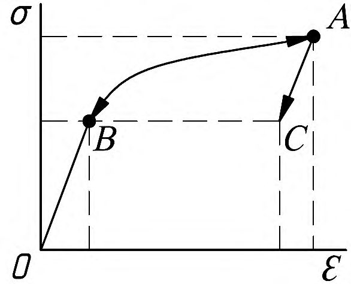
Если в процессе деформирования конструкции в некоторых ее частях появится частичная разгрузка, то жесткость системы в целом должна увеличиться. В связи с этим принятая зависимость приводит к некоторому запасу несущей способности, что позволяет в практических расчетах надежно пользоваться моделью нелинейно упругого материала.
4.2Предельные состояния стальных конструкций
При выполнении расчетов конструкций на основе идеализированной упругопластической (Прандтля) или жесткопластической диаграмм область деформирования стали не учитывается.
В соответствии с СП 16.13330 проверку пластического разрушения необходимо выполнять при расчете на прочность следующих элементов из пластических сталей с отношением σ u / σ y > 1,3 (где σ u - временное сопротивление, обозначаемое σ b по национальным стандартам на сталь; σ y -предел текучести, обозначаемый σ Т по национальным стандартам на сталь), несущих статическую нагрузку:
- а) растянутых, нормальная эксплуатация которых возможна и после достижения металлом предела текучести (некоторые типы листовых конструкций, в основном, с равномерным распределением растягивающих напряжений: листовые настилы, отдельные виды трубопроводов и резервуаров с учетом опыта их эксплуатации);
- б) сечений, ослабленных отверстиями для болтов, в болтовых конструкциях, а также в местах стыков, выполненных на болтах (кроме конструкций на высокопрочных болтах);
- в) растянутых одиночных уголков, прикрепляемых одной полкой болтами;
- г) стенок перфорированных балок.
Пластическое разрушение учитывается согласно СП 16.13330 также при установлении расчетных сопротивлений сварных и болтовых соединений.
К пластическому разрушению следует относить предельные состояния конструкций при повторяющихся нагрузках по условиям переменной текучести и прогрессивного разрушения.
В соответствии с СП 16.13330 способность стальных конструкций противостоять хрупкому разрушению следует обеспечивать выполнением требований к выбору сталей, применению соответствующих конструктивных решений, технологии обработки деталей и образования отверстий.
Проверка этого предельного состояния согласно СП 16.13330 выполняется расчетом элементов конструкций на усталость в пределах упругих деформаций стали при действии расчетных эксплуатационных нагрузок с учетом характеристик сталей, вида напряженного состояния, конструктивной схемы узла или соединения, технологии обработки детали, вида нагрузки и числа циклов нагружений.
Проверку устойчивости формы или положения следует выполнять для системы в целом и для ее отдельных элементов.
В соответствии с СП 16.13330 проверка потери устойчивости формы заключается в установлении максимального значения нагрузки, которая может быть воспринята элементом, имеющим начальные несовершенства, при расчете его по деформированной схеме с учетом неупругих деформаций стали.
Расчет на устойчивость идеальной системы или элементов в пределах упругих деформаций использован в СП 16.13330 при определении расчетных длин сжатых стержней, установлении приведенной гибкости сжатых сквозных стержней, проверке балок на общую устойчивость и т. д.
В отличие от несущей способности, когда критериями предельных состояний являются силовые факторы (или нагрузки) и выполняется проверка усилий или напряжений, для полной непригодности к эксплуатации предельные состояния конструкций при сохранении их несущей способности по существу должны оцениваться на основе деформационных критериев -ограничений перемещений или деформаций конструкций, работающих за пределом упругости.
Проверка рассматриваемого предельного состояния выполняется в традиционной форме сравнения напряжений (усилий).
Значения указанных деформационных величин, определяемые расчетом в пределах упругих деформаций стали, не должны превышать предельных значений, установленных СП 20.13330.
В отличие от предельных состояний первой группы, возможность наступления которых не допускается системой частных коэффициентов метода предельных состояний, установленные СП 16.13330 для второй группы предельные значения перемещений или параметров колебаний и изменения положения конструкций достигаются (но не превосходят) в процессе работы конструкций при действии расчетных эксплуатационных нагрузок.
4.3Учет условий работы и назначения конструкций.
Коэффициенты надежности и условий работы
Принятое значение коэффициента γ u обеспечивает возможность надежно использовать в расчетах диаграммы работы сталей в зонах больших деформаций. При этом для наиболее распространенных малоуглеродистых пластичных сталей диаграмма работы при этом используется до значений относительных удлинений ε = 4 % - 5 %, что хорошо согласуется с экспериментальными данными.
На коэффициент надежности по ответственности γ n следует умножать расчетные значения нагрузок, усилий или иных воздействий [см. формулу (2)] и делить предельные значения перемещений параметров колебаний и изменения положения конструкций [см. формулу (4)]. Предельные значения несущей способности S , определяемой по формуле (3), следует делить на коэффициент γ n .
Подробные разъяснения этих требований приведены в разделе 7.
При расчетах болтовых соединений (включая одноболтовые) следует учитывать коэффициенты условий работы γ с в соответствии с СП 16.13330.
4.4Особенности расчета стальных конструкций с учетом неупругих деформаций
Для малоуглеродистых пластичных сталей [σ y = 220-240 МПа (2450 кгс/см² )] с отношением σ u / σ y = 1,5-1,7 при расчете растянутых элементов следует учитывать значительное развитие неупругих деформаций и даже переход в стадию самоупрочнения до значений ε = 4 % - 5% (см. 4.3.1).
Для сталей высокой прочности [σ y > 600 МПа (6100 кгс/см² )] с отношением σ u / σ y = 1,15-1,20 введение коэффициента γ u = 1,3 приводит к тому, что, в связи с близостью значений σ u и σ y , расчет будет выполняться в пределах упругости. При этом учет неупругих деформаций при расчетах растянутых элементов не допускается.
В остальных случаях осевого сжатия расчет на прочность элементов из сталей с отношением σ u / σ y = 1,5-1,7 следует выполнять так же, как при растяжении.
В то же время для сжатых элементов из сталей с отношением σ u / σ y = 1,15-1,20, в отличие от растяжения, расчет выполняется с учетом неупругих деформаций, что обеспечивает более полное использование прочностных свойств сталей.
Для изгибаемых элементов из высокопрочных сталей (σ u / σ y = 1,15-1,20) неупругие деформации учитываются только в сжатой области сечения; в растянутой - расчет следует выполнять в пределах упругости. Согласно СП 16.13330 расчет таких элементов следует выполнять без учета развития пластических деформаций.
При расчете конструкций на прочность по условию ограничения пластических деформаций необходимо использовать расчетное сопротивление Rу и геометрические характеристики сечения «брутто» (подробные разъяснения этого метода расчета приведены в разделе 7).
(например, в пределах отверстий) и не будет сопровождаться ростом общих перемещений системы.
При расчетах конструкций из сталей с отношением σ u / σ y < 1,3 развитие пластических деформаций в растянутых элементах или зонах растяжения изгибаемых элементов не допускается; ограниченные пластические деформации проявляются в сжатых элементах или в зонах сжатия изгибаемых элементов при условии обеспечения местной и общей устойчивости.
5Материалы для конструкций и соединений
5.1Основные положения
В настоящем своде правил приведены новые положения, направленные на обеспечение высокой надежности при эксплуатации стальных конструкций при минимальных весовых показателях. К ним относятся:
- введение в перечень материалов для стальных конструкций листового, универсального широкополосного и фасонного прокатов, а также труб из эффективных сталей, изготовленных в металлургической промышленности по новейшим технологиям, с требованиями в соответствии с таблицами В.3 и В.4 (приложение В) СП 16.13330.2017;
- дифференцирование назначения сталей и их расчетных характеристик по видам проката (таблицы В.4, В.5, В.6 (приложение В) СП 16.13330.2017) с учетом новых возможностей современных технологий в металлургии.
- введение новых наименований сталей повышенной и высокой прочности (С355, С550);
- введение новых сталей с повышенным сопротивлением коррозионным и огневым воздействиям при пожаре (С355К и С355П соответственно);
- отдельно введение новых сталей для двутавровых балок с параллельными гранями полок (здесь введены новые стали высокой прочности С390 и С440 и существенно расширен сортамент и толщина проката).
5.2Основные требования к прокату
Таблица 2
| Характеристика стального проката | Значение характеристики | Значение характеристики |
|---|---|---|
| при t = 20 °С | при климатической t i | |
| Плотность, кг/м³ | ρ = 7850 | ρ = 7850 |
| Коэффициент линейного расширения, o C -1 | α = 0,12·10 -4 | α i = α [1 + 0,02( t i - t )] |
| Модуль упругости, МПа (кгс/см² ) | E = 2,06·10 5 (2,1·10 6 ) | E i = E [1 + 0,27·10 -3 ( t i - t )] |
| Модуль сдвига, МПа (кгс/см² ) | G = 0,78·10 5 (0,8·10 6 ) | G = 0,78·10 5 (0,8·10 6 ) |
| Коэффициент поперечной деформации (Пуассона) | ν = 0,3 | ν = 0,3 |
5.3Болтовые соединения
5.3.1 Болты и гайки для соединений
- 5.3.1.1 Болты следует назначать в соответствии с ГОСТ 6402, ГОСТ 10605, ГОСТ 10705, ГОСТ 10906, ГОСТ 11371, ГОСТ 18123, ГОСТ 18126, ГОСТ ISO 898-1, ГОСТ ISO 4032, ГОСТ ISO 8673, ГОСТ Р 52643 - ГОСТ Р 52646, ГОСТ Р ИСО 898-2, ГОСТ Р ИСО 4014, ГОСТ Р ИСО 4017, ГОСТ Р ИСО 4759-3, ГОСТ Р ИСО 8765 и по таблице Г.3 СП 16.13330.2017 с учетом условий их применения - климатических условий по СП 131.13330, характера действующих нагрузок, условий работы в соединениях (растяжение или срез).
- 5.3.1.2 Крепежные изделия применяют без покрытия. Применение крепежных изделий с покрытием (СП 28.13330 и СП 112.13330) должно быть согласовано проектной организацией с изготовителем проектируемого объекта.
- 5.3.1.3 Запрещается использовать болты без клейма и маркировки.
- 5.3.1.4 При записи условных обозначений крепежных изделий дополнительным требованием может быть обозначение длины болтов в чертежах КМ.
5.3.2 Фундаментные болты
- 5.3.2.1 По условиям эксплуатации болты подразделяются на расчетные и конструктивные.
К расчетным болтам относятся болты, воспринимающие нагрузки, возникающие при эксплуатации строительных конструкций.
К конструктивным болтам относятся болты, предусматриваемые для крепления строительных конструкций, устойчивость которых против опрокидывания или сдвига обеспечивается собственным весом конструкций.
Конструктивные болты предназначаются для рихтовки строительных конструкций во время их монтажа, обеспечения стабильной работы во время эксплуатации конструкций, а также для предотвращения случайных смещений конструкций.
- 5.3.2.2 Стали для расчетных болтов, предназначенных для крепления строительных конструкций, следует назначать по ГОСТ 24379.0, а их конструкцию и размеры - по ГОСТ 24379.1 и по таблице Г.4 (приложение Г) СП 16.13330.2017 с учетом климатических условий.
Анкерные болты следует применять в соответствии с СП 43.13330.
Гайки для фундаментных и U-образных болтов следует применять по ГОСТ 10605, ГОСТ 18126, ГОСТ 19281.
- 5.3.2.3 Шпильки конструктивных болтов для всех климатических районов следует применять из стали марки ВСт3пс2.
Стали шпилек конструктивных болтов, если они подлежат проверке на сейсмические воздействия, следует применять как для шпилек расчетных болтов.
- 5.3.2.4 Гайки и муфты фундаментных болтов следует применять из тех же сталей, что и шпильки.
6Расчетные характеристики материалов и соединений
6.1Общие положения
Значение напряжения, соответствующего наибольшей нагрузке, предшествующей разрушению образца, называется временным сопротивлением σ u .
При значениях напряжений, равных физическому (для сталей с явно выраженной площадкой текучести) или условному пределу текучести (рисунок 2), работа стали сопровождается текучестью или развитием значительных упругопластических деформаций без ее разрушения соответственно.
Основными параметрами для оценки работы стали при действии нагрузки являются значения временного сопротивления σ u и предела текучести σ y , устанавливаемые в национальных стандартах и технических условиях на поставку металлопроката.
1 - при наличии явно выраженной площадки текучести; 2 - при отсутствии площадки текучести Рисунок 2 - Диаграммы работы стали
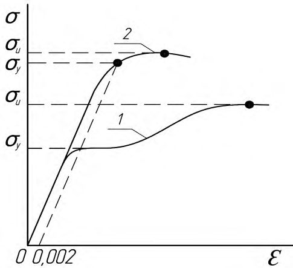
Чем выше обеспеченность нормативных сопротивлений поставляемого проката, тем более низкими приняты коэффициенты надежности по материалу (см. СП 16.13330).
6.2Расчетные сопротивления стального проката
В связи с этим в СП 16.13330 предусмотрен учет повышенных значений сопротивления металла при определении высоты сечения (толщины) элементов конструкций типа опорных плит введением для них коэффициентов условий работы γ с > 1.
6.3Расчетные сопротивления сварных соединений
В случаях, когда в стыковых соединениях невозможно обеспечить полный провар элементов, следует принимать Rwy = 0,7 Ry .
Числовые значения расчетных сопротивлений сварных соединений с угловыми швами приведены в СП 16.13330.
6.4Расчетные сопротивления одноболтовых соединений
Класс прочности зависит от марки стали и способа изготовления болтов и обозначен двумя числами. Первое число, умноженное на 10 - значение минимального временного сопротивления, кгс/мм² , второе (умноженное на 10) - отношение предела текучести к временному сопротивлению, %; произведение чисел - значение предела текучести, кгс/мм² .
6.5Характеристики стальных канатов
где А - суммарная номинальная площадь сечения всех проволок каната;
Run - нормативное сопротивление каната по временному сопротивлению, определяемое в соответствии с 6.5.2;
- γ u = 1,3 - коэффициент надежности для элементов конструкций, рассчитываемых по временному сопротивлению разрыву, учитывающий особую опасность предельного состояния (вязкое разрушение) по сравнению с предельным состоянием - чрезмерным развитием пластических деформаций;
- γ m = 1,2 - коэффициент надежности стальных канатов по материалу учитывающий, наряду со статистическим разбросом временного сопротивления, допуски на размер проволок, наличие большего числа проволок в поперечном сечении каната, большую длину канатных элементов, специфические условия приемки и отбраковки проволоки и канатов;
- γ n - коэффициент надежности по ответственности, учитывающий степень надежности и капитальности сооружения и принимаемый по таблице 3; для стальных канатов γ n отражает срок службы сооружения в большей степени, чем для других элементов, а также то, что специальный коэффициент длительной прочности из формулы прочности стальных канатов исключен;
- γ с - коэффициент условий работы канатного элемента, принимаемый по таблице 4 и учитывающий неравномерное распределение усилий между несколькими канатами, входящими в состав одного элемента, разные степени опасности случайных механических повреждений канатов, перераспределение усилий перед достижением предельного состояния в пространственных и предварительно напряженных конструкциях, а также опасность усталостных разрушений от ветровых воздействий для канатов, не рассчитываемых на выносливость;
- γ k - коэффициент условий работы, учитывающий влияние на прочность каната местных концентраторов напряжений и принимаемый по таблице 5.
Таблица 3
| Категория зданий и сооружений | Коэффициент γ n |
|---|---|
| 1 Трубопроводные мосты повышенной ответственности | 1,1 |
| 2 Здания и сооружения особо важного народнохозяйственного значения; здания, эксплуатация которых связана с наличием в них большого числа людей; антенно-мачтовые сооружения повышенной ответственности; трубопроводные мосты, кроме указанных в позиции 1 | 1,0 |
| 3 Здания и сооружения особо важного народнохозяйственного значения; антенно- мачтовые сооружения, кроме указанных в позиции 2 | 0,95 |
| 4 Здания и сооружения особо важного народнохозяйственного значения; здания, эксплуатация которых не связана с наличием в них людей; временные здания и сооружения со сроком службы свыше 5 лет | 0,90 |
| 5 Временные здания и сооружения со сроком службы до 5 лет | 0,85 |
Таблица 4
| Элементы конструкций | Коэффициент γ с |
|---|---|
| 1 Кабели, ванты, шпренгели и другие канатные элементы линейно-протяженных конструкций, кроме указанных в позиции 3 | 0,85 |
| 2 Канатные элементы пространственных висячих и вантовых покрытий, кроме указанных в позиции 3 | 0,95 |
| 3 Ветровые пояса, затяжки, оттяжки, обратные кабели и другие канатные элементы, предварительно напрягаемые усилиями, превышающими усилия от внешних нагрузок | 1,0 |
| 4 Оттяжки мачт и несущие элементы канатных полотен антенно-мачтовых конструкций согласно СП 16.13330 | 0,80-0,95 |
Таблица 5
| Узлы и детали канатных элементов | Коэффициент γ k |
|---|---|
| Концевые крепления с заливкой цинковым сплавом: | |
| а) закрытых канатов | 0,95 |
| б) спиральных и многопрядных канатов из круглых проволок | 1,0 |
| Концевые крепления с холодной заливкой смесью «эпоксидный компаунд + цинковый порошок + стальная дробь» в сочетании с высадкой или сплющиванием концов проволок | 1,0 |
| Концевые крепления со стальными клиньями в конических стаканах, с алюминиевыми прокладками и заполнением пустот эпоксидным компаундом | 1,0 |
| Перегибы каната вокруг жесткого основания по круговой кривой: | |
| а) при отношении r / d (где r - радиус кривой, d - диаметр каната) не менее: 30 - для закрытых, 25 - для спиральных из круглых проволок, 20 - для многопрядных канатов | 1,0 |
| б) при отношении r / d не менее: 20 - для закрытых, 15 - для спиральных из круглых проволок, 12 -для многопрядных канатов | 0,90 |
| Узлы с поперечным обжатием закрытых канатов усилием q , не превышающим 25 кН/см (2500 кг/см): | |
| q = ( N / r ) + (Σ N b / l ), | |
| где N - расчетное усилие растяжения каната; | |
| l - длина контакта каната с основанием | 1,0 |
| Концевые крепления гильзо-клинового типа | 0,90 |
Примечания
1 Указанные в таблице коэффициенты γ k (в т. ч. и для других типов анкеров при меньших r и больших интенсивностях q ) следует корректировать по статистически обоснованным результатам испытаний образцов узлов и канатных элементов.
2 Запрещается применять в постоянных сооружениях конструктивные решения, требующие введения γ k < 0,85, кроме отдельных узлов антенных сооружений связи, конструкция которых определяется технологическими требованиями.
- а) если для данного типа каната приведены значения разрывного усилия каната в целом Nun , или Nun - определяется статистически обоснованным способом с обработкой экспериментальных данных:
- б) если значение разрывного усилия каната в целом не приведено, но указано суммарное разрывное усилие всех проволок в канате Nt :
(7)
- где k - коэффициент агрегатной прочности каната, определяемый в зависимости от конструкции каната по таблице 6;
- в) если указано только временное сопротивление Runj проволоки:
- г) если указано только временное сопротивление проволоки, а канат составлен из проволок с разными временными сопротивлениями Runj и в каждой группе номинальная площадь сечения одной проволоки Aj и число одинаковых проволок cj :
Таблица 6
| Тип каната (пучка) | Коэффициент k |
|---|---|
| Из параллельных проволок | 1,00 |
| Спиральный закрытый | 0,90 |
| Спиральный из круглых проволок | 0,85 |
| Многопрядный | 0,80 |
Таблица 7
| Конструкция стальных канатов | Е , МПа (кгс/см² ), при расчете на нагрузки | Е , МПа (кгс/см² ), при расчете на нагрузки |
|---|---|---|
| временные | постоянные | |
| Пучки параллельных проволок сплошного или трубчатого сечения | 2·10 5 (1,96·10 6 ) | 2·10 5 (1,96·10 6 ) |
| Витые канаты: спиральные (закрытые и из круглых проволок) | Витые канаты: спиральные (закрытые и из круглых проволок) | Витые канаты: спиральные (закрытые и из круглых проволок) |
| а) 7-10 | 1,5·10 5 (1,47·10 6 ) | 1,2·10 5 (1,18·10 6 ) |
| б) 12-14 | 1,7·10 5 (1,67·10 6 ) | 1,4·10 5 (1,37·10 6 ) |
| многопрядные при кратности свивки: | многопрядные при кратности свивки: | многопрядные при кратности свивки: |
| а) прядей и канатов менее 7,5 | 1,3·10 5 (1,27·10 6 ) | 1,0·10 5 (0,98·10 6 ) |
| б) прядей 14-16 и канатов 10-12 | 1,5·10 5 (1,47·10 6 ) | 1,2·10 5 (1,18·10 6 ) |
| с органическим сердечником | 1,1·10 5 (1,08·10 6 ) | 1,0·10 5 (0,98·10 6 ) |
7Расчет элементов на осевые силы и изгиб
7.1Центрально растянутые и центрально сжатые элементы
где γ u - коэффициент, принимаемый по СП 16.13330; β - коэффициент, принимаемый > 1,0;
An - площадь сечения «нетто»;
Ru и Rу - расчетные сопротивления, принимаемые по СП 16.13330;
A - площадь сечения «брутто».
Условие равнопрочности по формулам (10) и (11) для центрально растянутых элементов
где α = An / A .
Из формулы (12) следует: если Ru / Rу > γ u / (α β), решающей является проверка по формуле (11); в противном случае - по формуле (10).
При γ u= 1,3, α = 0,85 и β = 1,1 следует, что при Ru / Rу > 1,39 достаточно выполнить проверку по формуле (11), если Ru / Rу < 1,39, то необходима проверка по формулам (10) и (11).
где 1,18 α A - условная площадь, вводимая в расчет при ослаблении сечения свыше 15 % (см. СП 16.13330.2017).
Из условия равнопрочности при проверках по формулам (10) и (13) имеем
Коэффициент условий работы γ с определен из сопоставления формул (10), (11) и (13) с формулой (15).
Для большинства наиболее широко применяемых углеродистых сталей с отношением Ru / Rу > 1,39:
Для сталей с отношением Ru / Rу < 1,39
При наиболее вероятном ослаблении сечения отверстиями для болтов от 8 % до 25 % (α = 0,92-0,75) и Ru / Rу > 1,39 γ с = 1,09-1,18. При Ru / Rу < 1,39 γ с = 0,99-1,18; при этом меньшее значение γ с соответствует Ru / Rу =1,17.
В СП 16.13330.2017 приняты γ с = 1,1 для сталей с пределом текучести σ у ≤ 440 Мпа (4500 кгс/см² ); γ с = 1,0 - для сталей с пределом текучести σ у > 440 МПа (4500 кгс/см² ).
Для упрощения расчетов на прочность сечений, ослабленных отверстиями для болтов, указанные значения коэффициентов γ с приняты и для других видов напряженнодеформированных состояний элементов конструкций (сжатие, изгиб, сжатие или растяжение с изгибом).
Начальные искривления или случайные эксцентриситеты приняты в соответствии с допускаемыми отклонениями, установленными в ГОСТ 23118 и СП 70.13330.
При решении поставленной задачи был рассмотрен внецентренно сжатый стержень, схема которого приведена на рисунке 3, а . При этом решение выполнялось в предположении малости перемещений по деформированной схеме с учетом пластических деформаций, а значение расчетной несущей способности принято равным предельному значению сжимающей силы Nu , которая воспринимается элементом (рисунок 3, б ). Форма изогнутой оси принималась по полуволне синусоиды. а) б) в а - расчетная схема; б - кривая состояния равновесия; в - график коэффициента φ для типов сечений a, b, c Рисунок 3 - К расчету сжатых стержней
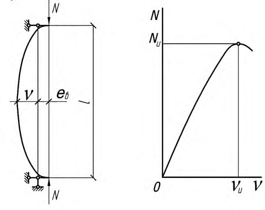
При вычислении значений коэффициентов φ для разных типов ( a, b, и c ) поперечных сечений в соответствии с таблицей 7 СП 16.13330.2017 начальные несовершенства eb принимались по формуле
где i - радиус инерции сечения для соответствующей плоскости; l - геометрическая длина элемента.
Данные несовершенства имеют случайный характер и подчиняются статистическим закономерностям, поэтому значение начальных несовершенств следует принимать на основании статистических исследований случайных величин отклонений, полученных из опытных данных. В формуле (16) первое слагаемое учитывает неправильность центрировки, а второе - начальное искривление стойки (погибь).
При нормировании коэффициентов φ определялась также критическая сила упругих идеальных стержней по методу Эйлера.
Окончательные значения коэффициентов φ приняты наименьшими из двух: вычисленных с учетом начальных несовершенств и по методу Эйлера с введением коэффициента надежности γ e =1,3 (φ = Ne / ( ARy γ e ) = π 2 / (1,3 λ ̅ 2 ) для ограничения прогибов сжатых стержней при относительно больших гибкостях, когда влияние начальных несовершенств, определяемых по формуле (16), становилось несущественным.
Полученные таким образом значения коэффициентов φ для различных типов поперечных сечений ( a, b и c ) были аппроксимированы с помощью формулы (8) СП 16.13330.2017, на основании которой составлена таблица Д.1 (приложение Д) СП.16.13330.2017.
Для расчета конструкций колонн многоэтажных зданий высотой более 100 м следует учитывать влияние характерных для них дополнительных эксцентриситетов, вызванных неправильным центрированием в стыке колонн, отклонений элементов колонн от проектного положения. Правила учета дополнительных несовершенств приведены в разделе 25.
В общем случае условие потери устойчивости шарнирно опертого центрально сжатого упругого тонкостенного стержня имеет вид
r 2 = [( Ix +Iy ) / A] + ax 2 + ay 2 , здесь ax и ay - координаты центра изгиба относительно осей x - x и y - y соответственно.
Для стержня с одной осью симметрии ( y - y ) при ay = 0 формула (17) имеет вид:
После деления всех членов на Ny N ω r 2 уравнение (18) преображается:
С учетом обозначений c = N / Ny ; δ = Ny / N ω формула (19) упрощается:
При β 2 = ax 2 δ / r 2 из уравнения (20) получим:
Для внецентренно сжатого шарнирно опертого стержня двутаврового сечения с двумя осями симметрии, изгибаемого в плоскости стенки при ах = ау = 0, условие потери устойчивости имеет вид
где ех - эксцентриситет приложения сжимающей силы относительно оси х -х .
В практических расчетах учитывается частичное стеснение депланации опорных сечений введением коэффициента 2 в первый член числителя формулы для N ω [см. формулу (17)], чем приближенно оцениваются фактические условия в узлах стержневых конструкций. В окончательном виде с использованием безразмерных величин формулы для определения с приведены в приложении Д СП 16.13330.2017.
Формулы в СП 16.13330 основаны на предположении, что соотношение критических сил при работе элемента за пределом упругости принято таким же, как при работе его в пределах упругости.
При числе панелей свыше восьми из решения задачи устойчивости шарнирно опертого идеально упругого сквозного стержня (рисунок 4) коэффициент приведенной длины получен в следующем виде
где η = δ / lb - угол сдвига, зависящий от типа соединительных элементов. или
Рисунок 4 - Шарнирно опертый сквозной стержень
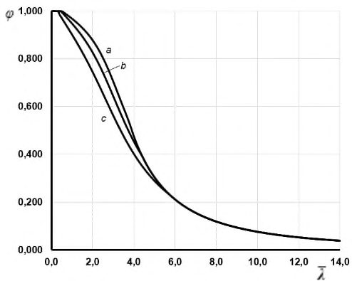
Формулы для определения η и μ при различных схемах соединительных элементов, полученные по правилам определения перемещений в рамных и стержневых системах, приведены в таблице 8.
Формулы таблицы 8 более строгие, чем приближенные формулы СП 16.13330, применение которых, однако, существенно не влияет на конечные результаты.
Для стержней с планками гибкость λ b отдельной ветви, при которой влияние указанных факторов несущественно, составляет 40.
При большем значении λ b формулы для η и μ необходимо уточнять заменой выражений (1+2 n ) и (1+ n ) соответственно на (1/β+2 n ) и (1/ β + n ), где β =1 - 0,12φ λ ̅ b 2 (здесь φ -коэффициент, вычисляемый для стержня по приведенной гибкости λ ef ).
Таблица 8
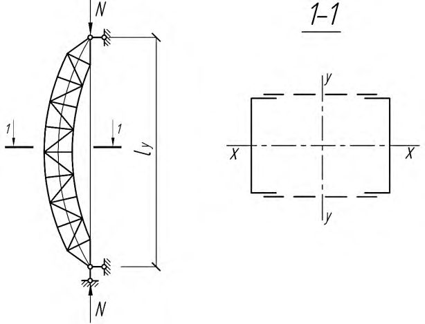
Для снятия этих ограничений при λ b ≤ 120 требуется выполнить расчет сквозного стержня по деформированной схеме, которая учитывается приближенным практическим способом расчета.
Коэффициент расчетной длины μ b = 0,7 при λ b приближенно учитывает взаимодействие ветви колонны с элементами решетки, а также вероятность одновременного совпадения расчетных значений начальных несовершенств для всего стержня и отдельной панели ветви.
Для сжатых стержней длина участка между соединениями равна 40 i , что соответствует гибкости λ b = 40 в сквозных стержнях с планками. При этом влияние продольной силы на деформирование элементов, составляющих стержень, несущественно.
Для синусоидальной формы начального искривления и изогнутой оси стержня
а - изогнутая ось стержня; б
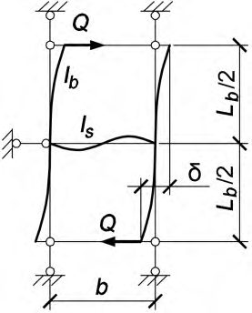
- идеализированное сечение
Рисунок 5 - К определению условной поперечной силы
Для вычисления Nu и ν u были определены предельные параметры внецентренно сжатого стержня должны быть приняты для идеализированного сечения, состоящего из двух одинаковых полок, связанных между собой жесткой связью (см. рисунок 5, б ). Влияние решетки на предельное значение Nu учитывается введением приведенной гибкости λ ef по СП 16.13330.2017.
Полученные значения Qfic для различных Ry и λ аппроксимированы в СП 16.13330 приближенной зависимостью
которая учитывает возможность недонапряжения сквозного стержня в плоскости соединительных элементов; здесь k = 7,15 . 10 -6 (2330 E / Ry ).
Значения множителя k в правой части формулы (27) для различных значений расчетных сопротивлений Rу при Е =2,06·10 5 , МПа, приведены в таблице 9.
Таблица 9
| R у , МПа (кгс/см² ) | 210 (2150) | 230 (2350) | 250 (2550) | 270 (2750) | 300 (3050) | 330 (3350) | 350 (3550) | 370 (3750) | 400 (4100) | 500 (5100) |
|---|---|---|---|---|---|---|---|---|---|---|
| k | 0,0097 | 0,0103 | 0,0108 | 0,0112 | 0,0118 | 0,0122 | 0,0125 | 0,0127 | 0,0130 | 0,0137 |
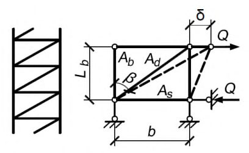
Из решения рассматриваемой задачи получено дополнительное усилие, возникающее в раскосах
Формула (22) СП 16.13330.2017 получается при Ad / As ≈1 и Ad cos 3 β /Ab ≈ 0.
Принимая σ ad = Nad /Ad и σ n = Nb /Ab =N / A, получается
Значения отношения σ ad / σ n для различных δ= lb /b приведены в таблице 10.
Таблица 10
| δ | 0,5 | 0,6 | 0,8 | 1,0 | 1,2 | 1,4 | 1,6 | 1,8 |
|---|---|---|---|---|---|---|---|---|
| σ ad / σ n | 0,082 | 0,117 | 0,200 | 0,293 | 0,396 | 0,475 | 0,554 | 0,620 |
Полученное дополнительное усилие в раскосах от обжатия поясов стержня сжимающей силой необходимо прибавить к усилию в раскосах от условной (или фактической) поперечной силы Q .
Расчет распорок, предназначенных для уменьшения расчетной длины колонн в направлении вдоль здания (из плоскости рам), при наличии нагрузок от мостовых кранов выполняют на усилие, определяемое по формуле (27), в которой значение N принимается равным сумме продольных сил в двух соседних колоннах.
7.2Изгибаемые элементы
Расчет необходимо выполнять для проверки стенок двутавровых балок в месте соединения стенки с верхним поясом. При этом в стенках разрезных балок напряжения σ x и σ y имеют одинаковые знаки, в сечениях у опор неразрезных балок эти напряжения имеют разные знаки, что необходимо учитывать при пользовании указанной формулой.
Коэффициенты ψ приведены для случая шарнирного опирания в плоскости наименьшей жесткости и свободной депланации концов расчетного участка балки. Значения ψ вычислены в предположении, что Iy / Ix<< 1. Если отношение I y / I x < 1, то значения ψ следует умножать на 1/√1 - 𝐼𝑦/𝐼𝑥 .
В формуле (30) предел пропорциональности принят равным 0,85 σ y , а отношение σ / σ y = 1 при σ cr / σ y = 2,42, что эквивалентно отношению σ y / σ cr= Er /E =0,412 (где Er -приведенный модуль).
Для балок двутаврового сечения с двумя осями симметрии критические напряжения примерно пропорциональны значению √𝐸𝑟𝐺 , где G = const. На этом основании принято, что σ cr / σ y = √ 2,42 ≈ 1,55 при σ / σ y =1. В интервале 0,85 ≤ σ cr / σ y ≤ 1,55 значение σ / σ y изменяется линейно и φ b = 0,68 + 0,21 φ1 при φ1 > 0,85.
Для балок двутаврового сечения с одной осью симметрии принята та же методика, что и для сечений с двумя осями симметрии, но значения отношения Er /E приняты различными для верхнего и нижнего поясов балки.
При устройстве закреплений сжатого пояса в отдельных точках (узлы продольных или поперечных связей, точки крепления жесткого настила) их следует рассчитывать на фактическую или условную поперечную силу в горизонтальной плоскости. При этом каждая точка закреплений предназначена для уменьшения расчетной длины сжатого пояса балки (см 7.1.18).
При непрерывном прикреплении сжатого пояса балки к жесткому настилу это прикрепление следует рассчитывать на максимальное значение эквивалентной поперечной нагрузки, действующей на пояс в горизонтальной плоскости
где N продольная сжимающая сила; ν -начальное искривление пояса; ν u искривление пояса при действии сжимающей силы N ; l пролет балки.
С учетом формулы (26) формула (31) примет вид
При плоском и профилированном металлических настилах или волнистой стали надежной связью является соединение их со сжатым поясом балки сваркой, на болтах или дюбелях.
Для создания защемления настила сплошной просечно-вытяжной настил следует приваривать к сжатому поясу балки. При этом листы настила необходимо располагать просечкой поперек пролета (перпендикулярно к оси балки).
Для сборных железобетонных плит из различных бетонов под надежной связью следует понимать крепление закладных деталей плит к сжатому поясу балки сваркой или на болтах.
Для монолитных железобетонных плит надежной связью служит приварка арматуры или специальных закладных деталей к сжатому поясу балки, или замоноличивание этого пояса в слое бетона толщиной не менее 20 мм.
При устройстве прикреплений необходимо учитывать конструктивные требования для применяемого вида соединений (минимальные размеры швов, расстояния между болтами и от края элемента и т. д.).
Для получения значений l ef / b значения 𝜆 ̅ 𝑒𝑓 , приведенные в таблице, следует умножить на y R Е / .
Таблица 11
| Место приложения нагрузки | b /t | Наибольшие значения λ ̅ 𝑒𝑓 при значениях h / b , равных | Наибольшие значения λ ̅ 𝑒𝑓 при значениях h / b , равных | Наибольшие значения λ ̅ 𝑒𝑓 при значениях h / b , равных | Наибольшие значения λ ̅ 𝑒𝑓 при значениях h / b , равных | Наибольшие значения λ ̅ 𝑒𝑓 при значениях h / b , равных | Наибольшие значения λ ̅ 𝑒𝑓 при значениях h / b , равных |
|---|---|---|---|---|---|---|---|
| 1 | 2 | 3 | 4 | 5 | 6 | ||
| К верхнему поясу | 15 | 0,858 | 0,628 | 0,551 | 0,513 | 0,490 | 0,475 |
| К верхнему поясу | 20 | 0,774 | 0,594 | 0,534 | 0,504 | 0,486 | 0,474 |
| К верхнему поясу | 25 | 0,690 | 0,560 | 0,517 | 0,495 | 0,482 | 0,473 |
| К верхнему поясу | 30 | 0,606 | 0,526 | 0,499 | 0,486 | 0,478 | 0,473 |
| К верхнему поясу | 35 | 0,522 | 0,492 | 0,482 | 0,477 | 0,474 | 0,472 |
| К нижнему поясу | 15 | 1,238 | 0,928 | 0,825 | 0,773 | 0,742 | 0,721 |
| К нижнему поясу | 20 | 1,154 | 0,894 | 0,807 | 0,764 | 0,738 | 0,720 |
| К нижнему поясу | 25 | 1,070 | 0,860 | 0,790 | 0,755 | 0,734 | 0,720 |
| К нижнему поясу | 30 | 0,986 | 0,826 | 0,773 | 0,746 | 0,730 | 0,719 |
| К нижнему поясу | 35 | 0,902 | 0,792 | 0,755 | 0,737 | 0,726 | 0,718 |
| Независимо от уровня приложения нагрузки при расчете участка между связями или при чистом изгибе | 15 | 0,948 | 0,703 | 0,621 | 0,580 | 0,556 | 0,540 |
| 20 | 0,884 | 0,679 | 0,611 | 0,576 | 0,556 | 0,542 | |
| 25 | 0,820 | 0,655 | 0,600 | 0,572 | 0,556 | 0,545 | |
| 30 | 0,756 | 0,631 | 0,589 | 0,568 | 0,556 | 0,547 | |
| 35 | 0,692 | 0,607 | 0,579 | 0,564 | 0,556 | 0,550 |
Для двутавровых балок, рассчитываемых по формуле (70) СП 16.13330.2017 при отсутствии секториальных напряжений, проверка устойчивости при двухосном изгибе выполняется как частный случай из уравнения взаимодействия для стержня, сжатого с двухосным эксцентриситетом.
При приложении нагрузки, действующей в плоскости, параллельной плоскости x - x , только к одному (верхнему) поясу балки во втором члене формулы (70) СП 16.13330.2017 следует принимать изгибающий момент My,f и момент сопротивления Wy,f (верхнего) пояса балки соответственно.
При этом значение коэффициента ci не должно быть меньше единицы; в противном случае расчет необходимо выполнять в пределах упругой работы стали по формулам (41) и (42) СП 16.13330.2017.
При наличии в балке протяженной зоны чистого изгиба, когда развитие пластических деформаций предполагается не в одном сечении, а на определенном участке ее длины, с целью ограничения общих перемещений, значение предельного момента уменьшается и принимается равным полусумме предельных моментов при работе сечения в пределах и за пределом упругости.
В методике расчета балок с учетом ограниченных пластических деформаций в СП 16.13330 принимаются меньшие значения коэффициентов c i , соответствующие меньшим значениям пластических деформаций. Это позволяет рассчитывать балки при различных значениях ограниченных деформаций, что практически важно для получения оптимальных сечений с учетом назначения элемента, условий эксплуатации, конструктивного решения, формы сечения и соотношений его размеров и т. д. При этом проверку прочности сечения, местной устойчивости пластинок этого сечения, общей устойчивости балки и ее жесткости следует выполнять в зависимости от значения принимаемой деформации, правильный выбор которой обеспечит минимум площади сечения. Таким образом, основной задачей расчета с учетом ограниченных деформаций является проектирование балок минимальной массы.
Расчет на устойчивость стенок балок двутаврового поперечного сечения с двумя осями симметрии, укрепленных только поперечными ребрами жесткости, следует выполнять по формуле (86) СП 16.13330.2017, которая устанавливает значение критического момента для всей балки.
Требования 7.2.1 относятся к случаю чистого изгиба и соответствуют принятому значению ограничения пластических деформаций в сечении.
При действии сосредоточенной силы в середине балки значения отношений l ef / b следует увеличивать на 25 % по сравнению с их значениями при чистом изгибе.
Формула (56) СП 16.13330.2017 получена из условия ограничения максимальных остаточных деформаций в сечении значением ∈ ̅ 𝑟,𝑚𝑎𝑥 = 3 (где ∈ ̅ 𝑟,𝑚𝑎𝑥 =∈𝑟,𝑚𝑎𝑥 𝐸/𝑅𝑦 ).
7.3Элементы, подверженные действию осевой силы с изгибом
Что касается формулы (106) СП 16.13330.2017, то проверка прочности сечения в пределах упругих деформаций может привести к меньшим значениям предельных нагрузок, чем проверка устойчивости по формуле (109) СП 16.13330.2017, особенно для коротких стержней. Поэтому проверку прочности сечения по формуле (106) СП 16.13330.2017 необходимо выполнять помимо проверки устойчивости с учетом указанных в СП 16.13330 условий применения этой формулы (см. рисунок 7).
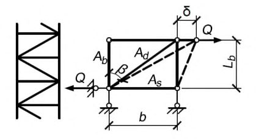
1 - на прочность по формуле (105); 2 - на прочность по формуле (106); 3-4 - области возможных значений N и M при проверке устойчивости
Рисунок 7 - К расчету внецентренно сжатых элементов по формулам СП 16.13330
Коэффициенты ci в формуле (105) СП 16.13330.2017 установлены с учетом разъяснений, изложенных в 7.2.7; коэффициент n характеризует «полноту» поверхностей кривых взаимодействия для различных типов сечений (рисунок 8).
Рисунок 8 - Зависимость «полноты» кривых взаимодействия от значений коэффициента n
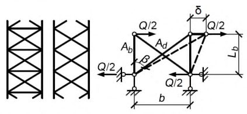
При установлении значений коэффициентов cх в таблице Е.1 (приложение Е) СП 16.13330 предполагалось, что изгиб элементов происходит в плоскости у - у , а нагрузки во всех случаях действуют сверху вниз. При установлении значений коэффициентов cу принималось, что изгиб элементов происходит в плоскости х - х . Коэффициенты n (при My = 0) необходимо принимать с учетом того, что эксцентриситеты приложения нагрузки во всех случаях расположены сверху схем сечения, т. е. так же, как это показано в таблице Д.2 (приложение Д) СП 16.13330.2017. Это важно при расчете несимметричных сечений относительно оси х - х .
При небольших значениях осевой силы N /( AnRy ) ≤ 0,1 рассматриваемые элементы приближаются к изгибаемым, поэтому при их расчете необходимо учитывать соответствующие условия и требования.
Расчеты выполняются с использованием коэффициентов устойчивости φ е при внецентренном сжатии, которые получены в соответствии с расчетной схемой, приведенной на рисунке 3, в зависимости от относительного эксцентриситета mef и условной гибкости λ ̅ .
При этом на рисунке 3 вместо начального эксцентриситета eb следует принимать расчетный эксцентриситет e . Если eb > e , то вместо коэффициентов φ е необходимо принимать коэффициенты φ.
В таблице Д.2 (приложение Д) СП 16.13330.2017 приведены коэффициенты влияния формы сечения η, с помощью которых учитывается развитие пластических деформаций и, таким образом, стержни различных типов сечений по значению предельных сил Nu приводятся к стержню прямоугольного сечения (для которого η =1) при одной и той же гибкости λ.
Увеличение прогибов ν внецентренно сжатых элементов при изгибе учтено в расчете отдельного стержня по деформированной схеме при определении предельной силы Nu (см. рисунок 3) и, следовательно, коэффициентов φ е .
В этом случае проверку устойчивости следует выполнять в плоскости наименьшей жесткости у -у как центрально cжатого элемента с введением коэффициента с , учитывающего влияние изгибающего момента Мх на пространственную потерю устойчивости стержня.
При определении расчетной длины ветвей в обеих плоскостях следует учитывать переменность продольной силы по длине ветви за счет изменения изгибающего момента (см. раздел 8).
где Nx = (π 2 / l x 2 ) EIx; Ny= (π 2 / l y 2 ) EIy .
7.4Подбор сечений центрально сжатых, сжато-изгибаемых и изгибаемых элементов
7.4.1 Общие положения
- 7.4.1.1 Подбор поперечных сечений стальных элементов выполняется в три этапа: первый -предварительный расчет, выявляющий ориентировочные параметры элементов сечения; второй -компоновка сечения и вычисление его геометрических характеристик; третий -поверочный расчет сечения элемента и уточнение его параметров.
7.4.1.2 Основным этапом , определяющим качество всего расчета, является первый. От него зависит, насколько эффективным будет окончательно принятое сечение элемента и какова трудоемкость расчета. Компоновка сечения при обеспечении всех нормативных требований должна производиться предварительным расчетом за один раз. Он выполняется при двух условиях, предъявляемых к габаритам сечения: первом -габариты заданы или приняты из конструктивных соображений; втором -габариты должны быть определены из критериев оптимальности.
При первом условии расчет выполняется обычным порядком, исходя из ориентировочных зависимостей расчетных параметров от размеров сечения; при втором -с использованием прямого метода подбора сечения, позволяющего наиболее просто получить оптимальное решение (достижение минимума массы или стоимости элемента).
- 7.4.1.3 Второй этап подбора выполняется с целью увязки расчетных параметров с размерами элементов составного сечения в соответствии с требованиями конструирования и фактическими размерами элементов, указанными в сортаменте. Этот этап является вспомогательным, не определяющим размеры поперечного сечения, а лишь вносящим некоторую корректировку, учитывающую реальное проектирование.
- 7.4.1.4 Третий этап -завершение подбора сечения проверочным расчетом в соответствии с требованиями нормативных документов. На этом этапе производится несущественное уточнение параметров и характеристик сечения, не вызывающих необходимость перерасчета.
7.4.2 Центрально сжатые элементы
- 7.4.2.1 Требуемая площадь поперечного сечения А при заданных габаритах определяется из формулы (7) СП 16.13330.2017.
Коэффициенты продольного изгиба следует определять в соответствии с 7.1.3 СП 16.13330.2017.
Условная гибкость стержня λ ̅ = λ √𝑅𝑦/𝐸 (где λ = l ef / i ) определяется с использованием приближенных значений радиусов инерции сечений относительно главных осей i x , i y , принимаемых по таблице 12 ( х -горизонтальная ось, у -вертикальная ось).
Для сквозных стержней при вычислении λ ̅ относительно свободной оси, вместо λ , принимается λ ef , определяемая по таблице 8 СП 16.13330.2017. Для составных стержней сквозного сечения с планками при ( hb/b ) ≥ (20/ λ ̅ ), где hb -ширина планки; b -расстояние в осях ветвей, следует считать Is l / ( Ibb ) 5.
7.4.2.2 Оптимальное сечение стержня заданной формы должно удовлетворять двум условиям:
- равноустойчивости, т. е. λ x = λ у ;
- предельной тонкостенности элементов сечения (стенки и полки) в соответствии с таблицами 9, 10 и подраздела 9.4 СП 16.13330.2017.
Таблица 12
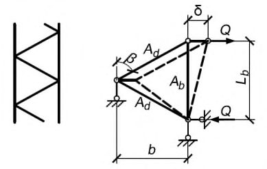
Верхняя граница рациональной области применения стали повышенной и высокой прочности определяется из условия снижения массы стержня (площади поперечного сечения А ) с ростом расчетного сопротивления, т. е. dA / dRy 0, которое выполняется при λ ̅ 3,9. Поэтому стержни с условной гибкостью λ ̅ > 3,9 должны выполняться из малоуглеродистой стали, так как при λ > 120 применение стали с расчетным сопротивлением Ry > 225 МПа (2294 кгс/см² ) - нерентабельно.
Применение стали повышенной и высокой прочности экономически эффективно (наблюдается не только снижение массы, но и стоимости конструкции) при λ ̅ 2,5.
7.4.2.3 Прямой метод подбора поперечного сечения стержня позволяет получить значение требуемой условной гибкости λ ̅ за один раз. Для этого формулу (7) СП 16.13330.2017 следует преобразовать в формулу
где = ВС ;
A i A I C 2 2 = = -квадрат удельного радиуса инерции поперечного сечения относительно одной из главных осей.
Для наиболее распространенных сплошностенчатых сечений значения параметра С могут быть определены по таблице 13.
В таблице 13 указан также размер от ближайшего края до центра тяжести сечения, несимметричного относительно оси х х :
Таблица 13
| Поперечное сечение | Поперечное сечение | Поперечное сечение | Поперечное сечение | Поперечное сечение | Поперечное сечение | Поперечное сечение | |
|---|---|---|---|---|---|---|---|
| Параметр | |||||||
| С x | 1 8 d t | 1 36 h t | 1 48 h t | u u u w ( ) ( ) 3 24 1 2 + + | u u u w ( ) ( ) 3 12 1 3 + + | u u u w 2 3 4 12 1 ( ) ( ) + + | u u w 2 2 12 (1 ) + |
| C y | 1 8 d t | 1 36 h t | 1 12 h t | 1 3 24 1 2 + + u u f ( ) | 1 24 1 2 ( ) + u f | 1 12 1 2 ( ) + u f | 1 12 1 2 ( ) + u f |
Примечание - В настоящей таблице приняты следующие обозначения:
сечения; nw и nf -соответствующее число элементов в составе сечения;
b h = -соотношение размеров (габаритов) сечения -высоты к ширине.
Для двутаврового сечения с неустойчивой (работающей в закритическом состоянии) стенкой формулы для определения параметра С приведены в таблице 14.
При центральном сжатии в соответствии с 7.3.5 СП 16.13330.2017 принимается λ w ≤ 1,5 hef/tw . Для двутаврового сечения 2/3 uef / u 1, при которых ξ ≈ 1. Тогда при расчете двутаврового сечения с неустойчивой стенкой в качестве исходного значения следует принимать uef = 2 u /3 .
Полная площадь сечения, включая неустойчивую часть стенки, равна
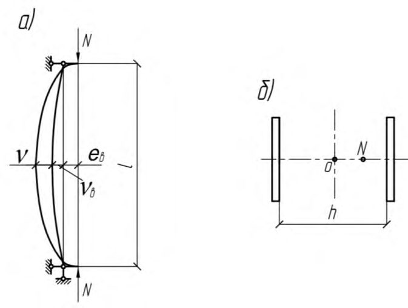
Таблица 14
| Сечение | Формула для определения параметров | Формула для определения параметров |
|---|---|---|
| C x | С у | |
| C u u u x ef w = + + ( ) ( ) 3 12 1 2 | 𝐶 𝑦 = 𝜆 𝑓 24(1+𝑢 𝑒𝑓 ) 2 |
Примечание - В настоящей таблице приняты следующие обозначения:
Для составных сечений из прокатных наиболее тонкостенных профилей значения параметра С приведены в таблице 15.
Таблица 15
| Сечение | Сечение | Сечение | Сечение | |
|---|---|---|---|---|
| Параметр | ||||
| С x | 0,36 | 0,50 | 0,16 | 1,3 - 2,0 |
| C y | 0,75 | 0,35 | 1,2 | b 2 /4 A |
При гибкости широких полок уголков λ f = ( h/t ) < 15 значения С должны быть уменьшены в λ f / 15 раз; нижние и верхние значения С для двутавров и швеллеров соответствуют малым и большим номерам профилей. Для сквозного трехгранного симметричного сечения Сx = Су = b / 6 А (где b -расстояние между осями ветвей).
7.4.2.4 Оптимальные соотношения основных размеров (габаритов) поперечных сечений сжатых элементов при обеспечении их равноустойчивости определяются из выражения где x y C C / =
Таблица 16
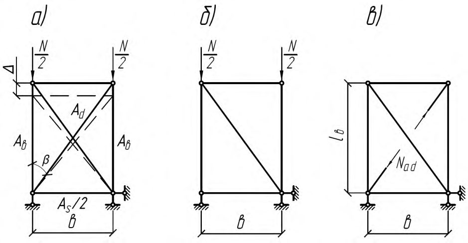
Примечание - ε = (λ 1 / λ ef,x ) 2 , где λ 1 0,6λ ef,x 40 -в случае соединения ветвей сквозной колонны планками, имеющими ширину hb 20 b /λ 1 , в этом случае они считаются абсолютно жесткими; = 14 A / Ad λ 2 ef,x -в случае соединения ветвей треугольной решеткой с диагональю, наклоненной к ветви под углом 45°, площадью поперечного сечения Ad .
При невозможности удовлетворить соотношение [ξ] по конструктивным соображениям расчет на устойчивость выполняется только в одном направлении. Для двутавра при ξ = 1 расчет на устойчивость производится только в плоскости полок
7.4.3 Сжато-изгибаемые и внецентренно сжатые элементы
7.4.3.1 При заданных габаритах сечения требуемая (расчетная) площадь стержня А определяется из формулы (109) СП 16.13330.2017.
Коэффициент устойчивости e , определяется в соответствии с требованиями 9.2.2 СП 16.13330.2017; относительный эксцентриситет т определяют по формуле
где ω = ( ea / l ef i ) y E / R -параметр исходных данных, являющийся безразмерной величиной, зависящей от отношений эксцентриситета е = M / N к расчетной длине стержня l ef и а/i, а также от характеристик материала Е и Ry ; а -расстояние от центра тяжести сечения до его расчетного сжатого волокна. Для симметричного в грузовой плоскости сплошного сечения а = h /2; для несимметричного сечения некоторые значения а приведены в таблице 13.
Значения радиуса инерции i принимаются по таблице 12.
7.4.3.2 Для сжато-изгибаемых элементов с сечением, несимметричным в грузовой плоскости, условием качественного выполнения предварительного расчета является правильное назначение (с допуском не более 2 % высоты сечения) положения центра тяжести. Для двутаврового обобщенного сечения (рисунок 9) положение его центра тяжести и радиусы инерции определяются по следующим формулам:
где N1 , M1 ; N2 , M2 -расчетные комбинации продольной силы и изгибающего момента соответственно для первой и второй ветвей или полок сжатого элемента.
Рисунок 9 -Схема двутаврового обобщенного сечения с неустойчивой стенкой
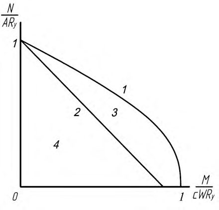
При устойчивой стенке ( ) 2 1 A A ht u u h h w ef ef + = = = ; при неустойчивой стенке = h h h w ef A A t h u w ef ef + =
Требуемые площади поясов (полок) определяются по формулам:
где A = A1 + A2 + heft -расчетная площадь поперечного сечения.
При (1,7 / λ ̅ w ) = ( uef / u ) < 1 полная площадь поперечного сечения элемента равна
Для частных случаев:
- а) при сквозном сечении ( C 1 = С 2 = uef = 0);
- б) при сплошном сечении с первой ветвью из листа ( С 1 = 0; h + С 2 1,1 h )
- 7.4.3.3 Двутавровое сечение следует проектировать с неустойчивой (работающей в закритическом состоянии) стенкой или со стенкой, укрепленной продольным ребром с включением его в состав сечения.
Требуемые размеры ребра, обеспечивающего устойчивость стенки, определяются из условий:
где λ ̅ w -условная гибкость стенки;
Ry -расчетное сопротивление стали ребра;
- 7.4.3.4 Оптимальное сечение заданной формы должно удовлетворять условию равноустойчивости, из которого определяется оптимальное соотношение размеров (габаритов) поперечного сечения:
где -параметр для наиболее часто встречающихся сечений, приведенный в таблице 16.
Значения отношений гибкостей могут быть определены по формулам (при 5 < mx < 10 отношение λ ̅ у / λ ̅ определяется линейной интерполяцией между граничными значениями отношений при тx = 5 и тx = 10):
где λ ̅ и λ ̅ у - условная гибкость стержня в грузовой плоскости (относительно оси х -х ) и в перпендикулярном направлении соответственно; φ = φ ( λ ̅ ) - коэффициент продольного изгиба;
- коэффициент, принимаемый по таблице 21 СП 16.13330.2017.
Выражение [ζ] является оптимальным условием лишь при ζ ≤ 3 (1 + m ) / (3 - 2ζ) m (где ζ принимается в соответствии с 7.4.2.3); в противном случае компоновку оптимального сечения следует выполнять с учетом конструктивных соображений (при ( l xef / l yef ) > 3 и т > 5).
- 7.4.3.5 Прямой метод подбора оптимального сечения сжато-изгибаемого и внецентренно сжатого стержней сводится к расчету центрально сжатого стержня на условную продольную силу Ne = (1 + φ λ ̅ ω) N . Тогда при e 0,03
где . ) 4,4 (1 4 N N e e + =
Здесь = N Ne e определяется последовательным приближением с исходным значением e = = ВС . Процесс сходимости очень быстрый, так что достаточно 3-4 итерации.
Приближенное значение
Указанный метод дает точный результат для λ ̅ и завышает расчетную площадь поперечного сечения до 5 % - 15 %.
7.4.3.6 Строгий метод прямого подбора сечения стержня основывается на определении требуемой условной гибкости λ ̅ , выражение которой получено преобразованием формулы (109) СП 16.13330.2017 в = / e .
Для получения решения используют следующие аппроксимирующие зависимости для e : при 0,03 при < 0,03 где ω ef = ηω (см. 7.4.3.1).
Значения коэффициентов k и γ f определяются по таблице 17.
Таблица 17
| Тип сечения | Значения k при | Значения k при | Значения k при | γ f |
|---|---|---|---|---|
| Тип сечения | > 0,1 | 0,1 0,03 | < 0,03 | |
| Сплошное | 016 2 0 3 , , + + | 0,84 | 0,51 + 11 | 0,8 |
| Сквозное | 0 35 2 4 0 6 , , , + + | 1,25 | 0,65 + 20 | 0,75 |
С учетом e = λ ̅ 2 требуемые (расчетные) площади поперечного сечения стержня определяются по формуле (109) СП 16.13330.2017, в которой при определении e необходимо принимать:
или
Таблица 18
Примечание - Над чертой приведены результаты для сквозного сечения, под чертой - для сплошного прямоугольного сечения.
Отсюда при n ef k + 1 = 1,03 -1,05 (что соответствует 750 1 = ef l e ) λ ̅ принимается как для центрально сжатых стержней.
7.4.3.7 Для сжато-изгибаемых элементов верхняя граница области рационального применения стали повышенной и высокой прочности должна снижаться по мере возрастания относительного эксцентриситета т во избежание больших поперечных перемещений оси. Установлено, что при действии эксцентрично приложенной по концам шарнирно опертого стержня продольной силы с нормативной величиной R A N y e n = , где
коэффициент перегрузки п = 1,2, относительный прогиб f / l при аппроксимации диаграммы работы стали диаграммой Прандтля будет иметь значения, указанные в таблице 18.
Исходя из условия f / l 0,01, получены следующие ограничения для основных сжатых элементов:
| λ ̅ | Значения 100 | Значения 100 | Значения 100 | y R l f 210 | при m , равном | при m , равном | при m , равном |
|---|---|---|---|---|---|---|---|
| 0,5 | 1,0 | 2,0 | 4,0 | 6,0 | 10,0 | 20,0 | |
| 1 | 0,08 0,12 | 0,20 0,17 | 0,32 0,22 | 0,37 0,26 | 0,40 0,28 | 0,46 0,30 | 0,57 0,31 |
| 2 | 0,19 0,28 | 0,30 0,36 | 0,41 0,44 | 0,50 0,52 | 0,55 0,56 | 0,65 0,60 | 0,80 0,62 |
| 3 | 0,31 0,44 | 0,42 0,55 | 0,54 0,67 | 0,62 0,77 | 0,69 0,82 | 0,79 0,88 | 0,97 0,93 |
| 4 | 0,43 0,61 | 0,52 0,74 | 0,67 0,88 | 0,76 1,01 | 0,83 1,09 | 0,94 1,17 | 1,15 1,23 |
В случае соблюдения указанных неравенств следует применять сталь повышенной и высокой прочности, в противном случае необходимо переходить к малоуглеродистой стали с расчетным сопротивлением Ry = 225 МПа (2294 кгс/см² ). Таким образом, все сжатоизгибаемые элементы гибкостью > 120 должны выполняться из малоуглеродистой стали.
7.4.4 Изгибаемые элементы
7.4.4.1 Высота стенки балки hw 0,96 h , где h -высота балки симметричного сечения, назначаемая из конструктивных соображений (строительная высота), должна располагаться в интервале значений между минимальной и оптимальной высотами hmin hw hopt.
Минимальная высота балки hmin определяется по формуле
где f l n = o -норма прогиба для балки;
-площадь эпюры изгибающего момента на длине балки l от нормативной поперечной нагрузки; c y c R M W 1 = -принимается в соответствии с СП 16.13330.2017.
Оптимальная высота определяется также из единого выражения для любых случаев (балка постоянного и переменного сечений, бистальная балка и балка, рассчитываемая с учетом ограниченной пластичности), так как некоторое ее изменение практически не влияет на оценку минимума массы или стоимости конструкции:
При hopt hmin 1,25 hopt принимается hw = hmin , при котором определяется максимально возможное значение расчетного сопротивления материала балки (поясов бистальной балки) Ry.
7.4.4.2 Гибкость стенки w w w t h = -определяется из условия ее прочности на срез:
балки; k = 1,2 при расчете по упругой стадии).
(в частности, при действии на балку равномерно распределенной нагрузки с интенсивностью р значения c y w R p l k 0,3 3 и l k h w 0,15 = ). Так как l h w -= 12 1 8 1 , условие прочности не будет лимитировать гибкость стенки балки с оптимальной высотой, при учете упругопластической стадии работы опорного сечения, и в случае применения стали повышенной и высокой прочности.
7.4.4.3 Гибкость упругой стенки λ w лимитируется сверху условием ее местной устойчивости. При укреплении стенки только поперечными ребрами максимальная гибкость стенки определяется из формулы
где w w , -максимальные условные гибкости стенки при действии только нормальных (в том числе и loc ) и только касательных напряжений соответственно в расчетном сечении при среднем их значении c s R 3 2 = , вычисляемые в соответствии с СП 16.13330:
Для стенки балки, укрепленной кроме поперечных основных ребер одним продольным ребром на расстоянии от сжатого пояса h w h -= 5 1 4 1 1 , ее условная гибкость λ ̅ w увеличивается до 3 раз по сравнению с λ ̅ w для стенки балки с поперечными ребрами.
7.4.4.4 Условная гибкость стенки упругопластической балки при обеспечении ее проверки на устойчивость должна находиться в интервале значений:
Для распространенного соотношения площадей сечения полки и стенки (балки переменного сечения) Af /Aw = 0,67 окажется, 2,2 < λ ̅ w < 2,2 + 2,3 2 3,3 1 -s R , т. е. λ ̅ w 4,5 и τ / Rs ≤ 0,5.
Соответственно для бистальной балки установлено, что условная гибкость упругопластической устойчивой стенки должна быть в ориентировочных пределах:
где y f y R R .
7.4.4.5 Средняя по длине (для балки переменного сечения) площадь поперечного сечения А симметричной балки определяется из выражения
f и w -конструктивные коэффициенты для полки и стенки;
3 1,8 y c y opt R E R M h = -оптимальная высота балки с условной гибкостью стенки λ ̅ w = 5,8; c 1 - коэффициент, определяемый по формулам СП 16.13330.2017. При этом значения коэффициента ξ будут следующими:
оптимальной высоты opt w opt h h = 3 5,8 ;
При учете ограниченной пластичности ( с 1 > 1) значения ξ для балки переменного сечения, при которых обеспечивается выполнение проверки местной устойчивости стенки при = 0, приведены в таблице 19.
Таблица 19
| λ ̅ w | Значения ξ при с 1 , равном | Значения ξ при с 1 , равном | Значения ξ при с 1 , равном | Значения ξ при с 1 , равном | Значения ξ при с 1 , равном |
|---|---|---|---|---|---|
| λ ̅ w | 1,04 | 1,06 | 1,08 | 1,10 | 1,12 |
| 3,0 | 1,77 | 1,69 | 1,67 | 1,67 | 1,69 |
| 3,5 | 1,66 | 1,60 | 1,54 | 1,60 | 1,63 |
| 4,0 | 1,56 | 1,54 | 1,55 | 1,59 | 1,64 |
| 4,5 | 1,50 | 1,54 | 1,60 | 1,67 | 1,76 |
Минимальным значениям ξ соответствует с 1 = 1,22-0,04 λ ̅ w .
Сопоставление минимальных значений ξ для упругой и упругопластической балок показывает, что при: λ ̅ w > 4,5 минимальной по массе будет упругая балка; λ ̅ w = 4,5-4,0 учет ограниченной пластичности приводит к снижению массы балки на 2 % - 3 %; λ ̅ w = 3,5-3,0 эффект от учета пластических деформаций составляет 3 % - 5 %; λ ̅ w < 3,0 эффект в среднем равен 5 % - 10 % и может достигать 15 % при λ ̅ w < 2,2.
Так как коэффициент ξ уменьшается с ростом λ ̅ w , то упругая балка является наиболее эффективной (здесь не принимается в сравнение бистальная балка). Экономический эффект от учета пластических деформаций может быть получен при λ ̅ w < 4,0, когда исключена возможность компоновки оптимального сечения упругой балки (например, из-за снижения строительной высоты) или когда толщина стенки определяется из условия прочности на срез и принимается больше требуемой толщины из конструктивных соображений.
7.4.4.6 Соотношение площадей сечения полки и стенки определяется по формуле
Требуемая площадь сечения полки определяется по формуле
Толщину неокаймленной сжатой полки балки для обеспечения ее устойчивости следует принимать равной:
Толщину полки следует принимать не более 20 мм, так как при этом возрастает расчетное сопротивление стали Ry , за счет чего может быть получен дополнительный экономический эффект.
7.4.4.7 Когда задача подбора оптимальных сечений сжато-изгибаемых элементов не усложняется требованием получения равноустойчивого сечения элемента и когда по конструктивным соображениям задается тонкостенность сечения, предварительный расчет выполняется в два этапа: первый - по рекомендациям 7.4.3.5 определяются расчетные параметры; второй -по рекомендациям 7.4.3.6 проверяются и корректируются расчетные параметры.
7.5Проверка устойчивости стенок и поясных листов изгибаемых и сжатых элементов
7.5.1 Общие положения
7.5.1.1 При решении вопросов устойчивости пластинок, образующих сечения элементов стальных конструкций, рассматриваются прямоугольные пластинки под действием внешней нагрузки в срединной плоскости пластинки. В докритическом состоянии пластинки считаются идеально плоскими (рисунок 10).
За критическое состояние пластинки принимается момент бифуркации (разветвления) форм ее равновесия, когда одновременно с плоской формой равновесия существует форма, возникающая при выпучивании пластинки.
Рисунок 10 - Схема загружения пластинки
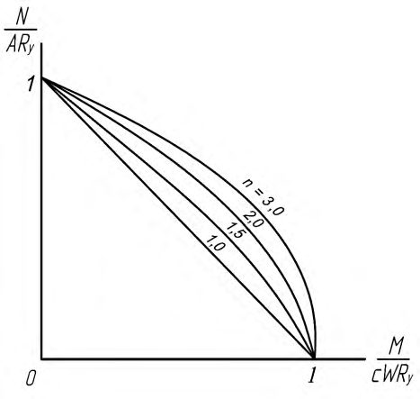
7.5.1.2 Решение задачи устойчивости пластинки состоит из двух этапов. На первом этапе вычисляются компоненты напряженно-деформированного докритического состояния в пределах упругости или с применением одной из теорий пластичности. При этом рассматривается изолированная пластинка, загруженная по контуру, и для любой точки с координатами х , у вычисляются компоненты напряжений и деформаций.
Однако, на этом этапе следует исследовать работу стержня, в состав которого входит пластинка, и определить для нее компоненты напряженно-деформированного состояния.
На втором этапе определяется критическое состояние пластинки. При прямом ходе решения задачи для заданной гибкости пластинки и вычисленных компонентов напряженно-деформированного состояния определяется внешняя нагрузка, соответствующая критическому состоянию. При обратном ходе решения для заданной внешней нагрузки вычисляется гибкость пластинки, соответствующая ее критическому состоянию. В упругопластических задачах чаще применяется обратный ход решения, так как за пределом упругости связь между параметром нагрузки и деформациями пластинки становится неоднозначной, что значительно усложняет процесс определения критической нагрузки для пластинки заданной гибкости. Особенно трудоемким становится этот процесс при наличии нескольких компонентов напряжений.
7.5.1.3 При постановке задачи, включающей оба этапа решения, на первом этапе определяется нагрузка, соответствующая принимаемому предельному состоянию стержня. Это может быть точка максимума на кривой равновесных состояний (рисунок 11) или другая точка, соответствующая предельному состоянию стержня. Из решения задачи для предельного состояния всего стержня вычисляются компоненты напряженнодеформированного состояния, которые являются исходными данными для определения критической гибкости пластинок, составляющих поперечное сечение стержня.
Такой подход позволяет реализовать принцип равноустойчивости, сущность которого заключается в том, что предельное состояние всего стержня и элементов сечения (пластинок) соответствует одному значению внешней нагрузки. Описанная схема реализована в расчетах устойчивости стенок и поясов центрально- и внецентренно сжатых стержней, когда напряженно-деформированное состояние в опасном сечении определялось из решения соответствующей задачи для всего стержня.
P - параметр нагрузки; ν - характерное перемещение стержня Рисунок 11 - Кривая равновесных состояний стержня
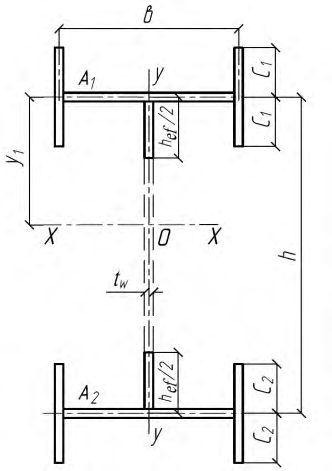
7.5.1.4 При решении задач для элементов сечений стержней получена общая зависимость критической гибкости пластинки от значения деформаций и закон их распределения.
В общем случае условная гибкость пластинки λ ̅ w = ( b / t ) Е R у / вычисляется по формуле
где ν - коэффициент Пуассона; θ0 , k 1 - коэффициенты, приведенные в таблице 20 для диаграммы Прандтля в зависимости от параметра α1 = 1 -∈ ̅ 2/∈ ̅ 1 , характеризующего распределение деформаций по ширине пластинки;
∈ ̅ 2 , ∈ ̅ 1 - деформации на продольных кромках пластинки ( ∈ ̅ 1 > ∈ ̅ 2 );
∈ ̅ 𝑝𝑟 - деформация, соответствующая пределу пропорциональности.
Здесь ∈ ̅ 1=∈1 𝐸/𝑅𝑦; ∈ ̅ 2=∈2 𝐸/𝑅𝑦 ; ∈ ̅ 𝑝𝑟=∈𝑝𝑟 𝐸/𝑅𝑦 .
Таблица 20
| Условная | Коэффициенты | Значения θ 0 , и k 1 при α, равном | Значения θ 0 , и k 1 при α, равном | Значения θ 0 , и k 1 при α, равном | Значения θ 0 , и k 1 при α, равном | Значения θ 0 , и k 1 при α, равном |
|---|---|---|---|---|---|---|
| гибкость | 0 | 0,5 | 1,0 | 1,5 | 2,0 | |
| λ ̅ 1 | θ 0 | 0,167 | 0,127 | 0,0896 | 0,0523 | 0,030 |
| k 1 | 0,361 | 0,249 | 0,1600 | 0,0898 | 0,0498 | |
| λ ̅ 2 | θ 0 | 0,250 | 0,187 | 0,1290 | 0,0750 | 0,0419 |
| k 1 | 0,345 | 0,239 | 0,1520 | 0,0855 | 0,0475 | |
| λ ̅ 3 | θ 0 | 2,320 | 1,730 | 1,1700 | 0,8900 | 0,8650 |
| k 1 | 3,540 | 2,500 | 1,3300 | 1,1100 | 0,9280 | |
| λ ̅ 4 | θ 0 | 2,320 | 1,450 | 0,5770 | 0,0800 | 0,0422 |
| k 1 | 3,540 | 3,320 | 1,0800 | 0,1280 | 0,0690 | |
| λ ̅ 5 | θ 0 | 2,320 | 2,100 | 1,7400 | 1,4400 | 1,1600 |
| k 1 | 3,540 | 2,640 | 2,6200 | 1,3200 | 1,1700 |
Примечание - В настоящей таблице приняты следующие обозначения: λ ̅ 1 - условная гибкость стенки двутавра или прямоугольного коробчатого сечения с учетом частичного защемления в поясах; λ ̅ 2 - условная гибкость стенки швеллера или квадратного трубчатого сечения при шарнирном закреплении продольных сторон;
- λ ̅ 3 - условная гибкость полки двутавра или крестового сечения;
- λ ̅ 4 - условная гибкость одиночного свеса, наиболее напряженного по закрепленной кромке;
- λ ̅ 5 - условная гибкость одиночного свеса, наиболее напряженного по свободной кромке.
В таблице 21 приведены значения условной гибкости λ ̅ i в зависимости от максимальной пластической деформации ∈ ̅ 1 и параметра α. При этом учитывалось изменение коэффициента Пуассона, влияние начальных несовершенств пластинки и уменьшение эффекта защемления при развитии пластических деформаций.
Таблица 21
| α | λ ̅ i | Значения λ ̅ i при ∈ ̅ 1 , равной | Значения λ ̅ i при ∈ ̅ 1 , равной | Значения λ ̅ i при ∈ ̅ 1 , равной | Значения λ ̅ i при ∈ ̅ 1 , равной | Значения λ ̅ i при ∈ ̅ 1 , равной | Значения λ ̅ i при ∈ ̅ 1 , равной | Значения λ ̅ i при ∈ ̅ 1 , равной | Значения λ ̅ i при ∈ ̅ 1 , равной |
|---|---|---|---|---|---|---|---|---|---|
| α | λ ̅ i | 1,0 | 1,5 | 2,0 | 2,5 | 3,0 | 4,0 | 5,0 | 6,0 |
| λ ̅ 1 | 1,822 | 1,471 | 1,162 | 1,155 | 1,040 | 0,891 | 0,805 | 0,746 | |
| λ ̅ 2 | 1,644 | 1,356 | 1,204 | 1,109 | 0,938 | 0,882 | 0,800 | 0,745 | |
| λ ̅ 3 | 0,523 | 0,433 | 0,379 | 0,343 | 0,317 | 0,278 | 0,252 | 0,233 | |
| λ ̅ 4 | 0,523 | 0,433 | 0,379 | 0,343 | 0,317 | 0,278 | 0,252 | 0,233 | |
| λ ̅ 5 | 0,523 | 0,433 | 0,379 | 0,343 | 0,317 | 0,278 | 0,252 | 0,233 | |
| λ ̅ 1 | 2,297 | 1,775 | 1,515 | 1,371 | 1,240 | 1,069 | 0,964 | 0,894 | |
| λ ̅ 2 | 1,976 | 1,625 | 1,436 | 1,316 | 1,117 | 1,051 | 0,955 | 0,891 | |
| λ ̅ 3 | 0,639 | 0,519 | 0,451 | 0,408 | 0,378 | 0,329 | 0,299 | 0,278 | |
| λ ̅ 4 | 0,694 | 0,508 | 0,425 | 0,375 | 0,345 | 0,296 | 0,266 | 0,246 | |
| λ ̅ 5 | 0,576 | 0,484 | 0,426 | 0,387 | 0,361 | 0,316 | 0,287 | 0,252 | |
| λ ̅ 1 | 2,900 | 2,223 | 1,889 | 1,698 | 1,536 | 1,327 | 1,198 | 1,112 | |
| λ ̅ 2 | 2,467 | 2,029 | 1,785 | 1,627 | 1,387 | 1,306 | 1,189 | 1,110 | |
| λ ̅ 3 | 0,808 | 0,683 | 0,601 | 0,569 | 0,509 | 0,451 | 0,411 | 0,384 | |
| λ ̅ 4 | 1,151 | 0,866 | 0,730 | 0,647 | 0,594 | 0,511 | 0,462 | 0,428 | |
| λ ̅ 5 | 0,662 | 0,524 | 0,448 | 0,402 | 0,369 | 0,323 | 0,292 | 0,267 | |
| λ ̅ 1 | 3,366 | 2,996 | 2,527 | 2,248 | 2,036 | 1,762 | 1,592 | 1,179 | |
| λ ̅ 2 | 3,353 | 2,733 | 2,385 | 2,256 | 1,841 | 1,735 | 1,881 | 1,477 | |
| λ ̅ 3 | 0,967 | 0,790 | 0,689 | 0,624 | 0,572 | 0,502 | 0,457 | 0,427 | |
| λ ̅ 4 | 3,326 | 2,467 | 2,118 | 1,864 | 1,691 | 1,467 | 1,327 | 1,234 | |
| λ ̅ 5 | 0,760 | 0,646 | 0,584 | 0,526 | 0,485 | 0,430 | 0,394 | 0,361 | |
| λ ̅ 1 | 5,489 | 4,085 | 3,414 | 3,004 | 2,723 | 2,359 | 2,133 | 1,983 | |
| λ ̅ 2 | 4,644 | 3,735 | 3,225 | 2,890 | 2,468 | 2,327 | 2,121 | 1,981 | |
| λ ̅ 3 | 1,002 | 0,842 | 0,736 | 0,664 | 0,612 | 0,540 | 0,494 | 0,463 | |
| λ ̅ 4 | 4,628 | 3,456 | 2,892 | 2,547 | 2,310 | 2,002 | 1,811 | 1,683 | |
| λ ̅ 5 | 0,883 | 0,725 | 0,632 | 0,569 | 0,524 | 0,462 | 0,423 | 0,382 |
Применение в расчетах значений таблицы 21 позволяет вычислять наибольшую гибкость элементов сечения (стенок и поясов) в зависимости от вида напряженнодеформированного состояния и уровня напряжений. Применение такой методики целесообразно, когда внешние нагрузки меньше предельных для всего стержня, так как в этом случае расчет по формулам СП 16.13330 приводит к излишним ужесточениям. Однако для пользования таблицей 21 необходимо выполнить расчет всего стержня для определения деформаций в наиболее опасном сечении с учетом требований СП 16.13330.
7.5.2 Стенки и поясные листы центрально и внецентренно сжатых, сжатоизгибаемых и изгибаемых элементов
7.5.2.1 Проверка устойчивости стенок и поясных листов изгибаемых и сжатых элементов выполняется на основе теории устойчивости прямоугольных пластинок, работающих в упругой стадии или за пределом упругости и имеющих соответствующие граничные условия. Остаточные напряжения, закритическая стадия работы и начальные несовершенства пластинок, за исключением стенок тонкостенных балок, учтены косвенным путем - корректировкой результатов, полученных без учета этих факторов.
Стенки балок, в которых действуют все компоненты напряженного состояния (σ, τ и σ loc ), рассчитываются в предположении упругой работы материала.
В стенках балок, в которых отсутствуют местные напряжения ( loc = 0), учет развития пластических деформаций осуществляется по СП 16.13330.
7.5.2.2 Установленные ограничения условной гибкости стенок приведены для балок, работающих в пределах упругих деформаций. Наиболее опасным напряженным состоянием для устойчивости стенки является чистый сдвиг, когда касательные напряжения в стенке равны Rs . Принимая в этом случае в формуле (83) СП 16.13330.2017 τcr = Rs и μ = 2 (усредненное значение), получим λ ̅ w = 3,5. Для сечений балок, находящихся под действием изгиба, эти ограничения могут быть несколько увеличены в соответствии с формулой (81) СП 16.13330.2017 при σ cr = Ry.
Для балок с односторонними поясными швами указанное значение λ ̅ w снижено на 10 % в связи с уменьшением степени защемления стенки балки в поясах.
7.5.2.3 При одновременном действии в сечении балок, работающих в упругой области, нормальных σ, касательных τ и местных σ loc напряжений проверка устойчивости стенок выполняется на основе зависимости для предельных поверхностей взаимодействия между указанными напряжениями.
Устойчивость стенок балок проверяется с учетом их частичного защемления в поясах, степень которого при упругой работе балки зависит от соотношения жесткостей пояса и стенки. Эффект защемления стенки поперечными ребрами жесткости не учитывается, и в местах их постановки принимается шарнирное опирание кромок.
Формула (81) СП 16.13330.2017 дает минимальное значение критических напряжений при чистом изгибе стенки, которые соответствуют отношению длины отсека к его высоте a / hef = 0,667. Если отношение a / hef не кратно 0,667, то критические напряжения будут выше. Коэффициент, учитывающий упругое защемление стенки в поясах, изменяется в пределах от 1,39 до 1,65.
Значение критических касательных напряжений зависит от отношения сторон расчетного отсека, гибкости стенки и условия закрепления ее продольных сторон. Формула (83) СП 16.13330.2017 дает значения критических касательных напряжений с некоторым запасом, который соответствует минимальным значениям коэффициента δ характеризующего соотношение жесткостей пояса и стенки.
7.5.2.4 Значения критического локального напряжения σ loc,cr , вычисляемые по СП 16.13330.2017, принимаются независимыми от длины распределения давления колеса крана l ef . Более точно значение σ loc,cr c учетом длины распределения давления колеса следует определять по формуле
Значения aij , приведены в таблице 22.
Таблица 22
| Значения a ij при j , равном | Значения a ij при j , равном | Значения a ij при j , равном | |
|---|---|---|---|
| i | 1 | 2 | 3 |
| 0 | -0,815 | 4,577 | -1,02 |
| 1 | 9,467 | -25,50 | 16,93 |
| 2 | 1,011 | 22,84 | -19,70 |
При δ > (7 a /hef + 0,5 ) значения χ принимаются постоянными, равными значению χ, вычисленному при δ = (7 a /hef + 0,5). При 0 ≤ δ < 1 значения χ вычисляются линейной интерполяцией между значениями χ =1 и χ = 1,6 - 0,06 a /hef .
7.5.2.5 При расчете стенок балок, работающих за пределом упругости, распределение напряжений в стенке вычисляется с применением зависимостей теории пластичности. Величина напряжения на кромках не является основной характеристикой их взаимодействия как в упругой области, поэтому в дальнейших расчетах при проверке устойчивости стенки используется величина изгибающего момента, а не краевого напряжения.
Подробный анализ расчета устойчивости стенок и поясов изгибаемых элементов, работающих за пределом упругости, приведен выше.
7.5.2.6 Размеры стенок и поясов центрально сжатых элементов установлены из условия равноустойчивости стержня и элементов его сечения. Предельное состояние стержня и деформации в расчетном сечении определены с учетом случайных эксцентриситетов внешней нагрузки и начальных несовершенств стержня.
Случайные эксцентриситеты приняты относительно оси, перпендикулярной к поясам сечения (рисунок 12). а - схема стержня; б - схема сечения и эпюры деформаций
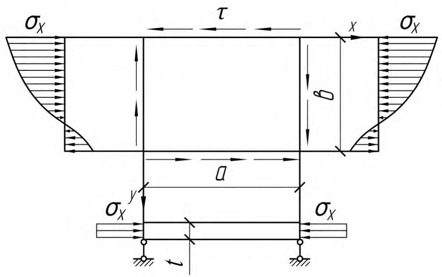
Рисунок 12 - К расчету на устойчивость стенки сжатого стержня
При вычислении критической гибкости стенки в расчетные формулы необходимо подставлять значение гибкости стержня λ, которое использовалось при проверке общей устойчивости стержня. В сквозных стержнях стенки каждой ветви проверяются на устойчивость в пределах участка между узлами решетки с учетом расчетного значения гибкости ветви на этом участке.
7.5.2.7 Формулы в СП 16.13330 получены из расчета устойчивости пластинки, которая является стенкой центрально сжатого стержня и работает по схеме (см. рисунок 12). При этом учитывается частичное защемление стенки в поясах, которое зависит от уровня сжимающих деформаций и от соотношения жесткостей стенки и поясов в упругой области. Увеличение площади поясов несколько улучшает условия работы стенки, однако это влияние незначительно и в СП 16.13330 не учитывается.
Для стержней швеллерного и коробчатого сечений при одинаковой гибкости стержня необходимы более толстые стенки, чем для двутавра. Это объясняется тем, что в стенках таких стержней возникают значительно большие деформации сжатия, чем в стенке двутавра (рисунок 13), а эффект защемления стенки в полках таких сечений практически отсутствует.
Условия работы стенки двутавра благоприятнее, чем пластинки, шарнирно опертой по контуру, которая принята в качестве расчетной в СП 16.13330, поэтому нижний предел критической гибкости стенки повышается до 1,3 y R Е / . При этом верхнюю границу критической гибкости стенки, принятую в СП 16.13330 равной 2,9 y R Е / , необходимо снизить, так как в таких пластинках имеют место значительные несовершенства, а также на устойчивость усиливается отрицательное влияние остаточных напряжений.
Рисунок 13 - Эпюры деформаций сжатых стержней
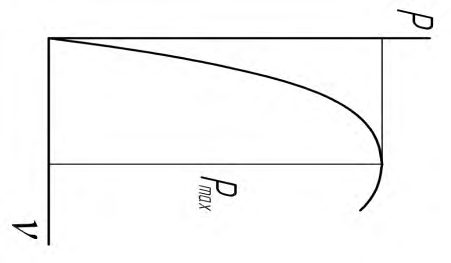
Условие устойчивости стенок центрально и внецентренно сжатых стержней представлено неравенством
λ ̅ uw - предельные (наибольшие) значения гибкости устойчивой стенки приведены в таблице 9 СП 16.13330.2017.
Значения λ ̅ uw являются функцией расчетной гибкости стержня и зависят от уровня напряжений в сечении стержня. При их возрастании уровень напряжений в стержне снижается, что позволяет принимать большие значения λ ̅ uw . Если условие (54) не выполняется, то стенка неустойчива и в расчет вводится часть ее высоты hred , которая вычисляется в соответствии с требованиями СП 16.13330.
7.5.2.8 Стенки внецентренно сжатых стержней работают в условиях сжатия с изгибом и их гибкость определяется видом напряженно-деформированного состояния в зависимости от значений изгибающего момента и продольной силы в предельном состоянии стержня (см. рисунок 11). Независимость гибкости стенки λ ̅ w таких стержней от значения относительного эксцентриситета m объясняется тем, что возрастание m приводит к увеличению максимальных деформаций на кромке стенки, при этом возрастает неравномерность их распределения по высоте (рисунок 14). Увеличение ∈ ̅ 1 приводит к уменьшению λ ̅ w , а возрастание градиента деформаций - к ее увеличению. Взаимное влияние этих факторов, зависящих от значений m , λ ̅ и Af / Aw , приводит к тому, что гибкость стенки λ ̅ w практически не изменяется с возрастанием m . На рисунке 14 показано изменение деформаций для двутаврового сечения при Af /Aw =0,5; λ ̅ 1=1,5 в зависимости от возрастания m от 0,1 до 10, при этом значение λ ̅ w изменяется в незначительных пределах от 1,77 до 1,86.
При m < 1,0 значение λ ̅ uw следует определять линейной интерполяцией между значениями, вычисленными по формулам таблицы 9 СП 16.13330.2017 для центрально сжатого и внецентренно сжатого стержня при m =1 и λ ̅ = λ ̅ x .
Рисунок 14 - Эпюры деформаций в стенке двутаврового сечения при возрастании эксцентриситета
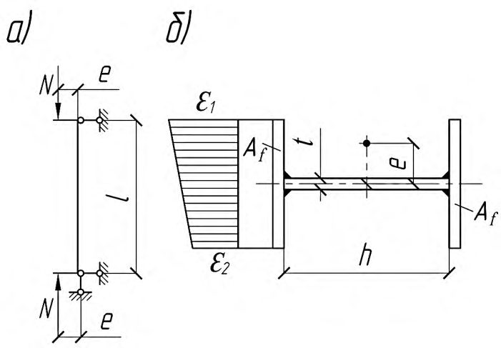
7.5.2.9 Расчет устойчивости стенки при сжатии с изгибом выполняется в том случае, если стержень теряет общую устойчивость по изгибно-крутильной форме в пределах упругих деформаций. Эта формула получена для устойчивости изолированной упругой пластинки при совместном действии изгиба, сжатия и сдвига. При этом не учитывались дополнительные нормальные напряжения, возникающие при деформировании элемента.
Расчет устойчивости стенки при 0,5 < α < 1 является приближенным, позволяющим определять hef /t с некоторым запасом, так как формулы 7.5.2.7 предполагают наличие пластических деформаций в сечении.
7.5.2.10 Снижение гибкости стенки для других форм поперечного сечения учитывает уменьшение упругого защемления стенки поясами в этих сечениях.
Определение размеров элементов таврового сечения выполнено на основании результатов решения задачи, учитывающей совместную работу стержня и пластинок, образующих сечение. При вычислении критической гибкости стенки тавра h ef /t принято предположение, что эксцентриситет e направлен в сторону свободной кромки (см. рисунок 13). Стенка тавра рассматривалась как пластинка, со свободным краем и частичным защемление другой продольной стороны. Принятая схема загружения является наиболее невыгодной для устойчивости стенки тавра. Полученные результаты без учета защемления кромки применимы для определения размеров свесов равнобоких уголков, которые теряют устойчивость по изгибно-крутильной форме, что приводит к некоторому запасу устойчивости, так как деформации в наиболее напряженной полке уголка меньше, чем в стенке тавра.
7.5.2.11 При проектировании центрально и внецентренно сжатых стержней расчет стенок выполняется таким образом, что при действии расчетной нагрузки они сохраняют устойчивое состояние или частично выпучиваются.
Частичное выпучивание стенки не означает полное исчерпание несущей способности стержня. В этом случае при определении несущей способности стержня в поперечное сечение (рисунок 15) включается так называемая редуцированная высота стенки hred .
В зависимости от состояния стенки (устойчивое или неустойчивое) проверка выполняется в два этапа. На первом этапе, который необходимо выполнять во всех случаях, действительная гибкость стенки λ ̅ w = ( hef / t ) Ry E / сравнивается с наибольшим допустимым значением λ ̅ uw , которое соответствует предельному состоянию по таблице 9 СП 16.13330.2017.
Рисунок 15 - Расчетные сечения стержней с гибкими стенками
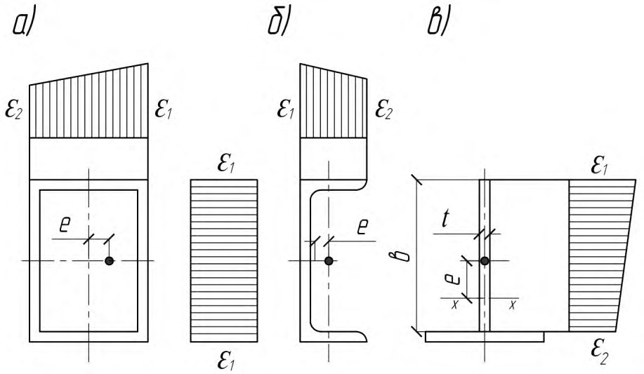
Если λ ̅ w < λ ̅ uw , стенка устойчива и проверка на этом заканчивается. Если λ ̅ w > λ ̅ uw , необходимо определить несущую способность стержня с учетом редуцированной высоты стенки, когда расчетная площадь сечения меньше геометрической.
При проектировании сжатых стержней с гибкими стенками необходимо, чтобы редуцированная высота h red составляла не менее половины полной высоты ( hred ≥ hef ). В противном случае, в связи с уменьшением расчетной площади сечения, несущая способность стержней может снижаться на 25 % и более, что экономически нецелесообразно.
8Расчетные длины и предельные гибкости
8.1Общие положения
Использование понятия расчетной длины предполагает разделение стержневых систем на отдельные элементы, при этом необходимо учитывать взаимодействие рассматриваемого элемента с основанием и другими элементами, примыкающими к нему в узлах.
Расчетные длины сжатых, внецентренно сжатых и сжато-изгибаемых элементов стержневых и рамных систем необходимо устанавливать в случаях, когда выполнять расчет конструкций как единых систем по деформированной схеме с учетом пластических деформаций не представляется возможным.
По физическому смыслу расчетная длина стержня с произвольными закреплениями концов является наибольшим расстоянием между двумя точками перегиба изогнутой оси, определяемым из расчета этого стержня на устойчивость по методу Эйлера. Согласно этому определению для установления расчетной длины необходимо применять метод расчета на устойчивость систем с прямыми стержнями при приложении нагрузок в узлах в предположении упругих деформаций. При этом следует учитывать продольные усилия в стержнях и исключать из рассмотрения поперечные нагрузки и эксцентриситеты, вызывающие изгиб стержней.
Для плоских стержневых систем расчетную длину сжатых стержней следует определять как в плоскости, так и из плоскости системы (перпендикулярной к ней).
При практическом определении расчетной длины стоек многоэтажных рам в нормативных документах используется приближенная расчетная схема в виде простейшей ячейки независимо от числа этажей и соотношения продольных сил в стойках. Применение такой расчетной схемы не предполагает пропорционального возрастания нагрузок на систему в целом.
Расчетная длина стержней одной и той же системы различна при разных сочетаниях нагрузок. При проектировании значение расчетной длины следует уточнять в соответствии с тем сочетанием нагрузок, при котором выполняется подбор сечений стержней.
8.2Определение расчетных длин элементов
В таблице 23 приведены значения коэффициентов расчетной длины стержня при неравномерном нагружении.
Таблица 23
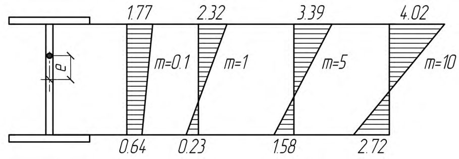
В таблице 25 приведены формулы для определения коэффициентов жесткости Cm и Cn колонн (стоек) при различных закреплениях в рамных системах.
Таблица 24
| Обобщенная расчетная схема | Формулы для определения коэффициента μ | Частные случаи | Частные случаи | Расчетные схемы | Формулы для определения коэффициента μ | Формулы для определения коэффициента μ |
|---|---|---|---|---|---|---|
| √ 𝑛 1 (0,25𝑛+1,2)+5,4(𝑛 +4) 𝑛 1 (𝑛+2,4)+5,4(𝑛+1) ; | 0 ≤ n 1 ≤ ∞ | n = 0 | √ 𝑛 1 +18 2𝑛 1 +4,5 ; (I) 2,0 ≥ μ ≥ 0,7 | √ 𝑛 1 +18 2𝑛 1 +4,5 ; (I) 2,0 ≥ μ ≥ 0,7 | ||
| 0,5 ≤ μ ≤ 2,0 | 0 ≤ n 1 ≤ ∞ | n = ∞ | √ 0,25𝑛 1 +5,4 𝑛 1 +5,4 ; (II) 1,0 ≥ μ ≥ 0,5 | √ 0,25𝑛 1 +5,4 𝑛 1 +5,4 ; (II) 1,0 ≥ μ ≥ 0,5 | ||
| √ 𝑛 1 (0,25𝑛+1,2)+5,4(𝑛 +4) 𝑛 1 (𝑛+2,4)+5,4(𝑛+1) ; | 0 ≤ n ≤ ∞ | n 1 = 0 | √ 𝑛+4 𝑛+1 ; (III) 2,0 ≥ μ ≥ 1,0 | √ 𝑛+4 𝑛+1 ; (III) 2,0 ≥ μ ≥ 1,0 | ||
| 0,5 √ (𝑛+4,8)(𝜓𝑛+4,8) (𝑛+2,4)(𝜓𝑛+2,4) ; 0,5 ≤ μ ≤ 1,0 | n 1 = ∞; 0 ≤ n ≤ ∞ | Ψ = ∞ | 0,5 √ 𝑛+4,8 𝑛+2,4 ; (IV) 0,5 ≤ μ ≤ 0,7 | 0,5 √ 𝑛+4,8 𝑛+2,4 ; (IV) 0,5 ≤ μ ≤ 0,7 | ||
| 0,5 √ (𝑛+4,8)(𝜓𝑛+4,8) (𝑛+2,4)(𝜓𝑛+2,4) ; 0,5 ≤ μ ≤ 1,0 | n 1 = ∞; 0 ≤ n ≤ ∞ | Ψ = 1 | 𝑛+4,8 2𝑛+4,8 ; (V) 1,0 ≥ μ ≥ 0,5 | 𝑛+4,8 2𝑛+4,8 ; (V) 1,0 ≥ μ ≥ 0,5 | ||
| 0,5 √ (𝑛+4,8)(𝜓𝑛+4,8) (𝑛+2,4)(𝜓𝑛+2,4) ; 0,5 ≤ μ ≤ 1,0 | Ψ = 0 | √ 𝑛+4,8 2𝑛+4,8) ; (VI) | √ 𝑛+4,8 2𝑛+4,8) ; (VI) | |||
| П р и м е ч а 𝐶 𝑚 𝐿 ; | 𝜋√ 3+1,3𝑛 𝑛𝑛 1 +3(𝑛+𝑛 1 ) ; μ ≥ 1,0 | 0 ≤ n ≤ ∞ | n 1 = ∞ | 1,0 ≥ μ ≥ 0,7 | 1,0 ≥ μ ≥ 0,7 | |
| П р и м е ч а 𝐶 𝑚 𝐿 ; | 𝜋√ 3+1,3𝑛 𝑛𝑛 1 +3(𝑛+𝑛 1 ) ; μ ≥ 1,0 | 0 < n 1 ≤ π 2 | n = ∞ | 𝜋√ 1,3 𝑛 1 +3 ; (VII) 2,0 > μ ≥ 1,0 | 𝜋√ 1,3 𝑛 1 +3 ; (VII) 2,0 > μ ≥ 1,0 | |
| П р и м е ч а 𝐶 𝑚 𝐿 ; | 𝜋√ 3+1,3𝑛 𝑛𝑛 1 +3(𝑛+𝑛 1 ) ; μ ≥ 1,0 | 0 < n 1 ≤ π 2 | n = 0 | 𝜋 √𝑛 1 | (VIII) | |
| П р и м е ч а 𝐶 𝑚 𝐿 ; | 𝜋√ 3+1,3𝑛 𝑛𝑛 1 +3(𝑛+𝑛 1 ) ; μ ≥ 1,0 | n 1 > π 2 | n = 0 | 1,0 | (VIII) | |
| н и е - В настоящей таблице приняты следующие обозначения: 𝑛 = 𝐸𝐼 𝑛 1 = 𝐶 𝑛 𝐿 3 𝐸𝐼 ; C m - коэффициент жесткости упругого защемления, равный значению реактивного момента, возникающего в опорном сечении при повороте его на угол, равный 1,0; C n - коэффициент жесткости упругой опоры, равный значению реактивной силы, возникающей в опорном сечении при смещении его на 1,0. | н и е - В настоящей таблице приняты следующие обозначения: 𝑛 = 𝐸𝐼 𝑛 1 = 𝐶 𝑛 𝐿 3 𝐸𝐼 ; C m - коэффициент жесткости упругого защемления, равный значению реактивного момента, возникающего в опорном сечении при повороте его на угол, равный 1,0; C n - коэффициент жесткости упругой опоры, равный значению реактивной силы, возникающей в опорном сечении при смещении его на 1,0. | н и е - В настоящей таблице приняты следующие обозначения: 𝑛 = 𝐸𝐼 𝑛 1 = 𝐶 𝑛 𝐿 3 𝐸𝐼 ; C m - коэффициент жесткости упругого защемления, равный значению реактивного момента, возникающего в опорном сечении при повороте его на угол, равный 1,0; C n - коэффициент жесткости упругой опоры, равный значению реактивной силы, возникающей в опорном сечении при смещении его на 1,0. | н и е - В настоящей таблице приняты следующие обозначения: 𝑛 = 𝐸𝐼 𝑛 1 = 𝐶 𝑛 𝐿 3 𝐸𝐼 ; C m - коэффициент жесткости упругого защемления, равный значению реактивного момента, возникающего в опорном сечении при повороте его на угол, равный 1,0; C n - коэффициент жесткости упругой опоры, равный значению реактивной силы, возникающей в опорном сечении при смещении его на 1,0. | н и е - В настоящей таблице приняты следующие обозначения: 𝑛 = 𝐸𝐼 𝑛 1 = 𝐶 𝑛 𝐿 3 𝐸𝐼 ; C m - коэффициент жесткости упругого защемления, равный значению реактивного момента, возникающего в опорном сечении при повороте его на угол, равный 1,0; C n - коэффициент жесткости упругой опоры, равный значению реактивной силы, возникающей в опорном сечении при смещении его на 1,0. | н и е - В настоящей таблице приняты следующие обозначения: 𝑛 = 𝐸𝐼 𝑛 1 = 𝐶 𝑛 𝐿 3 𝐸𝐼 ; C m - коэффициент жесткости упругого защемления, равный значению реактивного момента, возникающего в опорном сечении при повороте его на угол, равный 1,0; C n - коэффициент жесткости упругой опоры, равный значению реактивной силы, возникающей в опорном сечении при смещении его на 1,0. | н и е - В настоящей таблице приняты следующие обозначения: 𝑛 = 𝐸𝐼 𝑛 1 = 𝐶 𝑛 𝐿 3 𝐸𝐼 ; C m - коэффициент жесткости упругого защемления, равный значению реактивного момента, возникающего в опорном сечении при повороте его на угол, равный 1,0; C n - коэффициент жесткости упругой опоры, равный значению реактивной силы, возникающей в опорном сечении при смещении его на 1,0. |
Таблица 25
| Расчетная схема рамы | Номер формулы для определения μ по таблице 24 | Значения C m и C n |
|---|---|---|
| l N EI 1 EI | (VI) | 𝐶 𝑚 = 3𝐸𝐼 1 𝑙 1 |
| (VI) | 𝐶 𝑚 = 4𝐸𝐼 1 𝑙 1 | |
| (V) | 𝐶 𝑚 = 3𝐸𝐼 1 𝑙 1 | |
| l l N EI 1 EI | (I) | C m = 0 𝐶 𝑛 = 3𝐸𝐼 1 𝑙 1 3 |
| (IV) | 𝐶 𝑚 = 3𝐸𝐼 1 𝑙 1 | |
| l N EI 1 1 l EI | (IV) | 𝐶 𝑚 = 4𝐸𝐼 1 𝑙 1 |
| N EI 1 EI EI 1 l l l 2 1 | (IV) | 𝐶 𝑚 = 3𝐸𝐼 1 𝑙 1 𝑙 2 (𝑙 1 +𝑙 2 ) |
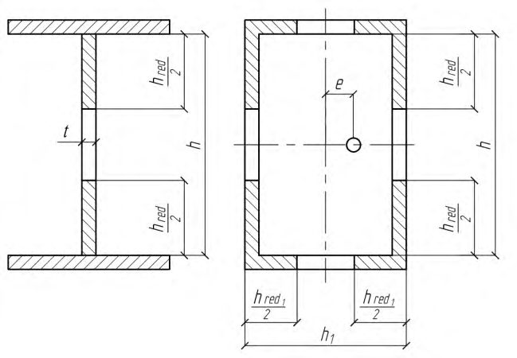
Таблица 26
| Конструкция узла пересечения и загружение | Расчетная схема конструкции узла | Коэффициенты μ и μ 2 |
|---|---|---|
| 1 Оба элемента не прерываются, поддерживающий элемент сжат | 𝜇 = √ 𝑚+𝛼 2 𝑚+𝑛 2 ≥ 0,5 𝜇 2 = √ 𝑛 2 (𝑚+𝛼 2 ) 𝛼 2 (𝑚+𝑛 2 ) ≥ 0,5 | |
| 2 Оба элемента не прерываются, поддерживающий элемент растянут | 𝜇 = √ 𝑚-0,75𝛼 2 𝑚+𝑛 2 ≥ 0,5; 𝛼 2 > 0 | |
| 3 Рассматриваемый элемент не прерывается, поддерживающий элемент сжат, прерывается и перекрывается фасонкой | 𝜇 = √1 +0,82 𝛼 2 𝑚 ≥ 0,5 𝜇 2 = √ 𝑛 2 𝛼 2 (1 +0,82 𝛼 2 𝑚 ) > 0,5; 𝜇 2 = 0,5 при 𝐸𝐼 ≥ 𝑁 2 𝐿 3 12𝐿 2 (1 +1,21 𝑚 𝛼 2 ) |
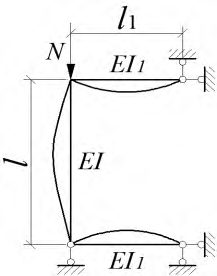
На рисунке 16 приведено сопоставление значений коэффициентов μ и μ 2 пересекающихся стержней, определенных по формулам таблицы 26 и по таблице 25 СП 16.13330.2017. Как следует из рисунка 16, коэффициенты, согласно СП 16.13330, не зависят от соотношения усилий в стержнях и совпадают с точными значениями только при неработающем поддерживающем стержне.
Рисунок 16 - График для определения значений коэффициентов расчетных длин пересекающихся стержней (при равных длинах и жесткостях) при различных усилиях в них
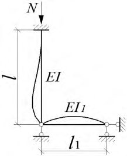
где μ - коэффициент расчетной длины рассматриваемой колонны одно- и многопролетного здания при равномерном нагружении узлов, определенный согласно 8.2.4;
- α ij = Nij / Nmax ; здесь Nmax - усилие в наиболее нагруженной колонне рассматриваемой плоской рамы; Nij - усилия во всех колоннах (в том числе в рассматриваемой) расчетного блока;
- æ ij = Icij / Ic,max ; здесь Ic,max - момент инерции наиболее нагруженной колонны рассматриваемой плоской рамы; Icij - моменты инерции всех колонн расчетного блока;
- i = 1, 2, ..., ki +1 - номер колонны в плоскости рамы ( ki - число пролетов);
- j = 1, 2, 3, 4, 5 - номер рамы.
Таблица 27
| Расчетная схема колонны | Условие нагружения колонны | Формулы для определения коэффициента μ 1 i нижнего участка колонны |
|---|---|---|
| F 2 = 0 | μ 11 =2,0 | |
| F 1 = 0 | 𝜇 12 = √ 𝑚(66𝑛 -𝑚)[𝑚(2,2𝑛 +1) +2𝑛] +(16,6 -0,5√ 𝑚 𝑛 )(1,3𝑚 2 +2𝑛 2 𝑛[0,18𝑚(66𝑛 -𝑚)+3,6(2,3𝑛 +3,6𝑚)] | |
| F 2 = 0 | 𝜇 11 = √ 0,76(5,3 +𝑛) 𝑛+1 | |
| F 1 = 0 | 𝜇 12 = √ (0,76 -0,13√ 𝑚 𝑛 )[𝑚(5,3𝑛 +1) +(5,3+𝑛) 𝑛(𝑛 +1) ; при √𝑚/𝑛 > 1,2 𝜇 12 = √ (0,56 +0,039√ 𝑚 𝑛 )[𝑚(5,3𝑛 +1) +𝑛(5,3 +𝑛) 𝑛(𝑛 +1) |
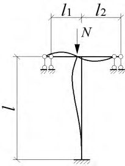
Таблица 28
| Конструктивная схема производственного здания | Расчетная схема колонны | Формулы для определения коэффициента μ 1 нижнего участка колонны | Границы изменения параметров |
|---|---|---|---|
| √ 𝑛 ∝ 1 2 (66-∝ 1 2 )[∝ 1 2 (2,2𝑛 +1) +2] +(16,6 -0,5 ∝ 1 )(1,3 ∝ 1 4 +2) 0,18𝑛 ∝ 1 2 (66-∝ 1 2 ) +3,6(2,3+∝ 1 2 ) | При ∝ 1 ≤ 1,0 𝑛 ≤ 2,5 ∝ 1 √∝ 1 -1,5; при ∝ 1 > 1,0 𝑛 ≤ 1,35 -0,35 ∝ 1 ; 0 ≤ 1 𝛽 ≤ 1,0; 0,04 ≤ 𝐼 2 𝐼 1 ≤1,0; 0,1≤ m ≤2,0 | ||
| При ∝ 1 ≤ 1,2 √ (0,76 -0,13 ∝ 1 )[∝ 1 2 (5,3𝑛 +1) +(5,3 +𝑛)] 𝑛+1 ; при ∝ 1 > 1,2 √ (0,56 -0,039 ∝ 1 )[∝ 1 2 (5,3𝑛 +1) +(5,3 +𝑛)] 𝑛+1 | При ∝ 1 ≤ 1,0 𝑛 ≤ 2,5 ∝ 1 √∝ 1 -1,5; при ∝ 1 > 1,0 𝑛 ≤ 1,35 -0,35 ∝ 1 ; 0 ≤ 1 𝛽 ≤ 1,0; 0,04 ≤ 𝐼 2 𝐼 1 ≤1,0; 0,1≤ m ≤2,0 | ||
| √ 𝑚(𝑛 +1,5)(𝜌 +𝑚)+0,22𝑛 +[𝑚 2 +1,1𝑛(𝑚 -𝜌)]𝑚𝜌/√𝑛 0,4[(𝑛+𝑚 2 )+3𝑚𝑛(𝑚 +1)] | 0 ≤ 1 𝛽 ≤ 1,0; 0,04 ≤ 𝐼 2 𝐼 1 ≤1,0; 0,1≤ m ≤2,0 | ||
| √ 𝑚 2 (3,5-𝜌 2 )+(𝑚 2 +0,4𝑚+1)[0,26(𝑛+6)(𝑛+0,15)+𝑚𝜌( 1 √𝑛 +)] 𝑚 2 +𝑛 2 +4𝑛(𝑚 2 +1,5𝑚+1) | 0 ≤ 1 𝛽 ≤ 1,0; 0,04 ≤ 𝐼 2 𝐼 1 ≤1,0; 0,1≤ m ≤2,0 | ||
| Примечание - В настоящей таблице приняты следующие обозначения: 1 F F + m | Примечание - В настоящей таблице приняты следующие обозначения: 1 F F + m | Примечание - В настоящей таблице приняты следующие обозначения: 1 F F + m | Примечание - В настоящей таблице приняты следующие обозначения: 1 F F + m |
9Расчет листовых конструкций. Расчет на устойчивость
полученная на основе линейной теории, дает завышенные значения σ cr по сравнению с экспериментальными данными. Это объясняется большой чувствительностью таких оболочек к начальным несовершенствам и остаточным (сварочным) напряжениям.
Поскольку амплитуда и форма начальных искривлений - случайные величины (функции), критическое напряжение упругой круговой цилиндрической оболочки при осевом сжатии в СП 16.13330 определяется по формуле (56), в которую вместо 0,605 вводится коэффициент с , являющийся убывающей функцией параметра r /t (таблица 34 СП 16.13330.2017).
Учет осесимметричного начального искривления и развития пластических деформаций сводится к расчету за пределом упругости внецентренно сжатого стержня, лежащего на упругом основании. Для оболочек малой и средней гибкости учет неупругой работы материала оказывает существенное влияние на предельную нагрузку при потере устойчивости. Для практических расчетов оболочек при достаточно малых r / t значениях получена расчетная формула (155) в СП 16.13330.2017.
где σ =N /A - расчетное осевое напряжение; m = 2e /r - относительный эксцентриситет [ e=M /N; M - расчетный момент; в случае осевого сжатия значение e следует принимать по формуле (16)]; λ ̅ = λ √𝑅/𝐸 - условная гибкость трубчатого сечения (λ =l /i ).
10Расчет элементов стальных конструкций на усталость
Существует и другой подход, согласно которому основное влияние на усталостное разрушение оказывает амплитуда напряжений цикла σ a = (σ max σ min ) /2. Поскольку обе методики опираются на одни и те же экспериментальные данные и являются их аппроксимацией, конечные результаты, получаемые при их использовании, мало отличаются друг от друга.
Для всех групп элементов влияние нестационарности приближенно учтено при назначении числовых коэффициентов в формулах (171) и (172) СП 16.13330.2017.
- 10.4. Эксплуатация конструкций при температуре до минус 40 °С не снижает выносливости стальных конструкций.
При более низких температурах эксплуатации требуются специальные мероприятия по повышению выносливости конструкций: применение сталей, удовлетворяющих требованиям по ударной вязкости; исключение соединений с наиболее острыми концентраторами напряжений (7-й и 8-й групп элементов); применение технологических мероприятий по повышению выносливости сварных соединений (механическая обработка швов, оплавление их в струе аргона и т. п.).
11Расчет на малоцикловую прочность
Таблица 29
| Давление, %от ρ | Число нагружений | Частота нагружений,% |
|---|---|---|
| 100 | 2 | 0,01 |
| 85 | 21 | 0,1 |
| 70 | 299 | 1,5 |
| 54 | 881 | 4,4 |
| 37 | 897 | 4,5 |
| 28 | 17930 | 89,5 |
| Итого: | N = 2·10 4 | 100,0 |
Для воздухонагревателей доменных печей цикл изменения внутреннего давления от 0 до ρ остается постоянным и за 20 лет эксплуатации составляет 5·10 4 .
Магистральные газо- и нефтепроводы за 20 лет эксплуатации испытывают 7·10 3 циклов с изменением давления от 0 до ρ.
(58)
Nb = 5·10 5 - базовое число циклов нагружения при расчете на малоцикловую прочность; N - малоцикловая долговечность элемента металлической конструкции (при N = Nb данный расчет и расчет на усталость по разделу 12 СП 16.13330.2017 совпадают); m, m 0 - параметры, характеризующие угол наклона кривой малоцикловой усталости; m = m 0 c ; m 0 - принимается по таблице 30;
- с - коэффициент, принимаемый по таблице 31.
Таблица 30
| Нормативное временное сопротивление стали R un , МПа (кгс/см² ) | До 390 (4000) | Св. 390 (4000) до 450 (4600) | Св. 450 (4600) до 490 (5000) | Св. 490 (5000) до 540 (5500) | Св. 540 (5500) до 590 (6000) | Св. 590 (6000) |
|---|---|---|---|---|---|---|
| Параметр m 0 | 0,16 | 0,18 | 0,20 | 0,22 | 0,24 | 0,26 |
Таблица 31
| Группа элементов по таблице К.1 СП 16.13330.2017 | 1 | 2 | 3 | 4 | 5 | 6 | 7 | 8 |
|---|---|---|---|---|---|---|---|---|
| Коэффициент с | 1,0 | 0,90 | 0,80 | 0,75 | 0,72 | 0,68 | 0,65 | 0,62 |
Остальные обозначения принимаются по по разделу 12 СП 16.13330.2017.
При N = Nb = 5·10 5 для 1 и 2 групп элементов α = 1,52, для 3 - 8 групп элементов α = 1,85.
При расчетах на малоцикловую прочность по формуле (58) значение произведения α Ru γ u ( Nb /N ) m не должно превышать Ru / γ u .
12Проектирование соединений стальных конструкций
12.1Проектирование сварных соединений
- отказаться от применения одностороннего углового шва и перейти к двустороннему со сведением к минимуму концентрации деформаций в вершине сварного шва (рисунок 17, а );
- применять соединения без разделки кромок с минимально возможным объемом наплавленного металла взамен соединений с полным проплавлением (рисунок 17, б );
- применять при статических нагрузках соединения с разделкой кромок ( h ≤ t / 3) и неполным проплавлением, которые предпочтительнее соединений с полным проплавлением (рисунок,17, в );
- по возможности избегать применения V-образной разделки, применяя К-образную разделку (рисунок 17, г );
- во всех случаях, когда это возможно, применять тавровые соединения вместо угловых (рисунок 17, д );
- для снижения растягивающих напряжений по толщине листа применять нетиповые решения разделки кромок в угловых соединениях (рисунок 17, е );
- в угловом соединении с двумя прикрепляемыми элементами лист-прокладку перекрывать сварным швом до половины толщины прикрепляемых элементов (рисунок 17, ж ).
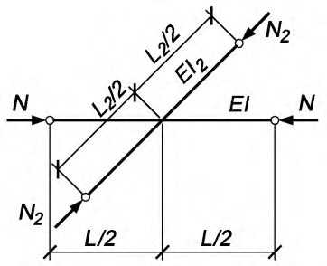
Слева от стрелок: а - с односторонними швами без скоса кромок; б, в - с двусторонними швами с двумя скосами одной кромки; г - е - с односторонними швами со скосом одной кромки; ж - с двумя прикрепляемыми через лист-прокладку элементами
Справа от стрелок показаны предпочтительные типы соединений
Рисунок 17 - Тавровые и угловые соединения, в которых возможно возникновение слоистых трещин в основном металле
12.2Проектирование болтовых соединений
- фрикционно-срезные на высокопрочных болтах, при расчете которых учитывается вся совокупность сопротивлений трению, смятию и срезу;
- фланцевые, при расчете которых учитываются сопротивления растяжению болтов.
Фланцевые соединения на высокопрочных болтах, работающие на растяжение, рассмотрены в 12.3.
В соединениях без контролируемого натяжения используются болты различных классов прочности, в том числе и высокопрочные. В расчетах таких соединений учитываются сопротивления растяжению, смятию и срезу без учета сил трения.
Разность диаметров отверстий и болтов в значительной степени определяет значение смещений в центрах соединений после преодоления сил трения и общих перемещений в конструкции, а также перераспределение усилий в статически неопределимых конструкциях. Небольшие сдвиги могут нарушать геометрию конструкции и строительный подъем, и их следует рассматривать как предельное состояние II группы, характеризуемое затруднениями для нормальной эксплуатации. Значительный сдвиг устанавливает предел эксплуатационной пригодности конструкции и является критерием предельного состояния I группы. Значения предельных смещений при динамической нагрузке меньше, чем при статической.
Повышенная сдвигоустойчивость соединения гарантирует от появления предельного состояния I группы и соответствующий коэффициент γ h создает обеспеченность в три стандарта от наступления предельного состояния. Нормальная сдвигоустойчивость соединения гарантирует от предельного состояния II группы, а коэффициент γ h создает обеспеченность в два стандарта от наступления предельного состояния.
Коэффициенты надежности γ h зависят от способа регулирования усилия натяжения болтов. При регулировании по углу поворота гайки усилие натяжения болта получается в среднем на 20 % больше усилия P , соответствующего расчетному, т. е. примерно на 10 % больше, чем при регулировании по моменту закручивания.
Обрывы болтов при этом исключаются вследствие эффекта саморегулирования. Соответственно при регулировании по углу поворота гайки коэффициент γ h на 10 % меньше, чем при регулировании по моменту закручивания.
В случае невозможности обеспечения натяжения болтов по углу поворота регулирование усилий следует производить по моменту закручивания. При этом расчетный момент закручивания должен быть увеличен на 10 %.
Расчет основан на использовании деформационных критериев предельного состояния. Способ обработки (очистки) контактных поверхностей принимается стальными щетками без консервации, когда коэффициент трения μ = 0,35.
Проверку прочности по условию предупреждения чрезмерных перемещении сдвига и деформаций смятия в соединении выполняют исходя из условия формулы (59), в котором первый член отвечает трению, второй - смятию:
где T - сдвигающее усилие от учитываемых расчетных нагрузок, приходящееся на один болт, воспринимаемое трением и одновременно смятием соединяемых элементов; между элементами стыка или узла усилия распределяют в предположении упругой работы стали, но с учетом податливости соединений в предельном состоянии;
Qbn - расчетное сдвигающее усилие, которое может быть воспринято каждой контактной поверхностью соединяемых элементов, стянутых одним болтом; mp - коэффициент, учитывающий уменьшение начального натяжения болтов после общего сдвига в соединении и принимаемый по таблице 32;
- α - коэффициент использования нормативного усилия смятия при условии ограничения деформации смятия. Для соединений с предварительной выборкой зазоров α = 1; без предварительной выборки - α принимается по таблице 33;
- γ p - коэффициент условий работы, учитывающий изменение разности номинальных диаметров отверстий и болтов, неравномерность распределения усилий между болтами и принимаемый по таблице 33;
- Nbn - нормативное усилие смятия для рассматриваемого среза болта (болтоконтакта), вызывающее деформацию смятия сдвигаемых элементов, равную нормативной деформации смятия Δ p , принимаемой равной 1 мм при динамических и 1,5 мм - при статических нагрузках. Nbn определяется по таблице 34 в зависимости от толщин t1 и t2 соединяемых элементов.
Таблица 32
| Расчетное сопротивление стали соединяемых 2 | Значения m p при нагрузке | Значения m p при нагрузке |
|---|---|---|
| элементов R у , МПа (кгс/мм ) | динамической | статической |
| До 260 (27) | 0,90 | 0,90 |
| Св. 260 (27) | 0,85 | 0,80 |
Таблица 33
| Коэффициент | Разность номинальных диаметров δ, мм | Число болтов в соединении | Число болтов в соединении | Число болтов в соединении | |
|---|---|---|---|---|---|
| Коэффициент | Разность номинальных диаметров δ, мм | 1-4 | 5-9 | 10 и более | |
| α | Динамическая | 1 | 1,00 | 1,00 | 1,00 |
| α | Динамическая | 3 | 0,45 | 0,55 | 0,60 |
| α | Статическая | 1 | 1,00 | 1,00 | 1,00 |
| α | Статическая | 3 | 0,60 | 0,65 | 0,70 |
| γ p | Любая | 1 | 0,85 | 0,95 | 1,00 |
| γ p | Любая | 3 | 0,75 | 0,90 | 1,00 |
Таблица 34
| t 2, мм | Значения N bn , кН, для элементов из стали | Значения N bn , кН, для элементов из стали | Значения N bn , кН, для элементов из стали | Значения N bn , кН, для элементов из стали | Значения N bn , кН, для элементов из стали | Значения N bn , кН, для элементов из стали | Значения N bn , кН, для элементов из стали | Значения N bn , кН, для элементов из стали | Значения N bn , кН, для элементов из стали | Значения N bn , кН, для элементов из стали |
|---|---|---|---|---|---|---|---|---|---|---|
| углеродистой | углеродистой | углеродистой | углеродистой | углеродистой | низколегированной | низколегированной | низколегированной | низколегированной | низколегированной | |
| при t 1 , равной, мм | при t 1 , равной, мм | при t 1 , равной, мм | при t 1 , равной, мм | при t 1 , равной, мм | при t 1 , равной, мм | при t 1 , равной, мм | при t 1 , равной, мм | при t 1 , равной, мм | при t 1 , равной, мм | |
| 5 | 10 | 15 | 20 | 25 | 5 | 10 | 15 | 20 | 25 | |
| 5 | 40 57 | 50 61 | 54 62 | 55 63 | 55 63 | 48 65 | 60 80 | 64 86 | 65 89 | 66 90 |
| 10 | 50 61 | 75 98 | 85 110 | 89 114 | 90 118 | 60 80 | 86 115 | 103 125 | 110 133 | 112 137 |
| 15 | 54 63 | 85 110 | 95 126 | 98 133 | 100 140 | 64 86 | 103 125 | 115 145 | 120 158 | 125 168 |
| 20 | 55 63 | 89 114 | 98 133 | 107 145 | 110 152 | 65 89 | 110 133 | 120 158 | 135 175 | 138 180 |
| 25 и более | 55 63 | 90 118 | 100 140 | 110 152 | 115 153 | 66 90 | 112 137 | 125 168 | 138 180 | 140 182 |
Примечание - Значения над чертой - при динамической (Δ p = 1 мм), под чертой - при статической (Δ p = 1,5 мм) нагрузках. При промежуточных значениях t 1 и t 2 значения Nbn определяют линейной интерполяцией.
В односрезном соединении t 1 и t 2 равны действительной толщине соединяемых элементов; в двухсрезном соединении t 1 - толщина накладки, t 2 - половина толщины стыкуемого листа.
При расчетной оценке влияния перемещений сдвига в соединениях на распределение усилий в статически неопределимых системах расчетное значение перемещения (сдвига) Δ s в каждом соединении принимается для одноболтового соединения
для соединения с числом болтов 10 и более
при числе болтов свыше 1 до 10 - по линейной интерполяции между формулами (60) и (61).
Для соединений на высокопрочных болтах (класса прочности не ниже 10.9) без контролируемого натяжения необходима проверка крайней зоны на вырыв материала по формуле
где а - расстояние вдоль усилия от края элемента до центра ближайшего отверстия.
12.3Фланцевые соединения на высокопрочных болтах, работающие на растяжение
- воспринимающих знакопеременные нагрузки; многократно действующие подвижные, вибрационные или другого вида нагрузки с числом циклов свыше 10 5 при коэффициенте асимметрии напряжений в соединяемых элементах ρ = σ min / σ max 0,8;
- эксплуатируемых в сильноагрессивной среде.
где Вр - расчетное усилие растяжения болта.
Временное сопротивление в направлении толщины проката у фланцев должно быть Rbz 0,8 Rbun , (где Rbun - нормативное значение временного сопротивления для основного металла, принимаемое по национальным стандартам).
Проверку механических свойств стали в направлении толщины проката осуществляет завод-изготовитель металлоконструкций.
12.3.5. Дефекты стали для фланцев (внутренние расслои, грубые шлаковые включения и т. п.) должны удовлетворять требованиям, указанным в таблице 35. Контроль качества стали методами ультразвуковой дефектоскопии осуществляет завод-изготовитель металлоконструкций.
Таблица 35
| Характеристика дефекта | Характеристика дефекта | Характеристика дефекта | Характеристика дефекта | Характеристика дефекта | |
|---|---|---|---|---|---|
| Площадь, см² | Площадь, см² | Частота допустимая | Длина допустимая, см | Расстояние между дефектами минимально допустимое, см | |
| Зона дефектоскопии | минимально учитываемая | максимально допустимая | максимально | ||
| Листы фланцев | 0,5 | 1,0 | 10 м -2 | 4 | 10 |
| Прикромочная | 0,5 | 1,0 | 3 м -1 | 4 | 10 |
- 12.3.8. При конструировании фланцевых соединений болты следует располагать безмоментно относительно центра тяжести сечения соединяемого элемента с учетом неравномерности распределения внешних усилий между болтами наружной и внутренней зон (рисунок 18) в соответствии с таблицей 36. Предельное усилие на один болт внутренней зоны Ni = 0,9 Bp . а - из широкополочных тавров; б - из парных равнополочных уголков Рисунок 18 - Схема фланцевых соединений стропильных ферм с поясами
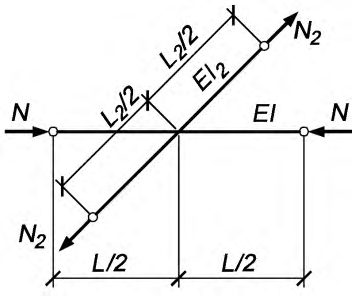
Таблица 36
| Диаметр болта, мм | Толщина фланца, мм | Отношение внешнего усилия на один болт внутренней зоны к внешнему усилию на один болт наружной зоны k = N i / N e |
|---|---|---|
| 24 | 20 | 2,6 |
| 24 | 25 | 1,8 |
| 24 | 30 | 1,5 |
| 24 | 40 | 1,1 |
| 27 | 25 | 2,1 |
| 27 | 30 | 1,7 |
| 27 | 40 | 1,2 |
Болты следует располагать ближе к элементам присоединяемого профиля, при этом (см. рисунок 18)
где ds - наружный диаметр шайбы, мм; d - наружный диаметр стержня болта, мм.
- 12.3.9. Число болтов внутренней зоны определяет конструктивная форма соединения, а наружной зоны - предварительно назначается из условия
где ne , ni - число болтов наружной и внутренней зон соответственно;
N - внешнее усилие на фланцевое соединение.
- болтов;
- фланцев на изгиб;
- соединения при воздействии поперечных усилий;
- сварного соединения фланца с профилем.
Прочность соединения следует считать обеспеченной, если
где Nj - расчетное усилие на j -й болт наружной зоны, равное
здесь Nbj - расчетное усилие на j -й болт, определяемое из условия прочности соединения по болтам
, - коэффициенты, принимаемые по таблице 37;
Xj - параметр жесткости болта, определяемый по формуле
bj - расстояние от оси j -го болта до края сварного шва; wj - ширина j -го участка фланца (см. рисунок 18); t - толщина фланца; p i i fj B N 1/ 1 1,3 + = - расчетное усилие на j -й болт, определяемое из условия прочности фланца на изгиб;
i - параметр, определяемый по формуле 2 5,4 t R w b B j y j p j = ;
j - параметр, определяемый по таблице 38 или из уравнения
Ry - расчетное сопротивление стали фланца.
Таблица 37
| Коэффициенты | Коэффициенты | |
|---|---|---|
| Отношение толщины фланца к диаметру болта t/d | | |
| 0,83 | 0,336 | 0,207 |
| 1,04 | 0,388 | 0,257 |
| 1,25 | 0,425 | 0,278 |
| 1,46 | 0,470 | 0,270 |
| 1,67 | 0,527 | 0,239 |
Таблица 38
| Параметр жесткости болта X | Значения при | Значения при | Значения при | Значения при | Значения при | Значения при | Значения при | Значения при | Значения при | Значения при |
|---|---|---|---|---|---|---|---|---|---|---|
| Параметр жесткости болта X | 1,4 | 1,6 | 1,8 | 2,0 | 2,2 | 2,4 | 2,7 | 3,0 | 4,0 | 5,0 |
| 0,02 | 3,252 | 2,593 | 2,221 | 1,986 | 1,826 | 1,710 | 1,586 | 1,499 | 1,333 | 1,250 |
| 0,06 | 2,960 | 2,481 | 2,171 | 1,962 | 1,812 | 1,702 | 1,582 | 1,497. | 1,333 | 1,250 |
| 0,1 | 2,782 | 2,398 | 2,130 | 1,939 | 1,799 | 1,694 | 1,578 | 1,494 | 1,332 | 1,249 |
| 0,5 | 2,186 | 2,036 | 1,908 | 1,776 | 1,711 | 1,636 | 1,545 | 1,475 | 1,327 | 1,248 |
| 1,0 | 1,949 | 1,860 | 1,780 | 1,707 | 1,643 | 1,586 | 1,514 | 1,454 | 1,321 | 1,246 |
| 2,0 | 1,757 | 1,704 | 1,653 | 1,607 | 1,564 | 1,524 | 1,470 | 1,424 | 1,312 | 1,242 |
| 3,0 | 1,660 | 1,621 | 1,584 | 1,548 | 1,515 | 1,483 | 1,440 | 1,402 | 1,303 | 1,238 |
| 4,0 | 1,599 | 1,568 | 1,537 | 1,508 | 1,480 | 1,454 | 1,417 | 1,384 | 1,296 | 1,235 |
| 5,0 | 1,555 | 1,529 | 1,503 | 1,478 | 1,454 | 1,431 | 1,399 | 1,370 | 1,289 | 1,232 |
| 6,0 | 1,522 | 1,498 | 1,476 | 1,454 | 1,433 | 1,413 | 1,384 | 1,357 | 1,283 | 1,230 |
| 8,0 | 1,473 | 1,454 | 1,436 | 1,418 | 1,401 | 1,384 | 1,360 | 1,337 | 1,273 | 1,224 |
| 10 | 1,438 | 1,422 | 1,406 | 1,391 | 1,377 | 1,362 | 1,341 | 1,322 | 1,264 | 1,219 |
| 15 | 1,381 | 1,369 | 1,358 | 1,346 | 1,335 | 1,324 | 1,308 | 1,293 | 1,247 | 1,210 |
где п - число болтов наружной зоны для фланцевых соединений элементов открытого профиля или общее число болтов для соединений элементов замкнутого профиля;
- Rj - контактные усилия, принимаемые равными 0,1 B 0 для фланцевых соединений элементов замкнутого профиля, а для элементов открытого профиля, определяемые по формуле Rj = Bp -1,2 Nbj ;
- -коэффициент трения соединяемых поверхностей фланцев, принимаемый в соответствии с 14.3.3 СП 16.13330.2017.
При отсутствии местной поперечной силы в расчет вводится условное значение Qloc = 0,1 N.
Сварку фланца и присоединяемого элемента следует выполнять механизированным способом, при этом технология сварки должна обеспечивать минимальные сварочные деформации фланцев. После выполнения сварки внешние поверхности фланцев должны быть отфрезерованы. Толщина фланцев после фрезеровки должна быть не менее указанной в чертежах КМ или КМД.
Точность изготовления отправочных элементов конструкций с фланцевыми соединениями должна соответствовать следующим требованиям:
- тангенс угла отклонения фрезерованной поверхности фланцев не должен превышать - 0,0007;
- предельные отклонения не должны превышать следующих значений, мм:
- 0,3 - зазор между внешней плоскостью фланца и ребром стальной линейки;
- ± 1,5 - смещение фланца от проектного положения относительно осей сечения присоединяемого элемента;
- допускаемое отклонение длины элемента с фланцевым соединением при проектной длине элемента, м:
Калибр диаметром, равным номинальному диаметру болта, должен при контрольной сборке проходить во все отверстия соединения.
где п - коэффициент, принимаемый равным 1,06 - при натяжении высокопрочных болтов;
- 1,0 - при контроле усилия натяжения болтов;
- k - среднее значение коэффициента закручивания для каждой партии болтов по сертификату или принимаемое равным 0,18 при отсутствии таких значений в сертификате;
- В 0 - усилие предварительного натяжения болтов, тс, определяемое в соответствии с 12.3.2;
- d - номинальный диаметр болта, м.
Контроль следует осуществлять по моменту закручивания, определяемому в соответствии с 12.3.15.
Отклонение фактического момента закручивания от расчетного должно быть от 0 % до 10 %. Если при контроле обнаружатся болты, не соответствующие этому условию, то усилие натяжения таких болтов должно быть доведено до требуемого значения с последующим контролем через 6 ч.
- 0,2 -просвет между фланцами или фланцем и полкой колонны после предварительного натяжения высокопрочных болтов по линии стенок и полок профиля;
- 0,6 - то же, по краям фланцев при толщине фланцев до 25 мм;
- 1,0 - то же, по краям фланцев при толщине фланцев св. 25 мм; щуп толщиной 0,1 мм не должен проникать в зону радиусом 40 мм от оси болта.
12.4Дюбельные соединения
Применение конструкций на дюбельных соединениях не допускается:
- при толщине опорных элементов t 0 до 4 и свыше 20 мм;
- в районах с сейсмичностью свыше 6 баллов;
- в сильноагрессивных средах.
Суммарная толщина присоединяемых элементов t в зависимости от толщины опорного элемента t 0 и нормативного временного сопротивления стали R 0 un опорного элемента не должна превышать значений, приведенных в таблице 39. Минимальная толщина отдельного присоединяемого элемента равна 0,5 мм.
Таблица 39
| Толщина опорного элемента | Суммарная толщина присоединяемых элементов t , мм, при R 0 un , МПа (кгс/мм² ) | Суммарная толщина присоединяемых элементов t , мм, при R 0 un , МПа (кгс/мм² ) | Суммарная толщина присоединяемых элементов t , мм, при R 0 un , МПа (кгс/мм² ) | Суммарная толщина присоединяемых элементов t , мм, при R 0 un , МПа (кгс/мм² ) | Суммарная толщина присоединяемых элементов t , мм, при R 0 un , МПа (кгс/мм² ) |
|---|---|---|---|---|---|
| t 0 , мм | до 370 (38) | св. 370 (38) до 430 (44) | св. 430 (44) до 450 (46) | св. 450 (46) до 510 (52) | св.510 (52) до 590 (60) |
| От 4 до 6 | 4 | 4 | 4 | 4 | 4 |
| Св. 6 » 8 | 6 | 6 | 4 | 4 | 4 |
| » 8 » 10 | 6 | 4 | 4 | 4 | 4 |
| » 10 » 12 | 4 | 4 | 4 | 4 | - |
| » 12 » 16 | 4 | 4 | 4 | 4 | - |
| » 16 » 20 | 4 | 4 | 4 | - | - |
Таблица 40
| Напряженное состояние элементов соединения | Напряженное состояние элементов соединения | Ограничение значения толщины присоединяемых элементов, мм | Расчетное сопротивление |
|---|---|---|---|
| Срез стержня дюбеля R ds | Срез стержня дюбеля R ds | t 1,5 | 0,5 R dun |
| Смятие присоединяемых элементов R dp | Смятие присоединяемых элементов R dp | 0,5 t < 1,5 | 2,0 R un |
| Растяжение | Отрыв присоединяемых элементов R dt 1 | Нет | 0,3 R un |
| Растяжение | Выдергивание дюбеля из опорного элемента R dt 2 | Нет | 0,3 R oun |
на срез
Nd = RdsAdns i t ; на смятие
Nd = Rdpdt i ; на отрыв
Nd = Rdt 1 A 1; на выдергивание Nd = Rdt 2 A 2, где Ad = d 2 /4 - расчетная площадь сечения дюбеля; пs - число расчетных срезов одного дюбеля;
A 1 = Dt - расчетная площадь отрыва присоединяемых элементов;
D - диаметр шайбы;
A 2 = Dt 0 e - расчетная площадь при выдергивании дюбеля;
T 0 e - эффективная толщина опорного элемента, определяемая по формулам:
t - коэффициент, учитывающий вероятность потери несущей способности соединения по смятию, определяемый по формулам:
i - коэффициент, учитывающий тип соединения, определяемый по таблице 41.
Таблица 41
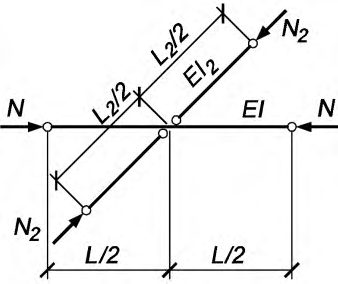
где Nmin - минимальное значение расчетного усилия для одного дюбеля, вычисленное в соответствии с 12.4.5.
13Фермы из одиночных уголков
13.1Общие положения
Характерная особенность одноуголковых ферм -асимметрия сечений и прикреплений элементов относительно плоскости фермы, вызывающая смещение продольных сил с осей уголков в сторону полок, параллельных плоскости фермы (в сторону обушков). Это смещение зависит от ряда факторов: жесткости сечения поясного уголка на кручение, степени защемления его от скручивания, изгибной жесткости его полок, типа узла (наличия и размеров фасонки, наличия прикреплений по второй полке, числа сходящихся в узле элементов решетки, знака и значения усилий в них, углов примыкания к поясу) и других.
Изгибающие моменты в уголках возникают от неоднородной жесткости прикреплений. Расчетные значения эксцентриситетов продольных сил из плоскости фермы («эксцентриситетов прикрепления») еу , отнесенных к геометрической характеристике сечения z , приведены в таблице 42.
При жестких прикреплениях одиночных уголков по одной полке (сваркой или более чем одним болтом) в них возникают добавочные (помимо моментов от внеузловой нагрузки, расцентровки узлов и жесткости узлов) изгибающие моменты также и в плоскости фермы. По знаку эти моменты такие, что вызывают смещение продольных сил в сторону перьев уголков, а по абсолютной величине составляют около 60 % соответствующих моментов из плоскости фермы. Отнесенные к z эмпирические значения «эксцентриситетов прикрепления в плоскости фермы» Єxa (соответствующих указанным добавочным моментам) также приведены в таблице 42.
Таблица 42
Примечание - В настоящей таблице приняты следующие обозначения:
| Элементы решетки ферм из равнополочных уголков | Относительные эксцентриситеты прикрепления | Относительные эксцентриситеты прикрепления |
|---|---|---|
| в плоскости фермы Є xa | из плоскости фермы Є y | |
| Прикрепляемые по одной полке: растянутые | 0,36 | -0,6 |
| сжатые | 0,48 | -0,8 |
| растянутые и сжатые, прикрепляемые одним болтом | ( a - z 0 )/ z | -1,0 |
| Прикрепляемые по двум полкам: растянутые | 0,12 | -0,2 |
| сжатые | 0,24 | -0,4 |
13.2Расчет
где Mp = Mq + Me + Mf ; Mq, Me , Mf - изгибающие моменты от внеузловой нагрузки, от расцентровки стержней в узлах и от перемещений системы (от жесткости узлов) соответственно;
- N - продольная сила, принимаемая со знаком, соответствующим знаку усилия («плюс» - при растяжении, «минус» - при сжатии);
- z = z 0 - 0,5 d - расстояние от центральной оси до середины толщины полки уголка;
- z 0 - расстояние от центральной оси до наружной грани полки уголка;
Єxa ; Єy - относительные эксцентриситеты прикрепления, определяемые по таблице 42 (для поясов ферм Єxa = Єy = 0).
Изгибающие моменты Mq, Me , Mf , Mp следует принимать положительными, если они вызывают растяжение на пере уголка, и отрицательными - в обратном случае.
Моменты от жесткости узлов Mf при расчете растянутых элементов, а также при отсутствии моментов Mq и Me учитывать не следует.
где ν -коэффициент, определяемый по таблице 43 в зависимости от условных относительных эксцентриситетов Єx и Єy ; γ с - коэффициент условий работы, определяемый по СП 16.13330.
Таблица 43
| Условный относительный эксцентриситет в плоскости фермы Є x | Коэффициент ν при условном относительном эксцентриситете из плоскости фермы Є y , равном | Коэффициент ν при условном относительном эксцентриситете из плоскости фермы Є y , равном | Коэффициент ν при условном относительном эксцентриситете из плоскости фермы Є y , равном | Коэффициент ν при условном относительном эксцентриситете из плоскости фермы Є y , равном | Коэффициент ν при условном относительном эксцентриситете из плоскости фермы Є y , равном | Коэффициент ν при условном относительном эксцентриситете из плоскости фермы Є y , равном |
|---|---|---|---|---|---|---|
| Условный относительный эксцентриситет в плоскости фермы Є x | 0 | -0,2 | -0,4 | -0,6 | -0,8 | -1,0 |
| -1,0 | 0,60 | 0,56 | 0,52 | 0,48 | 0,44 | 0,41 |
| -0,8 | 0,67 | 0,62 | 0,57 | 0,52 | 0,48 | 0,44 |
| -0,6 | 0,74 | 0,68 | 0,62 | 0,57 | 0,52 | 0,48 |
| -0,4 | 0,82 | 0,75 | 0,68 | 0,62 | 0,57 | 0,52 |
| -0,2 | 0,90 | 0,82 | 0,75 | 0,68 | 0,62 | 0,56 |
| 0 | 1,00 | 0,90 | 0,82 | 0,74 | 0,67 | 0,60 |
| 0,05 | 0,93 | 0,93 | 0,84 | 0,76 | 0,68 | 0,61 |
| 0,10 | 0,90 | 0,90 | 0,85 | 0,77 | 0,70 | 0,62 |
| 0,15 | 0,87 | 0,87 | 0,87 | 0,78 | 0,71 | 0,63 |
| 0,20 | 0,83 | 0,83 | 0,83 | 0,80 | 0,72 | 0,65 |
| 0,25 | 0,81 | 0,81 | 0,81 | 0,81 | 0,74 | 0,66 |
| 0,30 | 0,77 | 0,77 | 0,77 | 0,77 | 0,76 | 0,67 |
| 0,4 | 0,71 | 0,71 | 0,71 | 0,71 | 0,71 | 0,70 |
| 0,6 | 0,63 | 0,63 | 0,63 | 0,63 | 0,63 | 0,63 |
| 0,8 | 0,55 | 0,55 | 0,55 | 0,55 | 0,55 | 0,55 |
| 1,0 | 0,50 | 0,50 | 0,50 | 0,50 | 0,50 | 0,50 |
| 1,2 | 0,45 | 0,45 | 0,45 | 0,45 | 0,45 | 0,45 |
| 1,4 | 0,41 | 0,41 | 0,41 | 0,41 | 0,41 | 0,41 |
Значения Єx следует определять по формуле
(65) где ex - эксцентриситет продольной силы в плоскости фермы ( ex = Mx / N ), вычисляемый с учетом знаков изгибающих моментов и продольной силы (положительному эксцентриситету соответствует направление к перу, а отрицательному - к обушку уголка).
Эксцентриситет продольной силы из плоскости фермы совпадает с эксцентриситетом прикрепления ( ey = My / N; Єy = ey / z ; ey - см. 13.2.1).
В остальных случаях расчет следует выполнять по формуле
где x 0 и y 0 - координаты рассматриваемой точки сечения уголка относительно его главных осей (рисунок 19).
Изгибающие моменты Mx 0 и My 0 следует определять по формулам:
где α - угол наклона главных осей сечения уголка к полкам, отсчитываемый от горизонтальной оси (рисунок 19).
Рисунок 19 - Сечения элементов из одиночных уголков
Изгибающие моменты Mx и My следует подставлять в формулы (67) и (68) со своими знаками (см. 13.2.1).
Моменты инерции сечения 𝐼 𝑥0 и 𝐼 𝑦0 для равнополочных уголков следует определять по сортаменту. Для неравнополочных уголков по сортаменту обозначение 𝐼 𝑦0 соответствует обозначению Iu min ), а 𝐼 𝑥0 cледует определять по формуле
13.2.4. Расчет на устойчивость внецентренно сжатых и сжато-изгибаемых элементов из одиночных уголков, не имеющих промежуточных закреплений в одном направлении, следует выполнять по формуле (109) СП 16.13330.2017, в которой коэффициент φ e определяется по формуле
В формуле (70) коэффициенты φ𝑒𝑥0 и φ𝑒𝑦0 следует определять в соответствии с требованиями СП 16.13330 в зависимости от условной гибкости 𝜆 ̅ 𝑥0𝑚𝑖𝑛 и 𝜆 ̅ 𝑦0𝑚𝑎𝑥 (вычисляемой соответственно относительно осей x 0 - x 0 и y 0 - y 0) и приведенного относительного эксцентриситета mefx 0 и mefy 0 , для равнополочных уголков определяемого по формулам:
Для равнополочных уголков при Єy = - 0,8 (т. е. для сжатых элементов решетки, прикрепляемых по одной полке сваркой или одним болтом и более) значения φ e cледует определять по таблице 44.
Таблица 44
| Условный относительный эксцентриситет в плоскости фермы Є x | Коэффициент φ e при Є y = - 0,8 и при условной гибкости в плоскости наименьшей жесткости уголка λ ̅ 𝑦 0 𝑚𝑎𝑥 , равной | Коэффициент φ e при Є y = - 0,8 и при условной гибкости в плоскости наименьшей жесткости уголка λ ̅ 𝑦 0 𝑚𝑎𝑥 , равной | Коэффициент φ e при Є y = - 0,8 и при условной гибкости в плоскости наименьшей жесткости уголка λ ̅ 𝑦 0 𝑚𝑎𝑥 , равной | Коэффициент φ e при Є y = - 0,8 и при условной гибкости в плоскости наименьшей жесткости уголка λ ̅ 𝑦 0 𝑚𝑎𝑥 , равной | Коэффициент φ e при Є y = - 0,8 и при условной гибкости в плоскости наименьшей жесткости уголка λ ̅ 𝑦 0 𝑚𝑎𝑥 , равной | Коэффициент φ e при Є y = - 0,8 и при условной гибкости в плоскости наименьшей жесткости уголка λ ̅ 𝑦 0 𝑚𝑎𝑥 , равной | Коэффициент φ e при Є y = - 0,8 и при условной гибкости в плоскости наименьшей жесткости уголка λ ̅ 𝑦 0 𝑚𝑎𝑥 , равной |
|---|---|---|---|---|---|---|---|
| Условный относительный эксцентриситет в плоскости фермы Є x | 0 | 0,5 | 1,0 | 2.0 | 3,0 | 4,0 | 5,0 |
| -1,0 | 0,44 | 0,43 | 0,42 | 0,40 | 0,32 | 0,26 | 0,22 |
| -0,8 | 0,48 | 0,46 | 0,44 | 0,40 | 0,32 | 0,26 | 0,22 |
| -0,6 | 0,52 | 0,49 | 0,46 | 0,40 | 0,32 | 0,26 | 0,22 |
| -0,4 | 0,57 | 0,51 | 0,47 | 0,40 | 0,32 | 0,26 | 0,22 |
| -0,2 | 0,62 | 0,54 | 0,49 | 0,41 | 0,33 | 0,27 | 0,22 |
| 0 | 0,67 | 0,57 | 0,51 | 0,42 | 0,34 | 0,28 | 0,22 |
| 0,2 | 0,72 | 0,59 | 0,52 | 0,43 | 0,36 | 0,29 | 0,23 |
| 0,3 | 0,76 | 0,60 | 0,52 | 0,44 | 0,37 | 0,30 | 0,23 |
| 0,4 | 0,71 | 0,61 | 0,53 | 0,45 | 0,38 | 0,31 | 0,23 |
| 0,6 | 0,63 | 0,58 | 0,53 | 0,46 | 0,39 | 0,32 | 0,24 |
| 0,8 | 0,55 | 0,53 | 0,51 | 0,45 | 0,38 | 0,31 | 0,23 |
| 1,0 | 0,50 | 0,48 | 0,46 | 0,42 | 0,36 | 0,30 | 0,22 |
| 1,2 | 0,45 | 0,43 | 0,41 | 0,38 | 0,33 | 0,27 | 0,21 |
| 1,4 | 0,41 | 0,39 | 0,37 | 0,34 | 0,30 | 0,25 | 0,20 |
Значения изгибающих моментов 𝑀𝑥0 и 𝑀𝑦0 , необходимые для вычисления условных относительных эксцентриситетов Є𝑥0 и Є𝑦0 при расчете на устойчивость, следует принимать для сечений с наибольшим и наименьшим значениями Mx в пределах средней трети длины стержня.
Коэффициент φ𝑥0𝑚𝑎𝑥 cледует определять в соответствии с 7.1.3 СП 16.13330.2017 для наименьшей гибкости стержня (относительно оси x 0 - x 0).
Таблица 45
| Элементы ферм | Расчетная длина l ef |
|---|---|
| Сжатые и растянутые пояса, опорные раскосы и опорные стойки | 0,9 l |
| Сжато-изгибаемые пояса (в плоскости фермы) | 0,8 l |
| Раскосы и основные стойки (передающие поперечную силу) | 0,8 l 1 |
| Дополнительные стойки (воспринимающие только местную нагрузку) | 0,9 l 1 |
| Примечание - В настоящей таблице приняты следующие обозначения: l - геометрическая длина элемента (расстояние между центрами узлов; при не центрированных узлах - расстояние между точками пересечения геометрических осей элементов) в плоскости фермы; l 1 - расстояние между ближайшими узлами по длине элемента. | Примечание - В настоящей таблице приняты следующие обозначения: l - геометрическая длина элемента (расстояние между центрами узлов; при не центрированных узлах - расстояние между точками пересечения геометрических осей элементов) в плоскости фермы; l 1 - расстояние между ближайшими узлами по длине элемента. |
при g < 0,58 ( f+l )
б) в поясном элементе: при tgθ ≥ 0,58 (θ ≥ 30 o ) при tgθ < 0,58 (θ
Рисунок 20 - Схема сварного точечного соединения двух элементов из одиночных уголков
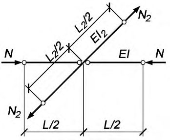
13.3Конструирование
возникающих при этом изгибающих моментов в стержнях Me , см. 13.2.1).
14. Фермы и связи из гнутосварных профилей
14.1Материалы
- 14.1.4. Расчетные сопротивления гнутосварных профилей следует принимать по СП 16.13330. Следует учитывать повышение предела текучести материала за счет упрочнения зон изгиба.
14.2Местная устойчивость стенок при сосредоточенных нагрузках
- а) реакцию крайней опоры, нагрузку на конце консоли и на участках 1,5 h' (где h' = H2t , на рисунке 21, а ), прилегающих к опорам, по формуле
б) реакцию промежуточной опоры и опоры консоли, нагрузку на участках, расположенных на расстоянии более 1,5 h' от опор, по формуле
а - схема нагрузок и реакций; б - опирание через прокладку; в - непосредственное опирание Рисунок 21 - К расчету местной устойчивости стенок элементов из гнутосварных профилей
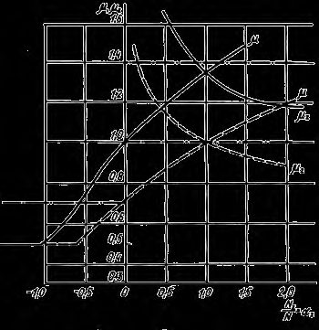
В формулах (80)-(85): t - толщина стенки профиля; z - условная длина распределения сосредоточенного груза, не превышающая высоту стенки h' ; r - внутренний радиус закругления, не превышающий 4 t ;
Ry - МПа;
P1 и P2 - кН.
14.3Узлы ферм с непосредственными прикреплениями элементов решетки к поясам
14.3.1 Общие положения
В узлах ферм с непосредственным прикреплением элементов решетки к поясам (рисунок 22) следует проверять (согласно 15.2.5 СП 16.13330.2017):
- несущую способность стенки (полки) пояса, к которой примыкает элемент решетки;
- несущую способность элемента решетки вблизи примыкания к поясу;
- прочность сварных швов.
В приведенных далее формулах применяют обозначения:
- усилие в примыкающем элементе (решетки);
- М - изгибающий момент от основного воздействия в примыкающем элементе в плоскости фермы в сечении, совпадающем с примыкающей стенкой (полкой) пояса (момент от жесткости узлов следует учитывать согласно 15.2.2 настоящего СП; для ферм из круглых труб - аналогичный момент в рассматриваемом элементе в сечении, проходящем через точку пересечения оси этого элемента с образующей пояса);
- F - продольная сила в поясе со стороны растянутого элемента решетки;
А - площадь поперечного сечения пояса;
Ry - расчетное сопротивление стали пояса; t - толщина стенки (полки) пояса;
- угол примыкания элемента решетки к поясу;
Аd - площадь поперечного сечения элемента решетки; td - толщина стенки (полки) элемента решетки;
Ryd - расчетное сопротивление стали элемента решетки;
- g - половина расстояния между смежными стенками элементов решетки или поперечной стенкой раскоса и опорным ребром; расстояние должно быть достаточным для наложения двух сварных швов.
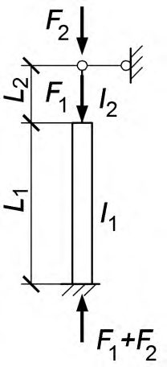
а - К-образный при треугольной решетке; б - то же, при раскосной решетке; в - опорный; г - У-образный; д - Х-образный; е - Т-образный
Рисунок 22 - Узлы ферм из гнутосварных профилей
14.3.2 Расчет узлов ферм из гнутосварных профилей
14.3.2.1 Узлы ферм из замкнутых гнутосварных профилей прямоугольного сечения (рисунок 22) следует проверять согласно требованиям 14.3.1, а также учитывать несущую способность боковой стенки пояса (параллельной плоскости узла) в месте примыкания сжатого элемента решетки.
14.3.2.2 В случае одностороннего примыкания к поясу двух или более элементов решетки с усилиями разных знаков (см. рисунок 22, а,б ), а также одного элемента в опорных узлах (см. рисунок 22, в ) при d / D 0,9 и g / b 0,25 несущую способность стенки пояса следует проверять для каждого примыкающего элемента по формуле
где γ d - коэффициент влияния знака усилия в примыкающем элементе, принимаемый равным 1,2 при растяжении и 1,0 - в остальных случаях; γ D - коэффициент влияния продольной силы в поясе, определяемый при сжатии в поясе, если F / ( ARy ) > 0,5, по формуле
в остальных случаях D = 1,0; b - длина участка линии пересечения примыкающего элемента с поясом в направлении оси пояса, равная db / sin ;
14.3.2.3 Несущую способность стенки пояса в У-образных узлах (см. рисунок 22, г,д ), а также в узлах, указанных в 14.3.2.2, при g / b 0,25 следует проверять по формуле
Формула (87) относится к Т-, У- и Х-образным узлам, а также при достаточно большой раздвижке раскосов - к узлам К-образного типа. В последнем случае условной границей областей применения формул (86) и (87) является значение g/b = 0,25.
14.3.2.4 Несущую способность боковой стенки в плоскости узла в месте примыкания сжатого элемента при d / D > 0,85 следует проверять по формуле
где γ t - коэффициент влияния тонкостенности пояса, для отношений Db / t 25 принимаемый равным 0,8, в остальных случаях - 1,0; k - коэффициент, принимаемый равным (рисунок 23)
Рисунок 23 - График для определения значений коэффициента k в зависимости от тонкостенности пояса
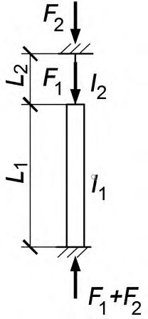
Коэффициент k учитывает возможное снижение несущей способности участка стенки пояса как сжатой пластинки, работающей в упругой или упругопластической стадии ( k = σ cr /Ry ; σ cr - критическое напряжение); k =1,0 для сталей с Ry≤ 400МПа (4100 кгс/см² ) при отношениях Db / t ≤ 40.
- 14.3.2.5 Несущую способность элемента решетки вблизи примыкания к поясу следует проверять:
- а) в узлах, указанных в 14.3.2.2, по формуле
где k следует определять, как в 14.3.2.4, но с заменой характеристик пояса на характеристики элемента решетки: Db на большее из значений d или db , t на td и Ry на Ryd ;
Для элемента решетки неквадратного сечения в левую часть формулы (89) следует вводить множитель ( ) ;
- б) в узлах, указанных в 14.3.2.3, по формуле
выражения в круглых скобках формулы (90) не должны быть менее 0.
Для элементов решетки неквадратного сечения в левую часть формулы (90) следует вводить множитель (1 + d / db ) / 2.
14.3.2.6. Прочность сварных швов, прикрепляющих элементы решетки к поясу, следует проверять:
- а) в узлах, указанных в 14.3.2.2, по формуле
где f , kf , Rwf следует принимать согласно требованиям раздела 12;
- б) в узлах, указанных в 14.3.2.3, по формуле
- в) сварные швы, выполненные при наличии установочного зазора, равного (0,5-0,7) td , c полным проплавлением стенки профиля, следует рассчитывать как стыковые.
- 14.3.2.7 Формулы (86)-(92) учитывают неравномерное распределение напряжений по периметру торца элемента решетки и при относительно высокой несущей способности пояса могут лимитировать расчетную прочность узла.
14.4Расчет узлов связей
- а) на прочность и устойчивость элементов узла и примыкающей к узлу зоны профиля;
- б) на прочность сварных соединений.
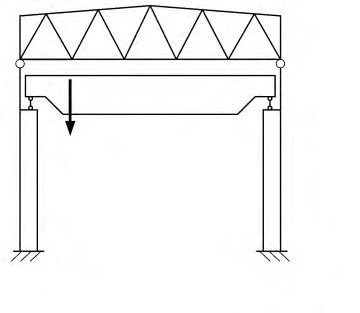
а - типы хвостовиков; б - соединение с фасонкой; 1 - линия центра тяжести сечения фасонки связи с ребром; 2 - ось фасонки фермы; 3 - ось профиля
Рисунок 24 -Узлы связей из гнутосварных профилей
- а) для узлов типа Ф (рисунок 24, а ) - по формуле
где N - усилие в элементе связи;
Ryf - расчетное сопротивление стали фланца;
Df -длина фланца вдоль фасонки связи;
Ryd - расчетное сопротивление стали элемента связи; формула (93) получена на основе допущения образования в пластине фланца вдоль фасонки связи линейных пластических шарниров;
- б) для узлов типа Фн (см. рисунок 24, а ) - по формуле (93), но с заменой td на td+ 0,6 th , где th - толщина накладки;
- в) для узлов типа B (см. рисунок 24, a ) - по условию
где A - площадь поперечного сечения элемента связи;
- γ f - коэффициент влияния глубины врезки, принимаемый:
- а) для узлов типа Ф (см. рисунок 24, а ) - по формуле (93) и по формулам:
- б) для узлов типов Фр и Вр - по формуле (96) и по формуле
- В формулах (95)-(97):
- е , е 1 - расстояния от оси фасонки закрепляемой конструкции до оси элемента связи и до центра тяжести таврового сечения фасонки связи с ребром соответственно (см. рисунок 24, б );
- А , W - площадь сечения и момент сопротивления профиля относительно оси фасонки связи соответственно;
- Аfc , Wfc - площадь и момент сопротивления фасонки связи с учетом ребра (при его наличии) соответственно;
- γ f - коэффициент условий работы, принимаемый в зависимости от наибольшей условной гибкости профиля:
Формулы справедливы при соотношении размеров поперечного сечения элемента связи 0,75 ≤ db /d ≤ 1,1 и отношении большего размера профиля к толщине не более 45.
14.5Проектирование
где l - длина панели; μ - коэффициент расчетной длины, принимаемый:
- для панели пояса, не граничащей с шарнирным узлом (например, фланцевое соединение на болтах), и при наличии равномерно распределенной нагрузки на соседних панелях; μ = 0,8√ 𝑛∙10 3 +1 𝑛∙10 3 +0,65 - для панели пояса, граничащей с шарнирным узлом или с панелью, не загруженной распределенной нагрузкой; здесь n = qH / 2 N - параметр распределенной нагрузки ( 0 ≤ 𝑛 ≤ 4𝐻𝐻𝑡 𝐿 2 ); q - распределенная нагрузка на пояс;
N - продольная сила;
H - высота сечения пояса;
Ht - высота фермы по осям поясов;
L - пролет фермы.
15. Фермы с поясами из широкополочных двутавров 15.1 Общие положения
Для указанных ферм следует использовать сталь с Ryn ≤ 380 Мпа (3850 кгс/см² ) и сварочные материалы с Rwun = 490 МПа (5000 кгс/см² ).
- опорное
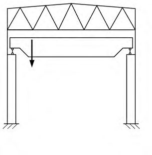
а - К-образное; б - Т-образное; в
Рисунок 25 - Типы сопряжений двутавров с прямоугольными гнутосварными профилями
а - К-образный при треугольной решетке; б - то же, при раскосной решетке; в - опорный Рисунок 26 -Узлы ферм из двутавров
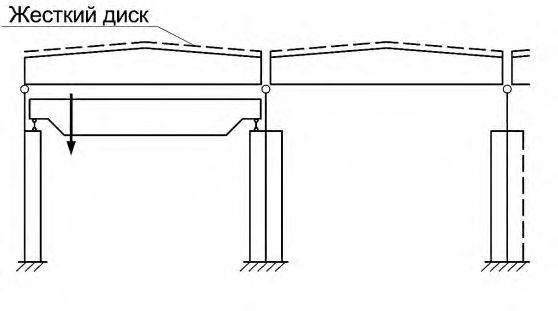
где N и M - расчетные нормальное усилие и момент соответственно;
A и W - площадь поперечного сечения и момент сопротивления стержня соответственно.
При этом значения моментов от узловых эксцентриситетов Me должны удовлетворять условию
где W , A , Ry момент сопротивления, площадь сечения и расчетное сопротивление стали одной из панелей пояса расцентрованного узла соответственно.
Формула (100) учитывает пластические деформации металла в концевых сечениях стержней.
При отсутствии в узлах сжатого пояса элементов усиления (см. 15.3.2) в расчете его на устойчивость следует применять коэффициент условий работы γ c = 0,85.
Элементы, раскрепляющие сжатый пояс из плоскости фермы, и их крепления должны быть рассчитаны по формуле (18) СП 16.13330.2017.
15.2Расчет узлов
- на отгиб участка полки пояса, контактирующей с элементом решетки;
- несущую способность участка стенки пояса, соответствующего сжатому элементу решетки;
- несущую способность поперечного сечения пояса;
- несущую способность элемента решетки в зоне примыкания к поясу;
- прочность сварных швов прикрепления элемента решетки к поясу.
где N - усилие в элементе решетки;
- M - изгибающий момент в примыкающем элементе в плоскости узла в сечении, совпадающем с примыкающей полкой пояса; γ c - коэффициент условий работы, принимаемый по СП 16.13330; γ D - коэффициент, равный (1,5 - σ / Ry ), если пояс сжат при σ / Ry > 0,5, и 1 - в остальных случаях;
- σ - продольное напряжение в панели пояса со стороны растянутого раскоса;
Ry - расчетное сопротивление стали пояса;
Ryd - расчетное сопротивление стали элемента решетки.
При db = d - по формуле
- несущую способность участка стенки пояса, соответствующего сжатому элементу решетки;
- несущую способность поперечного сечения пояса на сдвиг.
где γ D - коэффициент, определяемый по 14.3.2.2.
Несущую способность участка стенки двутаврового пояса под действием сжатого двутаврового элемента решетки следует проверять по формуле
где tw - толщина стенки пояса.
где Q - поперечная сила в узле, равная меньшему из произведений N sin ;
Rs - расчетное сопротивление сдвигу стали пояса;
r - радиус закругления профиля пояса.
где d - коэффициент, принимаемый по 14.3.2.2.
Множитель у отношения d / t в числителе формулы (109) для примыкающих элементов из прямоугольного гнуто-сварного профиля следует принимать в узлах:
К-образного типа равным 0,14; опорных - 0, 06;
Т-образного типа - 0,10.
Рисунок 27 -Узел фермы, усиленный наклонными планками
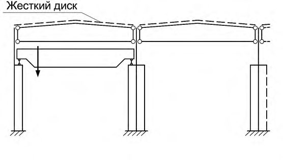
Кроме того, следует проверять несущую способность наклонных планок, определяя действующую на них силу как разность между усилием в элементе решетки N и несущей способностью элемента, вычисленной в соответствии с 15.2.8.
15.3Конструирование
- 5 мм - в опорных узлах и стыковых узлах сжатого пояса;
- 20 мм - в остальных случаях (см. g на рисунке 27).
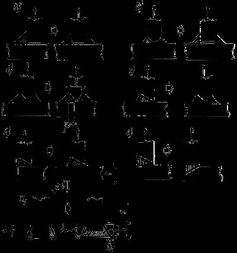
Рисунок 28 -Деталь приварки «носков» гнуто-сварных профилей
| α | β | S , мм |
|---|---|---|
| 35°-45° | 90° | 2-3 |
| 46°-60° | 75° | 3-4 |
| 61°-90° | 55° | 3-5 |
16Конструкции из круглых труб
16.1Общие положения
16.2Расчет
- а) при свободном формировании переходного участка от круглого сечения к сплющенному (с неплавным переходом) по формуле
Таблица 46
| Расчетная длина l ef | Расчетная длина l ef | Расчетная длина l ef | Расчетная длина l ef | |
|---|---|---|---|---|
| поясов, опорных раскосов опорных | прочих элементов решетки | прочих элементов решетки | прочих элементов решетки | |
| без сплющивания концов | со сплющиванием концов | со сплющиванием концов | ||
| Направление продольного изгиба | и | одного или двух в разных | двух в одной плоскости | |
| стоек | ||||
| плоскостях | ||||
| В плоскости решетки | l | 0,85 l | 0,9 l | 0,95 l |
| В направлении, перпендикулярном к плоскости решетки (из плоскости решетки) | l 1 | 0,85 l 1 | 0,9 l 1 | 0,95 l 1 |
но не более 0,7 и не менее 0,3;
- б) при принудительном формировании переходного участка [с плавным переходом на длине (2,5 - 3) D ] по формуле
но не более 1,0 и не менее 0,4.
где Dm - средний (равный полусумме наружного и внутреннего) диаметр трубы с меньшей толщиной стенки; t - наименьшая толщина стенки соединяемых труб;
Rwy и γ wc - расчетное сопротивление и коэффициент условий работы сварного стыкового соединения соответственно, принимаемый в соответствии с 16.2.1.
Расчет сварных стыковых соединений не требуется выполнять в случае сварки на подкладных кольцах с применением сварочных материалов по СП 16.13330 и физического контроля качества растянутых швов.
где Swh и Swt - несущая способность пяточной и носковой частей соответственно сварного шва (частей шва, относящихся к половине сечения раскоса со стороны, острого и тупого углов соответственно пересечения оси трубы с поверхностью головной детали), определяемая по формулам:
здесь Rwy - расчетное сопротивление сварного стыкового соединения растяжению или сжатию, принимаемое в соответствии с СП 16.13330;
Rwd - меньшее из двух значений: 0,7 Rwf или Rwz ;
Rwf и Rwz - расчетные сопротивления углового шва срезу (условному) по металлу шва и по металлу границы сплавления соответственно; td - толщина стенки прикрепляемой трубы; kf - катет (высота) углового шва; lwah и lwat - суммарные длины участков шва, рассматриваемых как стыковые швы, в «пяточной» и «носковой» частях шва соответственно; lwfh и l wft - суммарные длины участков шва, рассматриваемых как угловые швы, в «пяточной» и «носковой» частях шва соответственно; γ wc - коэффициент условий работы сварного соединения впритык, принимаемый в соответствии с 16.2.1.
В качестве угловых швов следует рассматривать:
- а) при резке конца прикрепляемой трубы без скоса кромки (см. рисунок 29, в ) - участки шва, для которых угол раскрытия шва θ, определяемый по формуле (119), составляет менее 30° или более 60°;
- б) при резке конца прикрепляемой трубы со скосом кромки под постоянным или переменным углом ω (см. рисунок 29, г и д ) - участки, для которых значение θ, вычисленное по формуле (119), составляет менее 15° или более 60°;
- в) при резке конца прикрепляемой трубы фрезой (см. рисунок 29, е ), а также в соединениях с пропуском прикрепляемой трубы через отверстие в головной детали - всю длину шва;
- г) при пересечении раскосов между собой, если рассматривается прикрепление «пропущенного» (не прерванного на линии пересечения) раскоса к другому («прерванному»), - всю длину участка взаимного пересечения раскосов.
Остальные участки шва следует рассматривать как стыковые швы.
Угол θ следует определять по формуле
где β m = dm / D - отношение внутреннего диаметра прикрепляемой трубы к наружному диаметру головной детали (при прикреплении к плоскойповерхности β m = 0);
- φ d - угловая координата прикрепляемой трубы для рассматриваемой точки шва, отсчитываемая от «носковой» образующей.
Полную длину «пяточной» lwh и «носковой» lwt частей шва следует определять по графику рисунка 30, а относительную длину участков углового шва l wfh / lwh и l wft / lwt - по графикам рисунка 31.
Длины участков стыкового шва равны: lwah = lwh - lwfh ; lwat = lwt - lwft .
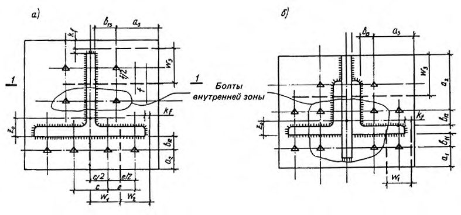
а - развертка прикрепляемой трубы ( А - носок; В - борт; С - пятка); б - эпюра угла раскрытия сварного шва при резке без скоса кромки; в - сечения шва при резке без скоса кромки; г - то же, со скосом кромки под постоянным углом ω; д - то же, со скосом кромки под переменным углом ω; е - то же, фрезой
Рисунок 29 - Схемы сечений сварного шва в узловом соединении двух труб
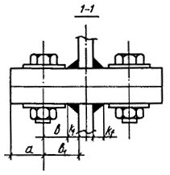
Рисунок 30 - Графики для определения полной длины «пяточного» lwh и «носкового» lwt участков сварного шва в соединении двух труб
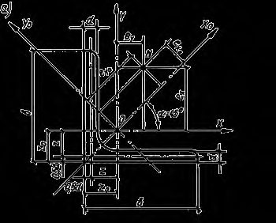
а - без скоса кромки; б - со скосом кромки
Рисунок 31 - Графики для определения коэффициентов lwfh / lwh и l wft / lwt при резке труб
где i - номер примыкающего элемента; j - номер рассматриваемого примыкающего элемента;
Ni , Nj - усилие в примыкающем элементе, принимаемое с учетом знака («плюс» при растяжении, «минус» при сжатии);
i - коэффициент, при i = j определяемый по формуле
Здесь dj - коэффициент влияния знака усилия в рассматриваемом примыкающем элементе, принимаемый равным 0,8 при растяжении и 1,0 - в остальных случаях; l zj - длина участка примыкания рассматриваемого элемента (для трубчатых элементов l zj = dj / sin j );
zj - коэффициент влияния длины примыкания рассматриваемого элемента, для нецилиндрических примыканий определяемый по формуле
для цилиндрических примыканий (труб) dj = 1; bi или bj - ширина примыкающего элемента (для трубчатого элемента bi = di или bj = dj );
здесь = D / t - тонкостенность пояса;
Dj - коэффициент влияния продольной силы в поясе, определяемый при сжатии в поясе по формуле
в остальных случаях Dj = 1; здесь Fj - продольная сила в поясе со стороны растянутого элемента решетки;
rj - коэффициент влияния подкрепления стенки пояса в узле поперечными ребрами, диафрагмами и т. п., принимаемый равным 1,25 при расположении подкрепляющего ребра в пределах участка рассматриваемого примыкания и 1 - в остальных случаях; ε ij - коэффициент влияния расположения каждого из смежных примыкающих элементов по отношению к рассматриваемому ( j -му), определяемый по таблице 47;
wi = bwi / D ; bwi - ширина охвата пояса примыкающим элементом между кромками сварного шва (при i 0,7 wi = i , при 0,7 bwi = bi -t di ). а - К-образный; б - Х-образный; в - опорный
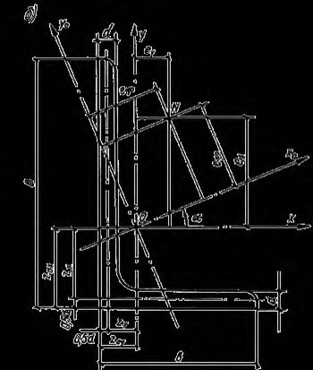
Рисунок 32 -Узлы ферм из круглых труб
А - пятка; В - борт; С - носок
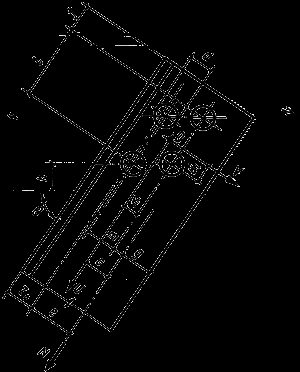
Рисунок 33 - Узел пространственной решетчатой конструкции из труб
Таблица 47
| Расположение оси смежного примыкающего элемента относительно оси рассматриваемого | Тип узла | s ij | ε ij |
|---|---|---|---|
| С той же стороны пояса | К | - | 1 - δ δ ζ ij 0,04 1 ) 0,02 (1 1,3 + + |
| С противоположной стороны пояса | Х | 0 s ij < D | cos 2 D πs ij 2 - + + + 1 5,6 5,4 1 ) 0,02 (1 3 8 i i i β β ψ |
| С противоположной стороны пояса | D | 0 |
Примечание - В настоящей таблице приняты следующие обозначения (см. рисунок 32): gij - наименьшее расстояние вдоль оси пояса между сварными швами, прикрепляющими к поясу рассматриваемый и смежный элементы решетки (продольный просвет):
sij - расстояние вдоль пояса между бортами рассматриваемого и смежного примыкающих элементов:
i = bi / D - отношение ширины примыкания смежного элемента к диаметру пояса (для трубчатых элементов i = di / D ).
Значения ij следует принимать равными:
где æ - коэффициент, принимаемый равным: 0,008 - для раскосов в К-образных узлах, при расчете примыканий которых значение коэффициента ij , определяемого по таблице 47, составляет менее 0,85; 0,015 - в остальных случаях;
cd - коэффициент условий работы, принимаемый равным: 0,85 - для элементов, пересекающихся в узле с двумя другими элементами, имеющими разные знаки усилий; 1 - в остальных случаях.
где Rwy - расчетное сопротивление сварного стыкового соединения, принимаемое по СП 16.13330.
где Pki -значения Pi для каждого из смежных элементов, пересекающихся с рассматриваемым ( jм); ξ kj - доля периметра сечения смежного элемента, соответствующая участку его пересечения с рассматриваемым (для трубчатых элементов ξ kj = l kj / π dk ); здесь l kj , dk -длина участка периметра сечения смежного элемента, соответствующая пересечению с рассматриваемым, и наружный диаметр смежного элемента соответственно.
Если сварной шов не охватывает всего периметра смежного элемента (рисунок 34, б ), то ξ kj следует принимать равным
где ∑ 𝑖𝑘𝑤 𝜈 𝑤=1 - сумма участков периметра смежного элемента, соответствующих участкам наложения сварных швов.
Если у элемента решетки, пересекающегося с другими в зоне узла, приварка к поясу отсутствует или мала (ξ D < 0,25, где ξ D -доля периметра сечения элемента, соответствующая участку его приварки к поясу), то действие такого элемента на пояс не следует учитывать, т. е. значение Pj или Pi для него в формулу (120) не подставлять, а полностью распределять добавлением ξ kj Pkj между смежными элементами.
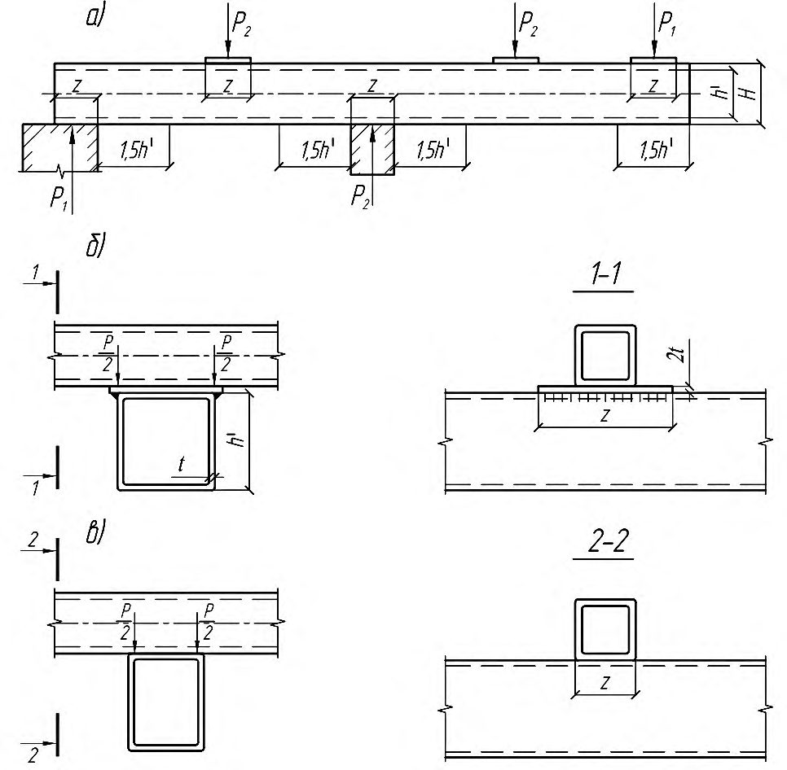
а - с двумя элементами решетки (I - развертка трубы 1; II-развертка трубы 2); б - с тремя элементами решетки (со сплющиванием стойки); 1 - «прерванный» элемент решетки; 2 - «пропущенный» элемент решетки; 3 - участок взаимного пересечения элементов решетки
Рисунок 34 - Бесфасоночные узлы с пересечением элементов решетки между собой
где Nj - усилие в рассматриваемом элементе;
Sp - характеристика несущей способности каждого из головных (играющих роль пояса) элементов (пояса и смежных элементов решетки, пересекающихся с рассматриваемым), определяемая по формуле (122), в которой в качестве δ, t и Ry принимаются соответствующие характеристики головного элемента;
- γ Dp -коэффициент влияния продольной силы в каждом головном элементе, определяемый по формуле (123), в которой в качестве F, А и Ry принимаются соответствующие характеристики головного элемента;
- ξ pj - доля периметра сечения рассматриваемого элемента, соответствующая линии его пересечения с каждым головным элементом, определяемая по формуле
здесь l pj - длина участка периметра сечения рассматриваемого элемента, соответствующая линии пересечения с головным элементом; ψ pj - угол полуохвата каждого головного элемента примыканием рассматриваемого элемента, определяемый по формуле
здесь Dp - наружный диаметр головного элемента; α pj - угол примыкания рассматриваемого элемента к каждому головному элементу.
16.3Конструирование
Таблица 48
| Предел текучести стали R yn , МПа (кгс/см² ) | Тонкостенность | Тонкостенность | Тонкостенность |
|---|---|---|---|
| поясов δ = D / t | примыкающих элементов δ d = d / t d | примыкающих элементов δ d = d / t d | |
| сжатых | растянутых | ||
| До 295 (3000) | 30 | 90 | 90 |
| Св. 295 (3000) до 390 (4000) | 35 | 80 | 90 |
| Св. 390 (4000) | 40 | 70 | 90 |
Примечания
1 Указанные в настоящей таблице значения δ для поясов являются ориентировочными и не исключают необходимости проверки прочности узлов.
2 Для сжатых примыкающих элементов при указанных в настоящей таблице значениях δ d не требуется проверки их стенок на местную устойчивость.
17Фермы с поясами из широкополочных тавров и перекрестной решеткой из одиночных уголков
17.1Общие положения
Рисунок 35 - Схема и узел фермы
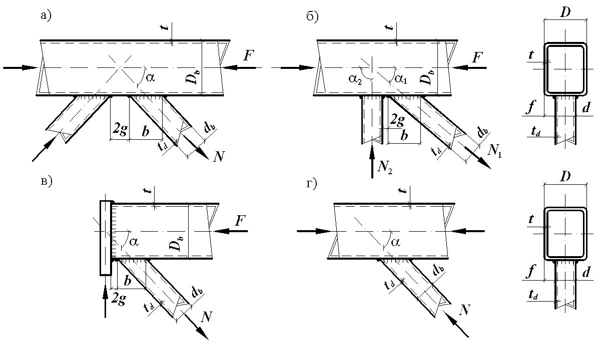
17.2Расчет элементов решетки
Расчетная длина l ef сжатого раскоса в плоскости фермы принимается равной половине геометрической длины ld раскоса.
Расчетная длина l ef сжатого раскоса из плоскости фермы определяется по формуле
где Q - поперечная сила в узле пересечения раскосов, определяемая в зависимости от характера усилия в поддерживающем раскосе по формулам: при растяжении
при нулевом усилии
при сжатии
y - прогиб узла пересечения раскосов из плоскости фермы, определяемый по формуле
Ic, Ib -моменты инерции сечения уголков относительно оси х -х сжатого и поддерживающего раскосов соответственно;
Mc, Mh изгибающие моменты соответственно в сжатом и поддерживающем раскосах, определяемые как произведение усилия Nc и Nh в сжатом и растянутом раскосе соответственно, на значение z 0 уголков раскосов; nh, nc - безразмерные параметры для поддерживающего и сжатого раскосов соответственно, определяемые по формулам:
Радиус инерции i сечения уголка сжатого раскоса принимается:
- при расчетной длине в плоскости фермы - минимальный ( i = iy 0 min );
- при расчетной длине из плоскости фермы - относительно оси х -х ( i = ix ).
где Ah - площадь сечения уголка раскоса; k - коэффициент, равный для раскосов: опорного - 0,9, рядового - 1,0.
18Покрытия из перекрестных элементов
18.1Общие положения
Рисунок 36 - Покрытие из перекрестных элементов
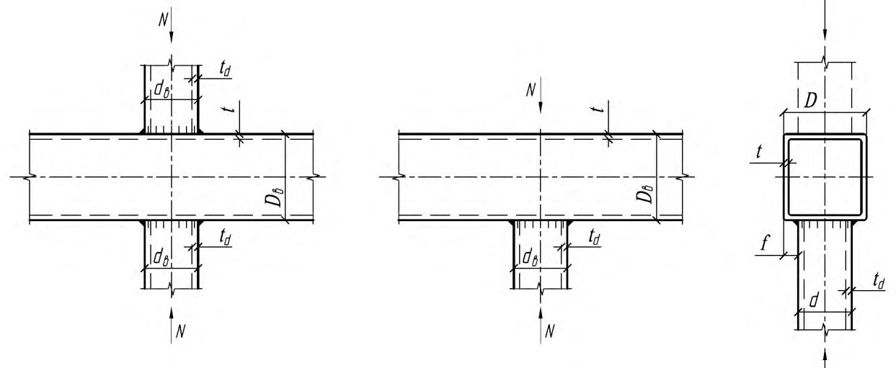
По форме покрытия могут быть плоскими или вспарушенными относительно горизонтальной поверхности. Внутренние элементы покрытия опираются на колонны, расположенные по периметру покрытия или на контурные элементы, которые, в свою очередь, располагаются на сплошных стенах, на рядах отдельных колонн или на колоннах по углам покрытия.
18.2Конструкции покрытий
Материалы для конструкций покрытия и соединений выбираются в соответствии с требованиями СП 16.13330.
18.3Расчет
Нормативные требования к покрытиям и отдельным элементам в части предельных прогибов, деформаций, гибкостей и пр. устанавливаются в соответствии с требованиями СП 16.13330.
- б) в основной расчетной системе, в местах пересечения второстепенных балок с главными, приняты условные шарниры; главные балки (неразрезные) являются упругими опорами для второстепенных (см. рисунок 37). Влияние кручения на работу балок не учитывается;
- в) коэффициенты податливости упругих опор определяются в зависимости от геометрических параметров главных балок и места их пересечения с второстепенными балками;
- г) изгибающие моменты в месте условных шарниров определяются исходя из равенства нулю углов поворота на концах второстепенных балок.
Рисунок 37 - Разбивка покрытия на главные и второстепенные балки
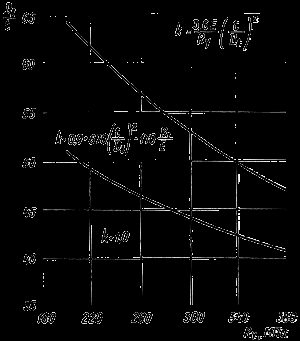
нагрузка на 1 м длины балки
где , - коэффициенты, определяемые по таблице 49; р - интенсивность нагрузки на 1 м² покрытия; l - сторона покрытия, м; n a 1 = - размер ячейки, м; n - число ячеек на стороне покрытия.
Рисунок 38 - Квадратное покрытие из перекрестных элементов с регулярной квадратной сеткой
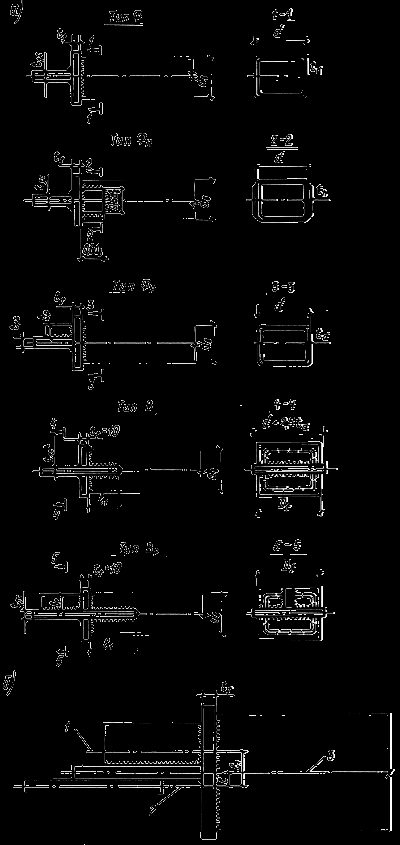
Таблица 49
| Число ячеек на стороне покрытия | Коэффициенты | Значения коэффициентов (увеличенные в 10 4 раз) для внутренних балок, находящихся от ближайшей параллельной контурной балки на расстоянии | Значения коэффициентов (увеличенные в 10 4 раз) для внутренних балок, находящихся от ближайшей параллельной контурной балки на расстоянии | Значения коэффициентов (увеличенные в 10 4 раз) для внутренних балок, находящихся от ближайшей параллельной контурной балки на расстоянии |
|---|---|---|---|---|
| Число ячеек на стороне покрытия | Коэффициенты | а | 2 a | 3 а |
| 4 | | 520 | 703 | 520 |
| 4 | | 4150 | 5620 | 4150 |
| 5 | | 395 | 686 | 686 |
| 5 | | 3160 | 5550 | 5550 |
| 6 | | 366 | 654 | 794 |
| 6 | | 2930 | 5230 | 6350 |
18.4Конструирование
Расчет и проектирование элементов покрытий и соединений производятся в соответствии с требованиями СП 16.13330.
Рисунок 39 - Узел пересечения ферм из прямоугольных замкнутых профилей
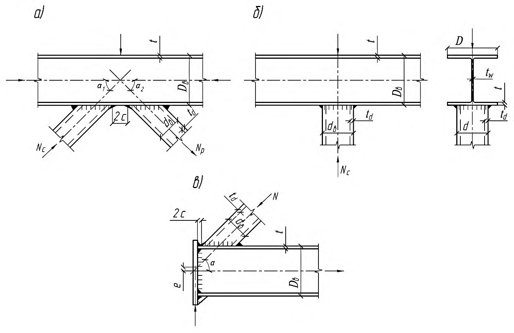
Рисунок 40 - Узел фермы с отсоединяющимся нижним поясом
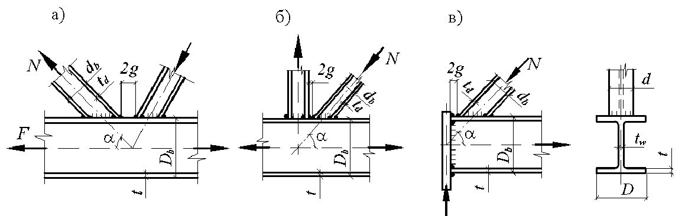
19Структурные конструкции покрытий из прокатных профилей
19.1Общие положения
Конструкция с регулярной (каждая ячейка заполнена раскосами) или нерегулярной решеткой (в ряде ячеек раскосы отсутствуют), представленна на рисунке 41.
Изгибающие моменты М в продольных сжато-изогнутых поясах определяются сложением эпюр: для внутренних поясов
где Mq , Mf - соответственно моменты для многопролетной неразрезной балки на жестких опорах и моменты в балке от прогиба всей системы; для контурных (крайних) поясов
где Me , Mh - момент от эксцентрического крепления верхнего пояса (см. рисунок 42, а , б ) и момент от горизонтальной нагрузки, передаваемой колонной на опору блока соответственно.
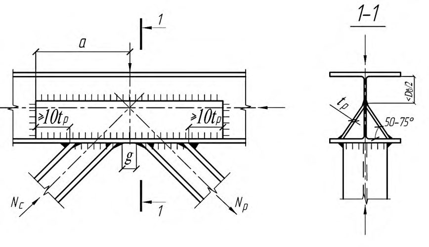
сжатые раскосы приопорной зоны
Рисунок 41 - Схемы структурных конструкций из прокатных профилей
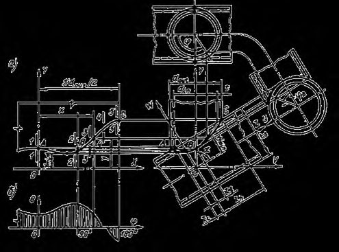
а
- в
- верхних поясов; г
- к
- нижних поясов; л
- м
- распорок
Рисунок 42 - Узловые соединения элементов из прокатных профилей
19.2Расчет элементов
Расчет на устойчивость сжато-изгибаемых элементов поясов постоянного сечения в плоскости действия момента, совпадающей с плоскостью симметрии, следует производить в соответствии с СП 16.13330.
Значение изгибающего момента М при определении эксцентриситета e = M / N следует принимать равным наибольшему значению в пределах средней трети длины панели.
В приопорной панели следует производить расчет поясов на устойчивость в плоскости наименьшей жесткости при действии продольной силы N и изгибающего момента М от внецентренно передаваемой на опору структуры горизонтальной нагрузки. Расчет следует выполнять в соответствии с 9.2.2 СП 16.13330.2017. При этом значение M следует принимать равным наибольшему значению в пределах длины панели, а расчетную длину l ef - равной 0,85 l при радиусе инерции i = i min.
Устойчивость пояса из плоскости действия момента при отсутствии внеузловой нагрузки проверять не следует.
Расчет на прочность элементов, присоединенных в узлах двумя полками на болтах с симметричным расположением отверстий на полках на расстоянии от обушка, равном 2 z 0, следует выполнять как центрально растянутых в соответствии с 7.1.1, а в остальных случаях - в соответствии с 7.1.2 СП 16.13330.2017, при этом значения коэффициента с в формуле (6) СП 16.13330.2017 следует принимать по таблице 50, а площадь сечения элемента Аn в формулах (5) и (6) СП 16.13330.2017 при невыполнении условий 14.2.2 СП 16.13330.2017 определять с учетом ослабления его отверстиями, расположенными в зигзагообразном сечении поперек усилия.
При ослаблении сечения менее чем на 5 % в формулах следует принимать площадь сечения А и коэффициент условий работы с = 1,0.
Значение изгибающего момента при отсутствии на элементе поперечной нагрузки следует принимать в плоскостях: перпендикулярной к прикрепленной полке My = eхN , параллельной Mх = eyN ( еx = z 0; eу = z 0 a ; где а - расстояние от обушка уголка до центра тяжести сварных швов). Обозначения и ориентация сечения приведены на рисунке 19.
При распределении сварных швов на обушке и пере уголка в соотношении от 0,5:0,5 до 0,65:0,35 влиянием момента, действующего в плоскости, параллельной прикрепленной полке, следует пренебречь. Элементы с таким креплением следует рассчитывать на прочность как центрально растянутые по формуле (5) СП 16.13330.2017 с коэффициентом условий работы с = 0,75.
Таблица 50
| Элементы конструкций | Коэффициент условий работы с |
|---|---|
| 1 Неразрезные сжато-изогнутые (элементы 1 на . рисунке 41) и разрезные пояса из парных уголков, соединенных болтами или сваркой в расчетах на устойчивость | 1,00 |
| 2 Сжатые контурные пояса из одиночных уголков (элементы 2 , на рисунке 41), соединенные болтами или сваркой в расчетах на устойчивость | 0,95 |
| 3 Разрезные сжатые пояса (элементы 3 , на рисунке 41) из одиночных уголков, прикрепленных в узлах одной полкой, а также неразрезные пояса с прикреплением фасонок болтами или сваркой: | |
| одним (см. рисунок 42, и-м ), а также двумя болтами или сваркой (см. рисунок 42, к ); | 0,75 |
| двумя болтами и более или сваркой (см. рисунок 42, и , л , м ) и независимо от крепления (см. рисунок 42, и ) | 0,85 |
| 4 Сжатые раскосы из одиночных уголков, прикрепляемые одной полкой: сваркой или двумя болтами и более, установленными вдоль оси элемента (см. рисунок 42, а-в , д ); | 1,00 |
| сваркой или двумя болтами и более на одном конце элемента (см. рисунок 42, а-в ), одним болтом непосредственно к поясу или болтами через фасонку на другом конце (см. рисунок 42, е ); | 0,85 |
| одним болтом на обоих концах элемента, болтами через фасонки (см. рисунок 42, ж ), а также раскосы 4 , см . рисунок 41, независимо от вида крепления; | 0,75 |
| сваркой через фасонки (в том числе сварным креплением фасонки к поясу), см. рисунок 42, ж | 0,90 |
| 5 Растянутые нижние пояса из одиночных равнополочных уголков с симметричным расположением болтов в обеих полках: | |
| при b / t = 12-13; d / b = 0,21-0,24: | |
| c / b = 0,3 | 0,75 |
| c / b = 0,4; c / b = 0,7 | 0,80 |
| c / b = 0,5; c / b = 0,6 | 0,90 |
| при b / t = 15-16; d / b = 0,125-0,18; | |
| c / b = 0,3; c / b = 0,7 | 0,85 |
| c / b = 0,4 | 0,90 |
| c / b = 0,5 | 0,95 |
| при b / t = 15-16; d / b = 0,10-0,12: | |
| c / b = 0,3; c / d = 0,4 | 0,90 |
| c / b = 0,5; c / b = 0,6; c / b = 0,7 | 0,95 |
Коэффициенты условий работы с принимаются для блоков: с регулярной решеткой по таблице 50, с разреженной - независимо от места установки элемента в конструкции и условий закрепления в узлах с = 0,75.
При вычислении приведенного относительного эксцентриситета mef,y = my для сечений из одиночных уголков коэффициент следует определять как для сечений типа 11 по таблице Д.2 (приложение Д) СП 16.13330.2017.
В расчетах следует принимать значения изгибающего момента М и радиуса инерции сечения i относительно главных осей сечения. для раскосов и разрезных поясов,
1 - одним болтом; 2 - двумя болтами и более (вдоль элементов) или сваркой Рисунок 43 - График для определения значений прикрепленных в узлах одной полкой
При определении гибкости верхних контурных поясов в обеих плоскостях расчетная длина l ef = 0,85 l. Расчетное значение изгибающих моментов в каждой плоскости принимается равным наибольшему в пределах панели пояса.
Таблица 51
| Вид расчета и геометрические характеристики соединения | Коэффициент условий работы b для соединений | Коэффициент условий работы b для соединений |
|---|---|---|
| одноболтового | многоболтового | |
| На срез | 1,00 | 0,90 |
| На смятие при расстояниях: | ||
| a 2d ; b 2,5 d | 1,00 | 0,90 |
| а = 1,63 d ; b 2,32 d | 0,90 | 0,80 |
| а = 1,5 d; b > 2 d ; и a > 1,5 d ; b = 2 d | 0,85 | 0,75 |
| а 2 d ; b = 2,32 d | 1,00 | 0,85 |
| а = l,35 d ; a 1 = l,35 d при толщине полки до 6 мм и а 1 = 1,25 d при толщине полки свыше 6 мм, b 2 d (только для раскосов и разрезных поясов) | 0,65 | 0,60 |
| На смятие элементов, работающих только на сжатие (раскосы и разрезные пояса), при a = a 1 = 1,25 d : | ||
| b = 2,5 d | 1,00 | 0,90 |
| b = 2,3 d | 1,00 | 0,85 |
| b = 2 d | 1,00 | 0,75 |
Примечания
- 1 В настоящей таблице приняты следующие обозначения:
- а - расстояние от края элемента до центра ближайшего отверстия вдоль усилия;
- а 1 - расстояние от края скоса до центра ближайшего отверстия;
- b - расстояние между центрами отверстий;
- d - диаметр отверстия.
- 2 Значения коэффициентов b , относятся к элементам из уголков без cкоса полки с отверстием (рисунок 44, в ).
- 3 Скос полки с отверстием в растянутых элементах следует выполнять по рисунку 44, б -г , при этом a 1 1,35 d при толщине полки, равной или меньше 6 мм, и а 1 1,25 - при толщине полки свыше 6 мм. В сжатых элементах скос следует выполнять по рисунку 44, д при а 1,25 d. Скосы при изготовлении выполняются без допуска в сторону уменьшения, о чем должны быть даны указания в проекте.
- 4 При промежуточных значениях а и b коэффициент b определяется линейной интерполяцией. При одновременном изменении а и b в соединении следует принимать значение коэффициента, полученного интерполяцией для а при b = 2,5 d и для b при а = 2 d.
а - без скоса полки; б -д - со скосом полки; е -и - развертки для а -в и г , д соответственно; 1 -1 , 2 -2 , 2-2 , 22 - расчетные сечения
Рисунок 44 - Расположение отверстий для болтов в уголках структурных конструкций
19.3Конструирование
Деление конструкции на сборочные элементы следует производить с учетом исключения для большинства элементов операций сборки и сварки, сосредоточивая их на минимальном числе транспортабельных стержневых и плоскостных элементов.
Конструкция заводских, монтажных или комбинированных узловых соединений определяется их назначением и принятой технологией изготовления, сборки и монтажа покрытия в соответствии с правилами изготовления и контроля качества стальных строительных конструкций.
Заводские соединения следует выполнять сварными, монтажные - на болтах.
Для обеспечения размещения сварных швов или болтов в пределах полок поясных уголков следует смещать точки пересечения осей элементов решетки в узлах с осей поясов до обушков уголка.
Болты следует принимать одного диаметра и не более чем 3-х размеров по длине.
Для компенсации сдвиговых деформаций в двухскатных конструкциях структурных покрытий пролетом 18 и 24 м при разработке деталировочных чертежей следует увеличивать принятый в проекте уклон поясов на 1 %.
При одно- и многорядном расположении болтов в каждом ряду их не должно быть более 5. При расположении болтов в шахматном порядке наиболее удаленный от узла болт следует располагать на наименьшей риске.
В элементах решетки из одиночных уголков, прикрепленных одной полкой и подверженных растяжению, отверстия под болты (при однорядном расположении) и центр группы (при многорядном расположении) следует размещать на расстоянии 0,35-0,45 b от обушка, а в элементах, подверженных сжатию - 0,45-0,55 b ( b - ширина полки уголка). При креплении таких элементов сваркой швы следует распределять между обушком и пером в соотношении от 0,5:0,5 до 0,65:0,35. В элементах из парных уголков, составленных в тавровое сечение, отверстия под болты и центр тяжести сварных швов следует размещать на расстоянии от обушка 0,35-0,45 b и 0,3-0,4 b соответственно.
Минимальное расстояние от края элемента до центра ближайшего отверстия вдоль усилия в растянутых элементах следует назначать не менее 1,5 d и не менее 1,35 d по нормали до скоса полки без допуска в сторону уменьшения при изготовлении (где d -диаметр отверстия). При этом линия скоса должна пересекаться с осями отверстия за пределами полки (см. рисунок 44, б -г ). В элементах, подверженных только сжатию, расстояние от центра ближайшего отверстия до скоса по нормали следует назначать не менее l,25 d без допуска в сторону уменьшения при изготовлении. Несущая способность соединения в этом случае не снижается. Пересечение линии скоса с краями элемента допускается в пределах полки (см. рисунок 44, д ).
20Балки
20.1Общие положения
- М - расчетный изгибающий момент;
- n - параметр, определяющий предельный прогиб ( fu = l / n ) и принимаемый согласно СП 20.13330;
- ρ - параметр, равный 9,6 - при равномерно распределенной нагрузке, 12 - при сосредоточенной нагрузке в середине пролета, 10 - в остальных случаях;
- γ f - коэффициент надежности по нагрузке, определяемый как отношение расчетного значения эквивалентной (по значению изгибающего момента) нагрузки к нормативному;
20.2Балки из однородного материала с устойчивой стенкой
Эффективное значение расчетного сопротивления стали Ry,ef следует определять по формуле
где 1 = 1 + 1/3 ε ̅ 2 + 0,8 ( / Rs ) 4 (1 - 1/ ε ̅ 2 );
1 = 0,25(3 1 - 2).
Параметр ε ̅ следует определять по формуле
где c 1 x - коэффициент, определяемый по формулам (77) СП 16.13330.2017 и изменяющийся в пределах 1 < c 1 x cx ; α f = А f / Аw .
Для балок коробчатого сечения коэффициент c 1 x в формуле (142) следует умножать на 0,5.
В формулах (141) значение λ ̅ uw следует определять по таблице 52 в зависимости от ε ̅ , а значение λ ̅ uf - по 8.5.18 СП 16.13330.2017. В таблице 52 и в формулах (141) среднее касательное напряжение следует принимать равным = Q / Aw .
Таблица 52
| / R s | Предельные значения λ ̅ uw при ε ̅ , равном | Предельные значения λ ̅ uw при ε ̅ , равном | Предельные значения λ ̅ uw при ε ̅ , равном | Предельные значения λ ̅ uw при ε ̅ , равном | Предельные значения λ ̅ uw при ε ̅ , равном | Предельные значения λ ̅ uw при ε ̅ , равном | Предельные значения λ ̅ uw при ε ̅ , равном | Предельные значения λ ̅ uw при ε ̅ , равном | Предельные значения λ ̅ uw при ε ̅ , равном |
|---|---|---|---|---|---|---|---|---|---|
| / R s | 1,0 | 1,5 | 2,0 | 2,5 | 3,0 | 3,5 | 4,0 | 4,5 | 5,0 |
| 0 | 5,50 | 4,00 | 3,42 | 3,00 | 2,72 | 2,52 | 2,37 | 2,27 | 2,20 |
| 0,5 | 4,50 | 3,70 | 3,13 | 2,75 | 2,51 | 2,35 | 2,26 | 2,20 | 2,20 |
| 0,6 | 4,25 | 3,52 | 2,98 | 2,64 | 2,42 | 2,28 | 2,20 | 2,20 | 2,20 |
| 0,7 | 4,00 | 3,34 | 2,84 | 2,53 | 2,34 | 2,20 | 2,20 | 2,20 | 2,20 |
| 0,8 | 3,75 | 3,04 | 2,62 | 2,37 | 2,26 | 2,20 | 2,20 | 2,20 | 2,20 |
| 0,9 | 3,50 | 2,73 | 2,39 | 2,20 | 2,20 | 2,20 | 2,20 | 2,20 | 2,20 |
Значения M и Q следует определять в одном сечении балки.
Эффективное значение расчетного сопротивления стали Ry,ef следует определять по формуле
где 1 = (1,8 1 - 0,8) / ( 1 ) 3 1 ω .
Эффективное значение расчетного сопротивления стали Ry,ef следует определять по формуле
где 2 = (1,8 2 - 0,8) / ( 2 3 2 ).
20.3Бистальные балки
- а) предельных (ограниченных) пластических деформаций, выражающийся в ограничении наибольшей интенсивности пластических деформаций ε ip в стенке нормой предельной интенсивности пластических деформаций ε ip,lim , при этом в расчетах учитываются пластические деформации не только в стенке, но и в поясах;
- б) предельных напряжений (расчетных сопротивлений) в поясе балки при упругой его работе, при этом в расчетах учитываются пластические деформации только в стенке.
- 1 - расчеты прочности выполняются по критерию предельных напряжений в поясе балки при расчетном сопротивлении стали поясов Rf = Ru / , меньшем расчетного сопротивления по пределу текучести; балки крановых путей с режимами работы 1К-5К (согласно стандарту по режимам работы грузоподъемных кранов).
- 2-4 - расчеты прочности выполняются по критерию ограниченных пластических деформаций, в частности:
- 2 -ε ip,lim = 0,1 % - балки, непосредственно воспринимающие подвижные и вибрационные нагрузки (балки рабочих площадок, бункерных и разгрузочных эстакад, транспортерных галерей, под краны гидротехнических сооружений и т. п.);
- 3 - ε ip,lim = 0,2 % - балки, работающие на статические нагрузки (балки перекрытий и покрытий; ригели рам, фахверка; балки, поддерживающие технологическое оборудование; ригели эстакад и другие изгибаемые, растянуто-изгибаемые и сжато-изгибаемые балочные элементы);
- 4 - ε ip,lim = 0,4 % - балки работающие на статическую нагрузку, но не имеющие продольных ребер жесткости, не воспринимающие местных нагрузок и отличающиеся повышенной общей устойчивостью и устойчивостью стенок и свесов поясов аналогично балкам, рассчитываемым на прочность в соответствии с разделом 7 СП 16.13330.2017.
при изгибе в двух главных плоскостях
при осевой силе с изгибом
Таблица 53
| R w | R f | Значение коэффициента с х для групп балок | Значение коэффициента с х для групп балок | Значение коэффициента с х для групп балок | Значение коэффициента с х для групп балок | Значение коэффициента с х для групп балок | Значение коэффициента с х для групп балок | Значение коэффициента с х для групп балок | Значение коэффициента с х для групп балок | Значение коэффициента с х для групп балок | Значение коэффициента с х для групп балок | Значение коэффициента с х для групп балок | Значение коэффициента с х для групп балок | Значение коэффициента с х для групп балок | ||
|---|---|---|---|---|---|---|---|---|---|---|---|---|---|---|---|---|
| Номер сечения | Сечение | 2 ) | 1 | 1 | 1 | 1 | 2 | 2 | 2 | 2 | 4 | 4 | 4 | 4 | 4 | |
| МПа (кгс/см | МПа (кгс/см | при A f / A w , равных | при A f / A w , равных | при A f / A w , равных | при A f / A w , равных | при A f / A w , равных | при A f / A w , равных | при A f / A w , равных | при A f / A w , равных | при A f / A w , равных | при A f / A w , равных | при A f / A w , равных | при A f / A w , равных | при A f / A w , равных | ||
| 0,25 | 0,5 | 1 | 2 | 0,25 | 0,5 | 1 | 2 | 0,25 | 0,5 1 | 2 | ||||||
| 1 | 230 (2350) | 300 (3050) | 0,97 | 0,98 | 0,99 | 0,99 | 1,02 | 1,01 | 1,01 | 1,00 | 1,05 | 1,03 1,02 | 1,01 | |||
| 1 | 230 (2350) | 330 (3350) | 0,95 | 0,97 | 0,98 | 0,99 | 0,98 | 0,99 | 0,99 | 1,00 | 1,01 | 1,01 1,01 | 1,00 | |||
| 1 | 230 (2350) | 370 (3750) | 0,93 | 0,98 | 0,97 | 0,99 | 0,94 | 0,96 | 0,98 | 0,99 | 0,97 | 0,98 0,99 | 0,99 | |||
| 1 | 230 (2350) | 400 (4100) | 0,91 | 0,94 | 0,97 | 0,98 | 0,91 | 0,94 | 0,97 | 0,98 | 0,94 | 0,96 0,98 | 0,99 | |||
| 1 | 230 (2350) | 455 (4640) | 0,88 | 0,92 | 0,96 | 0,98 | - | - | - | - | - | - - | - | |||
| 1 | 260 (2650) | 330 (3350) | 0,98 | 0,98 | 0,99 | 1,00 | 1,02 | 1,02 | 1,01 | 1,00 | 1,06 | 1,04 1,02 | 1,01 | |||
| 1 | 260 (2650) | 370 (3750) | 0,95 | 0,97 | 0,98 | 0,99 | 0,98 | 0,99 | 0,99 | 0,99 | 1,01 | 1,01 1,00 | 1,00 | |||
| 1 | 260 (2650) | 400 (4100) | 0,93 | 0,96 | 0,98 | 0,99 | 0,95 | 0,97 | 0,98 | 0,99 | 0,98 | 0,99 0,99 | 1,00 | |||
| 1 | 260 (2650) | 455 (4640) | 0,90 | 0,94 | 0,97 | 0,98 | - | - | - | - | - | - - | - | |||
| 1 | 300 (3050) | 370 (3750) | 0,98 | 0,99 | 0,99 | 1,00 | 1,03 | 1,02 | 1,01 | 1,00 | 1,07 | 1,05 1,03 | 1,01 | |||
| 1 | 300 (3050) | 400 (4100) | 0,96 | 0,98 | 0,99 | 0,99 | 0,99 | 0,99 | 1,00 | 1,00 | 1,03 | 1,02 1,01 | 1,01 | |||
| 1 | 300 (3050) | 455 (4640) | 0,94 | 0,96 | 0,98 | 0,99 | - | - | - | - | - | - - | - | |||
| 1 | 330 | 400 | (4100) | 0,98 | 0,99 | 0,99 | 1,00 | 1,03 | 1,02 | 1,01 | 1,00 | 1,08 | 1,06 1,03 | 1,01 | ||
| 1 | 300 (3050) | (3350) | 455 (4640) | 0,96 | 0,97 | 0,98 | 0,99 | - | - | - | - | - | - - | - | ||
| 1 | 230 | 300 | (3050) | 0,97 | 0,97 | 0,97 | 0,98 | 1,10 | 1,09 | 1,05 | 1,03 | 1,16 | 1,18 1,17 | 1,10 |
| 2 | (2350) | 330 (3350) | 0,94 0,96 | 0,96 | 0,97 | 1,03 | 1,03 | 1,02 | 1,01 | 1,11 | 1,14 | 1,12 | 1,07 | ||
|---|---|---|---|---|---|---|---|---|---|---|---|---|---|---|---|
| 2 | 370 (3750) 400 455 | (4100) (4640) 0,84 | 0,91 0,88 | 0,93 0,95 0,91 0,94 | 0,96 | 0,96 0,90 | 0,96 - | 0,97 0,93 - | 0,98 0,95 | 0,98 0,97 | 1,04 1,00 | 1,09 1,06 - | 1,07 1,04 - | 1,04 1,00 - | |
| 2 | 260 | 330 (3350) | 0,97 0,94 0,92 | 0,88 0,82 0,97 0,97 0,96 | 0,96 0,98 | - 1,10 1,02 | 0,96 | 1,09 1,02 | 1,05 1,00 | - 1,03 1,00 | - 1,17 | 1,19 1,14 | 1,17 1,12 | 1,20 1,07 | |
| 2 | (2650) | 370 (3750) 400 (4100) | (4640) | 0,88 | 0,94 0,91 0,94 | 0,96 0,95 | 0,98 0,97 | 0,97 | - | 0,98 | 0,98 | 1,11 1,06 | 1,10 - | 1,08 | 1,04 |
| 2 | 300 | 455 370 (3750) | 0,98 | 0,96 | 0,99 | - | - 1,09 | 1,05 | - 1,03 | - 1,19 | 1,20 | - | - 1,10 | ||
| 2 | (3050) | 400 (4100) | 0,98 0,96 0,92 | 0,98 0,95 0,97 | 0,98 | 1,11 1,04 - | 1,03 - | 1,01 | 1,01 | 1,16 | 1,16 | 1,18 1,13 - | 1,07 | ||
| 2 | 330 (3350) | 455 (4640) | 0,94 0,98 | 0,95 | 0,97 | - | - | - | 1,17 | - | |||||
| 2 | (4100) | 0,98 | 0,98 | 1,08 | - | ||||||||||
| 2 | 1,18 | 1,10 | |||||||||||||
| 2 | 400 | 0,98 | 1,10 | 1,04 | 1,03 | 1,20 | |||||||||
| 2 | 455 | (4640) | 0,95 | 0,96 | 3,96 | 0,98 | - | - | - | - | - | - | - | - |
Примечания
1 Коэффициенты сx определяются линейной интерполяцией по Af / Аw и по соотношению площадей поясов при принятии ближайших значений Rw и Rf.
2 Для 3-й группы балок коэффициенты сх определяются линейной интерполяцией в соответствии с примечанием 1 и, кроме того, по ε ip,lim .
Таблица 54
| Значение коэффициента с у при расчетных сопротивлениях R f , МПа (кгс/см² ) | Значение коэффициента с у при расчетных сопротивлениях R f , МПа (кгс/см² ) | Значение коэффициента с у при расчетных сопротивлениях R f , МПа (кгс/см² ) | Значение коэффициента с у при расчетных сопротивлениях R f , МПа (кгс/см² ) | Значение коэффициента с у при расчетных сопротивлениях R f , МПа (кгс/см² ) | |
|---|---|---|---|---|---|
| Группа балок | 300 (3050) | 330 (3350) | 370 (3750) | 400 (4100) | 455 (4640) |
| 1 | 1,00 | 1,00 | 1,00 | 1,00 | 1,00 |
| 2 | 1,33 | 1,31 | 1,30 | 1,28 | 1,00 |
| 3 | 1,41 | 1,40 | 1,39 | 1,38 | 1,00 |
| 4 | 1,47 | 1,46 | 1,45 | 1,44 | 1,00 |
где = 1 + 1235 2( Rf -Rw )/ E , здесь 1 и 2 - коэффициенты, принимаемые по таблице 55.
Таблица 55
| Номер сечения | Сечение | N | 1 | 2 | Номер сечения | Сечение | N | 1 | 1 | 2 | 2 |
|---|---|---|---|---|---|---|---|---|---|---|---|
| Номер сечения | Сечение | w w f f R A R A + 2 | 2 | Номер сечения | Сечение | ( ) w f f R R A + 1,5 | + | - | + | - | |
| 1 | 0 0,1 0,2 0,3 0,4 0,5 0,7 | 1 | 1 - 0,57 - 1,35 - 2,08 - 2,39 - 2,54 | 2 | 0 0,1 0,2 0,3 0,4 0,5 0,7 | 1 0,67 0,54 0,74 1,07 1,35 1,66 | 1 1,13 1,25 1,32 1,34 1,31 1,17 | 1 0,33 0,84 0,51 0,12 - - | 1 - 0,13 - 0,39 - 0,38 - 0,43 - 0,52 - | ||
| 1 | 1,63 | 2 | |||||||||
| 1 | 2,47 | 2 | |||||||||
| 1 | 3,20 | 2 | |||||||||
| 1 | 3,49 | 2 | |||||||||
| 1 | 3,57 | 2 | 0,14 | ||||||||
| 1 | 3,05 | - 2,17 | 2 | 0,42 | 0,82 |
Примечание - При одинаковых знаках напряжений x в большем поясе от усилий М и N следует принимать графу, обозначенную знаком «+», а при разных знаках - графу, обозначенную знаком «- ».
Для сечения 1 принимается независимо от значения действительной асимметрии (считая, что оба пояса имеют площадь большего пояса Af ).
Коэффициент cNy определяется по формуле
При наличии зоны чистого изгиба коэффициенты cх и cу определяются по формулам: c
=
R
/
)
/
0,5
)(1
/
( l v
R
R c
R f w x f w
-
+
;
где l и v -длины пролета балок и зоны чистого изгиба соответственно; с'x и с'у -коэффициенты сx и су , принимаемые по таблицам 53 и 54 в зависимости от ε ip,lim
(151) x и расчетных сопротивлений Rf и Rw соответственно.
для асимметричных сечений с более развитым сжатым поясом
где ψ = bf t f / ( bw tw ), но не менее 0,25;
λ ̅ w - относительная гибкость стенки;
- - среднее касательное напряжение (не более 0,5 Rsw );
- σ1 и σ3 - напряжения в сжатом и растянутом поясах соответственно; если σ1 Rf , принимают σ1 = Rf, если σ3 Rf , принимают σ3 = Rf ;
- А1 , А3 - площади сечения соответственно большего и меньшего пояса бистальной балки;
- h 1 - высота сжатой зоны стенки, определяемая из условий равновесия.
В формулах (155) значение λ ̅ uw следует принимать по таблице 52 в зависимости от параметра ε ̅ , определяемого по формуле
где c 1 r - коэффициент, определяемый по формуле
и изменяющийся в пределах 1 < c 1 r cxr ; здесь r и cxr - коэффициенты, определяемые согласно 8.2.8 СП 16.13330.2017.
Для балок коробчатого сечения коэффициент c 1 r в формуле (156) следует умножать на 0,5.
Эффективное значение расчетного сопротивления стали стенки балки Ryw,ef следует определять по формуле
где 3 = (1,8 3 / r - 0,8) / ( 3 3 3 ).
При выборе стали должно быть выполнено условие Ryw Ryw,ef .
При одновременном действии в сечении М и Q следует учитывать 20.2.6.
20.4Балки с гибкой стенкой
На расстоянии не менее ширины ребра и не более 1,3 tw √𝐸/𝑅𝑦 от опорного ребра следует устанавливать дополнительное двустороннее ребро жесткости размером согласно 20.4.11.
где М и Q - значения момента и поперечной силы в рассматриваемом сечении балки;
Мu - предельное значение момента, вычисляемое по формуле
Qu - предельное значение поперечной силы, вычисляемое по формуле
где tw и hw - толщина и высота стенки соответственно;
Аf - площадь сечения пояса балки;
cr , - критическое напряжение и отношение размеров отсека стенки соответственно, определяемые согласно 8.5.3 СП 16.13330.2017;
Wmin - минимальный момент сопротивления (относительно собственной оси, параллельной поясу балки) таврового сечения, состоящего из сжатого пояса балки и примыкающего к нему участка стенки высотой 0,5 tw √𝐸/𝑅𝑦; а - шаг ребер жесткости.
Рисунок 45 - Схема балки с гибкой стенкой
Краевое растягивающее напряжение принято равным по абсолютной величине Ry. При малой толщине поясов по сравнению с высотой стенки и ( ) 0,85 / / 1 = E R t h y получена формула (161), которая дает несколько преувеличенные (от 1 % до 3,6 %) значения Ми , поскольку в действительной эпюре напряжений в растянутом поясе расчетное сопротивление не достигается.
а - сечение балки; б - эпюра напряжений
Рисунок 46 - Схема предельного состояния сечения балки при изгибе
Рисунок 47 - Схема отсека стенки балки при сдвиге
где все обозначения следует принимать по 20.4.8.
Значение N следует принимать равным не менее значения сосредоточенной нагрузки, расположенной над ребром.
Расчетную длину стержня следует принимать равной l ef = hw (1 - ), но не менее 0,7 hw . Симметричное двустороннее ребро следует рассчитывать на центральное сжатие, одностороннее - на внецентренное сжатие с эксцентриситетом, равным расстоянию от оси стенки до центра тяжести расчетного сечения стержня.
В расчетное сечение стержня следует включать сечение ребра жесткости и полосы стенки шириной 0,65 tw √𝐸/𝑅𝑦 с каждой стороны ребра.
Прочность таких балок следует проверять по формуле
где δ - коэффициент, учитывающий влияние поперечной силы на несущую способность балки и определяемый по формуле δ = 1- 5,6 Аf h / ( Aw l ).
При этом следует принимать толщину полок t f ≥ 0,3 tw и 0,025 ≤ ( Аf h / Aw l ) ≤ 0,1.
Эффективное значение расчетного сопротивления стали балки Ry,ef следует определять по формуле
Для удовлетворения условия (160) следует увеличивать число ребер жесткости или толщину стенки в отсеках балки, расположенных у опор.
При выборе стали следует выполнять условие Ry Ry,ef .
Для получения равнопрочного поперечного сечения в пролетной и опорных зонах 26. балки значения yf yw f w R R h l A A = следует назначать в пределах 22
где М и Q - момент и поперечная сила в рассматриваемом сечении балки соответственно; Мu - предельный момент, вычисляемый по формуле
Qu - предельная поперечная сила, H, вычисляемая по формуле
20.5Балки с перфорированной стенкой
Степень развития прокатного профиля (отношение высоты развитой балки к высоте исходного двутавра) следует принимать ≤ 1,5.
Сварные соединения стенок следует выполнять стыковым швом с полным проваром.
для точек, находящихся над углами вырезанных отверстий на расстоянии 0,5 h от оси х -х
где М - изгибающий момент в сечении балки;
Q - поперечная сила в сечении балки;
Qs - то же, на расстоянии ( с + s - 0,5 а ) от опоры (см. рисунок 48);
Wx - собственный момент сопротивления развитого двутавра в сечении балки с отверстием (сечение нетто) относительно оси х -х ;
Wmax , Wmin - наибольший и наименьший моменты сопротивления таврового сечения.
Рисунок 48 Схема участка балки с перфорированной стенкой
Сосредоточенные грузы следует располагать только в сечениях балки, не ослабленных отверстиями.
Высота стенки сжатого таврового сечения должна удовлетворять требованиям 7.3.2 СП 16.13330.2017, в формуле (29) которого следует принимать λ ̅ = 1,4.
m площадь таврового пояса над вырезом f A вычисляется как
η = 2 / ( s / a - 1) - относительная ширина перемычки; а - ширина перемычки на уровне нейтральной оси; s шаг вырезов (см. рисунок 48);
Момент инерции сечения m I вычисляется по формуле
20.6Элементы двутаврового сечения с гофрированной стенкой
20.6.1 Общие положения
20.6.1.1 В элементах двутаврового сечения для повышения их устойчивости и снижения металлоемкости применяют поперечно-гофрированные стенки. Гофрированные стенки могут состоять из трапецеидальных, треугольных или волнистых гофров.
Конструкции из двутавров с гофрированной стенкой, в т. ч. и бистальные, относятся к 1-му классу (согласно 8.1 СП 16.13330.2017) и рассчитываются в пределах упругих деформаций.
Расчетными параметрами сложного двутаврового сечения с волнистой (синусоидальной) поперечно-гофрированной стенкой (рисунок 49) являются: as - шаг гофра; hef - расчетная высота стенки, которая равняется в сварных балках с гофрированной стенкой полной высоте стенки hw ; tw - толщина гофрированной стенки; f - высота волны гофра; s - развернутая длина полуволны гофра s = as (1 + π 2 f 2 / 16 a 2 s ).
Гофрированную стенку следует принимать:
- толщиной не менее чем 1,5 мм;
- гибкостью гофрированных стенок в пределах λ ̅ w ≤ 200…500;
- условной гибкостью панели гофра 2,3 E R t s y w c = .
Значения параметров гофров должны обеспечивать условия, при которых τ p,cr > τ0 ,cr , где τ p,cr и τ0 ,cr согласно 20.6.3.8 и 20.6.3.9 соответственно.
Рисунок 49 - Схема элемента с волнистой поперечно-гофрированной стенкой
20.6.1.2 В сварных двутаврах с гофрированными стенками следует применять односторонние поясные швы, за исключением мест приложения значительных сосредоточенных усилий или подвижных нагрузок.
20.6.2 Расчет двутавров с гофрированной стенкой при центральном растяжении и сжатии
20.6.2.1 Расчет на прочность элементов при центральном растяжении или сжатии следует выполнять по формуле (5) СП 16.13330.2017, принимая за An площадь нетто двух поясов двутавра с гофрированной стенкой An = Af 1n + Af 2 n .
20.6.2.2 Расчет на устойчивость элементов при центральном сжатии следует выполнять по формуле (7) СП 16.13330.2017, принимая за A площадь брутто двух поясов двутавра с гофрированной стенкой A = A f 1 + Af 2.
При расчете устойчивости элементов с гофрированной стенкой относительно оси y y коэффициент φ определяется в зависимости от гибкости поясов двутавра λ = l ef / i f , где i f -радиус инерции сечения пояса.
Для несимметричных двутавров проверяется отдельно устойчивость каждого пояса в его плоскости при распределении продольной силы пропорционально сечениям поясов.
При расчете устойчивости элементов с гофрированной стенкой относительно оси х -х коэффициент φ следует определять в зависимости от условной приведенной гибкости:
где коэффициент η учитывает влияние деформаций сдвига в тонкой гофрированной стенке. Для волнистых стенок
где w GA - приведенная жесткость элементов с гофрированной стенкой на сдвиг, учитывающая увеличение длины гофрированной стенки и рассчитываемая по формуле
Радиусы инерции сечения симметричного двутавра с гофрированной стенкой определяются по формулам i x = 0,5 h 1, где h 1 = hw + t f - расстояние между центрами тяжести поясов; i y = 0,29 bf .
20.6.3 Расчет двутавров с гофрированной стенкой при изгибе
20.6.3.1 Расчет на прочность балок с гофрированной стенкой симметричного относительно вертикальной оси сечения следует выполнять по формулам: при действии момента в одной из главных плоскостей
где Af n - меньшая площадь нетто из двух поясов двутавра; при действии в сечении поперечной силы
Здесь k λ = 1,085 - 0,008 λ ̅ w (при k λ > 1 следует принимать k λ = 1), λ ̅ w - условная гибкость гофрированной стенки; при действии момента в двух главных плоскостях
где x - координата точки рассматриваемого сечения относительно его главной оси;
Iyfn - сумма моментов инерции поясов нетто относительно оси y -y .
Если момент Мy действует в плоскости одного пояса, то следует считать, что он полностью воспринимается этим поясом.
В случае ослабления стенки отверстиями для болтов значения τ xy по формуле (179) следует умножать на коэффициент α, который рассчитывается по формуле (45) СП 16.13330.2017.
20.6.3.2 Расчет на прочность стенки балки, не укрепленной ребрами жесткости, при действии местного напряжения σ loc в местах приложения нагрузки к поясам, а также в опорных сечениях балки, следует выполнять в соответствии с 8.2.2 СП 16.13330.2017.
20.6.3.3 При проверке прочности гофрированной стенки должно выполняться требование по формуле (44) СП 16.13330.2017, в которой σ х следует определять по формуле
где коэффициент ks = 1 - π 2 f 2 / 16 a 2 s ; здесь σ f - нормальные напряжения в соответствующем поясе. Напряжения σ loc и τ xy в формуле (46) СП 16.13330.2017 следует определять в одной и той же точке балки.
20.6.3.4 При расчете на устойчивость балок двутаврового сечения с гофрированными стенками, изгибающихся в плоскости стенки и удовлетворяющих условиям 20.6.3.1 и 20.6.3.3, следует выполнять проверку на устойчивость сжатых поясов по формуле:
где Af - площадь брутто сжатого пояса; φ f - коэффициент, который определяется по 7.1.3 СП 16.13330.2017, как для центрально сжатого стержня, в зависимости от λ = l ef / i f ; здесь l ef определяется по 8.4.2 СП 16.13330.2017, а i f - радиус инерции сечения сжатого пояса в горизонтальной плоскости.
Для сжатого пояса, выполненного из листовой стали, радиус инерции сечения вычисляется по формуле i f = 0,29 bf ; Nf = M 1 / h 1 - сила сжатия в поясе, где M 1 максимальный изгибающий момент в средней трети длины балки между точками раскрепления.
Устойчивость балок с гофрированной стенкой не нужно проверять, если выполняются условия 8.4.4 СП 16.13330.2017, как для балок с плоской стенкой. При определении условной гибкости (в соответствии с 8.4.4 СП 16.13330.2017) и при расчете условной поперечной силы N (в соответствии с 8.4.5 СП 16.13330.2017) прилегающие участки стенок к сжатому поясу учитывать не следует.
20.6.3.5 При изгибе балок с гофрированными стенками в двух главных плоскостях расчет на устойчивость сжатого пояса следует выполнять по формуле
где φ e - коэффициент, который определяется в соответствии с таблицей Д.3 СП 16.13330.2017, как для внецентренно сжатого стержня, в зависимости от условной гибкости сжатого пояса ( ) E R 0,29b l y f p = (здесь lp - расчетная длина пояса в его плоскости) и приведенного относительного эксцентриситета mef
= η m
, где η = 1 - коэффициент влияния формы сечения;
20.6.3.6 Устойчивость стенок балок с гофрированной стенкой следует считать обеспеченной, если выполнено условие:
где σ loc - местное напряжение в стенке от сосредоточенной нагрузки, которое следует определять в соответствии с 8.2.2 СП 16.13330.2017; σ loc,cr - критическое напряжение, определяемое по формуле
здесь c 1 - коэффициент, который определяется по 20.6.3.7; τ xy - по формуле (179); τ cr - меньшее из значений τ p,cr и τ0 ,cr в соответствии с 20.6.3.8 и 20.6.3.9.
20.6.3.7 Коэффициент c 1 в формуле (186) принимается по таблице 56, в зависимости от соотношения s / hw и значения δ, которое рассчитывается по формуле (84) СП 16.13330.2017.
Таблица 56
| δ | Значение c 1 для двутавров с гофрированными стенками при s / h w | Значение c 1 для двутавров с гофрированными стенками при s / h w | Значение c 1 для двутавров с гофрированными стенками при s / h w | Значение c 1 для двутавров с гофрированными стенками при s / h w | Значение c 1 для двутавров с гофрированными стенками при s / h w |
|---|---|---|---|---|---|
| δ | ≤ 0,1 | 0,2 | 0,3 | 0,4 | ≥ 0,5 |
| 1 | 7,73 | 8,50 | 9,34 | 10,30 | 11,30 |
| 2 | 7,67 | 8,50 | 9,50 | 10,60 | 11,80 |
| 4 | 7,57 | 8,50 | 9,53 | 10,70 | 12,00 |
| ≥ 6 | 7,69 | 8,67 | 9,77 | 11,02 | 12,40 |
20.6.3.8 Критическое напряжение местной потери устойчивости панели волнистой гофры τ p,cr рассчитывается по формуле
20.6.3.9 Критическое напряжение общей потери устойчивости гофрированной стенки τ0 ,cr
где D 1 и D 2 - жесткости изгиба по главным направлениям, Н·мм:
где J - момент инерции гофра, длина которого равняется шагу гофров as .
20.6.3.10 При проверке устойчивости гофрированной стенки по формуле (186) должны выполняться условия:
б) значение эксцентриситета, с которым передается сосредоточенная нагрузка от элемента, находящегося выше, относительно продольной оси балки должно быть e ≤ 0,5 f .
20.6.3.11 Гофрированные стенки следует подкреплять поперечными ребрами жесткости, если в местах приложения больших неподвижных сосредоточенных нагрузок и на опорах элементов с гофрированной стенкой не обеспечивается их прочность или устойчивость при проверке по формулам (46) СП 16.13330.2017 и (185) соответственно. Геометрические характеристики ребер жесткости должны соответствовать требованиям 8.5.9 СП 16.13330.2017, а их расчет следует выполнять в соответствии с 8.5.10 и 8.5.17 СП 16.13330.2017.
Проверку на устойчивость опорного ребра балки с гофрированной стенкой выполнять в соответствии с 8.5.17 СП 16.13330.2017 без учета поддерживающего эффекта гофрированной стенки.
20.6.3.12 Устойчивость сжатых поясов балок с гофрированной стенкой следует считать обеспеченной при выполнении условий 8.5.18 и 8.5.20 СП 16.13330.2017. При вычислении отношения ширины сжатого пояса bf к толщине t f расчетную ширину свеса пояса bef следует принимать равной bef = 0,5 bf .
Напряжение в сжатом поясе σ c согласно с 8.5.18 СП 16.13330.2017 следует определять по формуле
где Wyfn - сумма моментов сопротивления поясов относительно оси y -y .
20.6.4 Расчет двутавров с гофрированной стенкой на действие продольной силы и изгибающего момента
20.6.4.1 Расчет на прочность внецентренно сжатых и внецентренно растянутых элементов с гофрированной стенкой следует выполнять по формуле
20.6.4.2 Расчет устойчивости внецентренно сжатых двутавров с гофрированной стенкой принят по методике сквозных стержней, так как стенка не принимает участия в работе на сжатие и изгиб, и выполняется по 9.3.2 СП 16.13330.2017, где коэффициент φ e определяется в зависимости от условной приведенной гибкости λ ̅ ef в соответствии с формулой (175) и относительного эксцентриситета m = e Af h 1 / If . Для симметричного сечения λ ̅ ef определяется по радиусу инерции i x = 0,5 h 1.
20.6.4.3 Расчет устойчивости внецентренно сжатых элементов двутаврового сечения с гофрированной стенкой из плоскости действия момента при изгибе в плоскости наибольшей жесткости ( Ix > Iy ), которая совпадает с плоскостью симметрии, следует выполнять для каждого пояса отдельно, как для центрально сжатого стержня в соответствии с формулой (5) СП 16.13330.2017 на продольную силу, которая определяется с учетом дополнительного усилия от момента. Значение дополнительного усилия в поясе от момента: Nad = Mx / h 1, где Mx - изгибающий момент, который принимается в соответствии с 9.2.3 СП 16.13330.2017, как при расчете устойчивости внецентренно сжатых стержней сквозного сечения.
20.6.4.4 Расчет устойчивости внецентренно сжатых элементов двутаврового сечения с гофрированной стенкой при сжатии и изгибе в двух плоскостях, и если плоскость наибольшей жесткости ( Ix > Iy ) совпадает с плоскостью симметрии, следует выполнять: для стержня в целом - в плоскости наибольшей жесткости (в плоскости стенки) в соответствии с 20.6.4.2, принимая e = 0; для поясов двутавра - как внецентренно сжатых элементов по формуле (109) СП 16.13330.2017, при этом продольную силу следует определять с учетом усилия от момента Mx (в соответствии с 20.6.3.4), а момент My распределять между поясами двутавра, как Mfy = Nfy ey , где ey =My / N ; (если момент My действует в плоскости одного пояса, то следует считать, что он полностью воспринимается этим поясом).
Расчетную длину поясов в своей плоскости следует принимать по типу определения расчетной длины колонн в плоскости рамы в соответствии с 10.3.9 СП 16.13330.2017.
20.6.4.5 Расчет гофрированных стенок центрально сжатых и внецентренно сжатых стержней следует выполнять на поперечную силу, которая равняется большему из двух значений: фактическую поперечную силу (для внецентренно сжатых стержней) или условную поперечную силу Qfic , которая определяется в соответствии с 7.2.7 СП 16.13330.2017.
20.6.4.6 Для центрально сжатых и внецентренно сжатых элементов двутаврового сечения с гофрированной стенкой параметры стенки следует принимать в соответствии с
20.6.4.7 В центрально сжатых и внецентренно сжатых элементах двутаврового сечения с гофрированной стенкой отношение ширины сжатого пояса bf к толщине t f следует принимать по указаниям 20.6.3.12, при этом определение напряжения в сжатом поясе σ c в формуле (97) СП 16.13330.2017 выполнять по формуле
20.7Балки крановых путей
Таблица 57
| Здания | Заводы |
|---|---|
| Дворы изложниц | Металлургические |
| Шихтовые дворы | То же |
| Отделения раздевания слитков | » |
| Скрапо-разделочные базы; копровые и шлаковые отделения; отделения огневой резки | » |
| Склады чугуна и слитков | » |
| Здания очистки и смазки изложниц | » |
| Пролеты складов заготовок; отделочные пролеты и пролеты складов готового проката | » |
| Здания нагревательных колодцев | » |
| Здания (пролеты или производства), в которых эксплуатируются грузоподъемные краны групп режимов работы 7К (в цехах металлургических производств) и 8К (СП 20.13330) | Любые |
Расчет на усталость выполняется на воздействие от нормативных нагрузок одного крана.
Причиной усталостных повреждений верхних зон балок крановых путей являются многократные сдвиги, обусловливаемые максимальными касательными напряжениями от совместного действия поперечного изгиба, местного смятия и кручения max ∑τ12.
Суммированием приведенных величин при k = 0,3 ( k -учитывает плавность изменения эпюры касательных напряжений в расчетном сечении) получена формула (173) СП 16.13330.2017.
21Висячие покрытия
21.1Общие положения
- а) сеток из нитей, расположенных параллельно друг другу, ортогонально, гексагонально, косоугольно, радиально и т. д.;
- б) плоских или пространственных систем (рисунки 50, 51);
- в) ванто-балочных систем;
- г) железобетонных висячих оболочек;
- д) комбинированных систем; возможны двухпоясные покрытия (рисунок 52). а - радиальная система на контуре, круглом в плане; б - система параллельных нитей на плоском прямоугольном контуре; в , г - седловидные сетки на криволинейных контурах; д -ж - висячие системы и контуры зданий, квадратных в плане; з - висячая система на двух диагональных арках
Рисунок 50 - Виды систем и опорных контуров
- ячеистое
а - ванто-балочное; б - радиально-кольцевое шатровое; в Рисунок 51 - Покрытия а - виды систем; б - примеры радиальных покрытий Рисунок 52 - Двухпоясные покрытия
Применяются также металлические или деревянные настилы.
Чем меньше разница между начальной длиной нити и расстоянием между опорами, тем меньше возможные кинематические перемещения нити под нагрузкой. Но упругие прогибы при этом растут. Используя эти свойства, можно применять струнные конструкции. Для протяженных многопролетных зданий струны следует направлять в продольном направлении и стабилизировать поперечными балками. Для квадратных и овальных в плане однопролетных покрытий зданий из струн образовывают сетку, позволяющую пространственное перераспределение нагрузки между струнами.
21.2Расчет
Для заданной нагрузки q расчетное усилие распора определяется по формуле
где h - разница уровней опор; φ - угол наклона касательной нити у нижней опоры (рисунок 53).
Рисунок 53 - К расчету нити на прочность
Если опоры расположены на одном уровне, формула (194) приобретет вид
где М - изгибающий момент от расчетной нагрузки q в свободно опертой балке пролетом l Расчетное усилие Т определяется по формуле
.
где Q - поперечная сила (реакция) у более нагруженной опоры.
Требуемое сечение нити А определяется по формуле
где c - коэффициент условий работы;
Ry - расчетное сопротивление металла нити.
Расчет по недеформированной схеме позволяет получить не только расчетное усилие и требуемое сечение нити, но, при известном модуле упругости Е, определить растяжимую жесткость ЕА и, следовательно, начальную длину нити (заготовки) и рассчитать монтажную (начальную) геометрию нити, исходя из которой при расчетной нагрузке она займет принятое расчетное положение.
Для гибких конструкций сетей свойственны перемещения по трем осям координат: и - вдоль данной нити; v - поперек данной нити; w - в вертикальном направлении.
Эти перемещения могут быть большими из-за большой растяжимости и кинематичности нитей. Висячие конструкции следует проверять по первым и вторым производным перемещений:
Полученные значения перемещений от местных нагрузок необходимо сравнивать с допустимыми для данной конструкции кровли с точки зрения ее герметичности. Если к кровле подвешивается оборудование, трубопроводы, кабели, то необходимо проверить их целостность. Обеспечение стабилизации покрытия достигается за счет введения предварительного напряжения системы, применения жестких нитей, включения в работу настилов. Для небольших пролетов применяют висячие железобетонные оболочки.
Расчет сложных висячих систем следует производить с учетом податливости контура и нелинейности. В простейших случаях для расчета перемещений отдельной нити используют формулы для вертикальных перемещений нити и их производных от действия произвольной вертикальной нагрузки qi :
где Mi , Qi - изгибающий момент и поперечная сила соответственно в данной точке пролета х ;
М 0, Q 0, q 0 - изгибающий момент, поперечная сила и интенсивность нагрузки исходного состояния соответственно, относительно которого определяются перемещения;
Нi , Н 0 - распоры для нагружений qi и q 0 соответственно; если Нi неизвестен, то его определяют по формуле
здесь Di = l i dx Q 0 2 - характеристика нагрузки;
- коэффициент температурного расширения; t ° - изменение температуры, град;
S , l - длина и пролет нити соответственно;
S = - поправка на кривизну; l S , l - удлинение нити и уменьшение пролета соответственно, вызвавшие изменение распора ( Нi -Н 0), h - разница уровней опор.
Упругий провис нити (рисунок 54) определяется следующим образом.
Если к начальной нагрузке постоянной интенсивности g прибавить нагрузку постоянной интенсивности р , то начальная стрелка нити получит приращение f , определяемое по формуле
При загружении нагрузкой постоянной интенсивности половины пролета (рисунок 55) прогиб нити w в четвертях пролета равен
где f - упругий провис.
Горизонтальные перемещения нити и в точке х определяются как разность длины нити на данном участке Ох до и после загружения
где Sx - удлинение нити на участке Ох ;
- угол наклона касательной в точке х (рисунок 56).
Рисунок 54 - К расчету нити на упругий провис
Рисунок 55 - К расчету нити на загружение полупролета
Рисунок 56 - К расчету нити на горизонтальные перемещения
22Мембранные конструкции
22.1Общие положения
- очертание конструкции в плане;
- форма поверхности мембраны;
- способ стабилизации пролетной конструкции;
- рациональное восприятие распора с мембраны;
- гидро- и теплоизоляция ограждений;
- водоотвод с покрытия;
- устройство различных проходок, фонарных и других проемов и отверстий.
- мембранные сплошные оболочки;
- ленточные покрытия;
- предварительно наряженные блоки с мембранными обшивками;
- тонколистовые сплошные обшивки стержневых конструкций;
- мембранные каркасные панели ограждения;
- ленточные ограждающие конструкции;
- мембранные конструкции специальных сооружений.
Мембранными оболочками перекрываются здания с разнообразным очертанием плана - треугольник, квадрат, прямоугольник, многоугольник, круг, овал, эллипс, а также с более сложным комбинированным очертанием.
Мембранные оболочки имеют различную форму поверхности:
- нулевой гауссовой кривизны (цилиндрические и конические);
- положительной гауссовой кривизны (сферические, в виде эллиптического параболоида, очерченные по поверхностям вращения с вертикальной осью);
- отрицательной гауссовой кривизны (седловидные, в том числе в виде гиперболического параболоида, шатровые);
- составную - в виде комбинации оболочек с одинаковой или различной геометрией поверхности.
Покрытия из переплетенных лент, имеющих провисающую поверхность положительной гауссовой кривизны, предназначены для зданий с круговым или овальным очертанием плана.
Покрытия из переплетенных лент с подкрепляющей системой имеют провисающую составную поверхность и предназначены для зданий с многоугольным очертанием плана (треугольник, прямоугольник и т. д.).
Двухслойные ленточные покрытия имеют седловидную форму поверхности и предназначены для зданий с прямоугольным, овальным или более сложным (составным) очертанием плана.
Мембранная обшивка по верхним поясам ферм (кровля) предварительно напрягается. Обшивка по нижним поясам (подвесной потолок) применяется и без предварительного напряжения. Обе обшивки включаются в работу основного каркаса.
22.2Материалы для конструкций покрытий
Поверхности металлических мембран должны быть защищены от атмосферной и контактной коррозии, при этом особое внимание следует обращать на антикоррозионную защиту поверхности мембран со стороны кровли.
Рулонные полотнища толщиной от 3 мм и более изготовляются из отдельных листов размерами 1,5 6 м, свариваемых друг с другом встык на специальных высокомеханизированных установках. Стыковые сварные швы должны обладать той же прочностью, что и основной металл.
Изготовление полотнищ толщиной менее 3 мм следует предусматривать из рулонных лент, поставляемых металлургической промышленностью.
При сложной геометрии опорного контура, сжатых сроках воздействия и т. п., при соответствующем обосновании, в качестве материала опорного контура мембранных покрытий применяется металл.
Контур мембранных панелей, обрамляющие элементы ограждающих мембранных конструкций, каркас специальных сооружений с применением мембран выполняются из металла.
22.3Конструирование
Пролетная конструкция
- «рыхлости» мембраны, возникающей из-за сварочных деформаций; начальных погибей, оставшихся после правки листа или рулона; остаточных деформаций, появляющихся в результате сворачивания и разворачивания рулона и т. д.;
- податливости опорного контура;
- упругих деформаций мембраны.
Начальную стрелу провиса следует принимать равной не менее 1/60 меньшей стороны или диаметра покрытия.
Направляющие располагаются вдоль мембранных полотнищ шагом, равным их ширине. При ширине полотнища свыше 6 м направляющие устанавливают шагом, равным половине ширины мембранного полотнища. Шаг направляющих необходимо увязывать с шагом основных колонн и размером сборных элементов опорного контура.
Поперечные элементы «постели», объединяющие отдельные направляющие в пространственную систему, устанавливают с шагом 3-6 м. При монтаже покрытия на подмостях или внизу на спланированной площадке элементы «постели» применять не требуется.
Поперечные элементы выполняют из гнутых или прокатных профилей, подбираемых расчетом на нагрузку, приходящуюся на них от массы полотнища мембраны. При этом максимальный прогиб поперечного элемента не должен превышать 1/200 его пролета. Крепление поперечных элементов к направляющим должно обеспечивать их работу по неразрезной схеме. Поперечные элементы с мембраной соединять не обязательно.
Рисунок 57 - Монтажный стык полотнищ мембраны
При наличии монтажной «постели» соединение отдельных полотнищ осуществляется на направляющих с нахлесткой кромок полотнищ.
Стабилизация необходима для предотвращения местной потери устойчивости тонкого листа, которая может привести к расстройству кровли.
Стабилизация тонколистовых ограждающих конструкций позволяет максимально использовать их в совместной работе с обрамляющими элементами основного каркаса, повышает их жесткость и улучшает эксплуатационные качества.
Стабилизация тонколистовых покрытий осуществляется увеличением собственного веса покрытия, введением в конструкцию элементов, обладающих изгибной жесткостью и предварительным напряжением (растяжением).
Применяемые в настоящее время традиционные конструкции кровель совместно с мембраной обеспечивают требуемый для стабилизации вес покрытия. а - пригрузом; б - с использованием изгибно-жестких элементов; 1 - мембрана; 2 - пригруз; 3 - кольцевой кран; 4 - основные (продольные или радиальные) ребра; 5 - вспомогательные (поперечные или радиальные) ребра
Рисунок 58 - Стабилизация покрытий
- притягиванием мембраны к контуру натяжными устройствами или изменением положения опорного контура (для оболочек отрицательной гауссовой кривизны, плоских обшивок);
- натяжением нижнего пояса, элементов решетки или оттяжек вантовых ферм, включенных в пролетную конструкцию (для оболочек нулевой и положительной гауссовой кривизны);
- притягиванием концов поперечных подкрепляющих элементов к основанию (для цилиндрических оболочек).
а - притягиванием мембраны к контуру; б , з - изменением геометрии покрытия; в , г , д , ж - натяжением вантовых ферм; е - притягиванием поперечных балок к основанию: 1 - мембрана; 2 - стабилизирующие ванты; 3 - центральный пригруз; 4 - оттяжки
Рисунок 59 - Стабилизация покрытий предварительным напряжением
Проемы следует проектировать круглыми, овальными или многоугольными с закруглениями углов радиусом не менее 200 мм.
Опорный контур
Ввиду пологости пролетной конструкции значение распора весьма значительно, поэтому большое значение имеет рациональное конструирование опорного контура, воспринимающего эти силы, трудоемкость изготовления и материалоемкость которого занимают значительный удельный вес в общих показателях, влияющих на экономичность покрытия.
Применение разомкнутого контура может быть оправдано лишь при наличии конструкций трибун, боковых пристроек и т. п., способных воспринимать распоры без существенных дополнительных затрат.
Если опорный контур выполнен в виде нескольких наклонных плоских арок или ломаных балок, не лежащих в одной плоскости, он оказывается внешне распорным. Для восприятия распора предусматривают затяжки. Применение контрфорсов менее рационально.
Наружный опорный контур лежит на сплошном основании, образованном стенами, или на отдельных колоннах, в том числе расположенных только по углам покрытия.
Напряженно-деформированное состояние неплоского (депланированного) опорного контура, опертого на стены или часто расположенные колонны и имеющего небольшое отклонение от плоскости, принимают эквивалентным работе плоского опорного контура.
Высота сечения опорного контура принимается при опирании на сплошное основание по конструктивным соображениям, а на отдельно стоящие опоры - по расчету. В этом случае следует учитывать, что кручение контура вызывает в нем дополнительные изгибающие моменты в вертикальной плоскости.
При больших размерах покрытия и существенной разнице значений усилий вдоль опорного контура металлические коробчатые элементы заводского изготовления принимают с двумя типами поперечного сечения (приопорным и пролетным), отличающимися толщиной листов стенки при сохранении габаритных размеров.
При проектировании необходимо обращать особое внимание на анкеровку закладных деталей и усиление стенки стального короба в местах установки столика.
Плоскость опорного столика следует выполнять с наклоном, равным наклону касательной к поверхности мембранной оболочки в месте примыкания к контуру под максимальной нагрузкой. Опорный столик необходимо подкреплять вертикальными ребрами не реже чем через 300 мм. Толщину листа опорного столика следует назначать не менее 1,3 толщины мембраны; ширину - не менее 300-400 мм. а - внахлестку; б - с использованием подкладного листа; 1 - мембрана; 2 - опорный контур; 3 - опорный столик; 4 - подкладка
Рисунок 60 - Узел присоединения мембраны к контуру
22.4Расчет
Расчет следует производить с учетом геометрической нелинейности системы. При относительно большой начальной стреле провиса мембранных оболочек и равновесных нагрузках их рассчитывают по линейной теории.
- а) предварительные -для обоснования технических решений и вариантов конструкций; б) рабочие - для обоснования рабочих чертежей.
Методы решения задач расчета мембранных конструкций разделяются на аналитические и численные. Аналитические методы применимы для предварительных расчетов. Мембранные системы с большим числом конструктивных особенностей на стадии рабочего проектирования следует рассчитывать численными методами на ЭВМ.
При расчете пролетной части мембранных конструкций по первой группе предельных состояний следует ограничиваться упругой стадией работы материала.
23Профилированный настил
23.1Общие положения
Таблица 58
| Марка настила | Размеры заготовки, мм | Размеры заготовки, мм | Поперечное сечение профиля | Масса m 1 м² , кг |
|---|---|---|---|---|
| Марка настила | ширина | толщина t | Поперечное сечение профиля | Масса m 1 м² , кг |
| НС35-1000 | 1250 | 0,6 0,7 0,8 | 6,4 7,4 8,4 | |
| АК-44-900 | 1250 | 0,6 0,7 0,8 | 6,9 8,0 9,1 | |
| Н57-750 | 1100 | 0,7 | 8,7 | |
| Н57-750 | 1100 | 0,8 | 9,8 | |
| Н60-845 | 1250 | 0,7 | 8,8 | |
| Н60-845 | 1250 | 0,8 | 9,9 | |
| Н60-845 | 1250 | 0,9 | 11,1 | |
| Н75-750 | 1250 | 0,8 0,9 | 11,2 12,5 | |
| 0,8 | 14,0 |
| H114-600 | 1250 | 0,9 1,0 | 15,6 17,2 |
|---|---|---|---|
| СКН157-800 | 1600 | 1,0 1,2 1,5 | 16,5 19,6 24,4 |
Применение профилей одной марки, но разной толщины в настиле покрытия одного здания не допускается.
Механические характеристики материала профилей определяются заводомизготовителем по результатам стандартных испытаний и должны быть указаны в сертификатах на готовые профили.
23.2Характеристики настилов
Таблица 59
| Размеры | Размеры | Площадь сечения 2 | Масса 1 м длины профиля, | Характеристики сечения 1 м ширины настила при сжатых полках | Характеристики сечения 1 м ширины настила при сжатых полках | Характеристики сечения 1 м ширины настила при сжатых полках | Характеристики сечения 1 м ширины настила при сжатых полках | Характеристики сечения 1 м ширины настила при сжатых полках | Характеристики сечения 1 м ширины настила при сжатых полках | |
|---|---|---|---|---|---|---|---|---|---|---|
| Обозначение | сечения, мм | сечения, мм | узких | узких | узких | широких | широких | широких | ||
| профиля | t | h | А , см | кг | момент инерции I х , см 4 | момент сопротивления, см³ | момент сопротивления, см³ | момент инерции I , см 4 | момент сопротивления, см³ | момент сопротивления, см³ |
| W x1 | W x2 | х | W x1 | W x2 | ||||||
| НС35-1000-0,6 | 0,6 | 35 | 7,5 | 6,4 | 14,9 | 8,6 | 8,3 | 15,4 | 9,3 | 8,4 |
| НС35-1000-0,7 | 0,7 | 35 | 8,75 | 7,4 | 17,4 | 9,95 | 9,6 | 17,9 | 10,7 | 9,8 |
| НС35-1000-0,8 | 0,7 | 35 | 10,0 | 8,4 | 19,9 | 11,5 | 10,9 | 20,3 | 12,2 | 11,1 |
| АК-44-900 | 0,6 | 44 | 7,50 | 6,23 | 22,9 | 8,36 | 10,8 | 18,9 | 7,9 | 7,2 |
| АК-44-900 | 0,7 | 44 | 8,75 | 7,21 | 23,8 | 10,1 | 12,8 | 23,1 | 9,4 | 8,7 |
| АК-44-900 | 0,8 | 44 | 10,00 | 8,19 | 31,5 | 11,6 | 14,6 | 27,6 | 10,9 | 9,6 |
| Н57-750-0,7 | 0,7 | 57 | 7,7 | 6,5 | 53,8 | 14,8 | 21,1 | 53,8 | 16,4 | 19,7 |
| Н57-750-0,8 | 0,8 | 57 | 8,8 | 7,4 | 6l,2 | 17,9 | 24,4 | 61,2 | 18,9 | 24,0 |
| Н60-845-0,7 | 0,7 | 60 | 8,8 | 7,4 | 62,1 | 14,6 | 24,4 | 59,1 | 16,5 | 18,7 |
| Н60-845-0,8 | 0,8 | 60 | 10,0 | 8,4 | 70,6 | 17,7 | 28,1 | 69,9 | 19,0 | 22,7 |
| Н60-845-0,9 | 0,9 | 60 | 11,3 | 9,3 | 79,0 | 20,9 | 31,8 | 78,7 | 21,5 | 27,0 |
| Н75-750-0,8 | 0,8 | 75 | 10,0 | 8,4 | 114,9 | 25,8 | 32,2 | 114,9 | 28,5 | 33,1 |
| Н75-750-0,9 | 0,9 | 75 | 11,3 | 9,3 | 129,6 | 30,2 | 37,6 | 119,6 | 31,6 | 38,0 |
| H114-600-0,8 | 0,8 | 114 | 10,0 | 8,4 | 320,9 | 53,3 | 59,7 | 320,9 | 52,4 | 55,8 |
| H114-600-0,9 | 0,9 | 114 | 11,3 | 9,3 | 361,0 | 60,0 | 67,2 | 361,0 | 59,6 | 65,9 |
| H114-600-1,0 | 1,0 | 114 | 12,5 | 10,3 | 405,4 | 67,6 | 75,0 | 405,4 | 67,6 | 75,0 |
| СКН-157-800-1,0 | 1,0 | 157 | 16,0 | 13,2 | 723,0 | 95,9 | 79,8 | 723,0 | 85,3 | 92,5 |
| СКН-157-800-1,2 | 1,2 | 157 | 19,2 | 15,7 | 862,1 | 116,4 | 101,4 | 862,1 | 103,4 | 117,1 |
| СКН-157-800-1,5 | 1,5 | 157 | 24,0 | 19,5 | 1069,5 | 145,2 | 128,4 | 1069,5 | 128,4 | 145,2 |
Криволинейные участки, стенки гофров и растянутые полки настила включены в расчетную площадь сечения полностью.
23.3Расчет
Устойчивость гладких стенок гофров над средними опорами при неразрезных схемах раскладки настилов проверяется по 23.3.4. Устойчивость стенок ступенчатого поперечного сечения в неразрезных настилах из профилей Н75-750-0,8 (0,9) и H114-600-0,8 (0,9 и 1,0) проверяется над средними опорами в соответствии с 23.3.5 и 23.3.6 с учетом требований СП 16.13330 к стенке сжато-изогнутого элемента, укрепленной продольным ребром жесткости.
где М - расчетное значение изгибающего момента в рассматриваемом сечении;
Wmin - минимальный расчетный момент сопротивления в рассматриваемом сечении, принимаемый по таблице 59;
Ry - расчетное сопротивление изгибу;
n - коэффициент надежности по назначению.
где - нормальное напряжение от изгиба, определяемое по формуле (197);
loс - местное напряжение от реакции средней опоры, определяемое по формуле (200);
0 - нормальное критическое напряжение, определяемое по формуле (201), МПа;
cr - местное критическое напряжение, определяемое по формуле (202); т = 1 - при опирании настила на прогон из двутавра, двух швеллеров или гнутосварного замкнутого профиля; т = 0,9 - при опирании настила на прогон из одиночного швеллера;
где В 0 - опорная реакция на одну стенку гофра; z - ширина расчетного участка стенки гофра, равная b + 2 r , но не более 1,5 h ; b - ширина полки прогона или другого элемента несущих конструкций покрытия, на который опирается настил; r - радиус сопряжения стенок гофров с полками профиля;
где k 0 - коэффициент, зависящий от характера напряжений в участке и принимаемый по таблице 60; h 0 = h -2 ( r + t ) - расчетная высота гофра;
А - коэффициент, зависящий от размеров сечения стенки и определяемый по таблице 60; k - коэффициент, определяемый по таблице 61 в зависимости от ширины опоры настила при условии, что b (1,5 h - 2 r );
Таблица 60
| Марка настила | А | k 0 |
|---|---|---|
| Н57-750-0,7 | 23,2 | 3,09 |
| Н57-750-0,8 | 26,6 | 3,19 |
| Н60-845-0,7 | 22,9 | 2,94 |
| Н60-845-0,8 | 26,2 | 2,91 |
| Н60-845-0,9 | 29,6 | 2,97 |
Таблица 61
| b , мм | 40 | 60 | 80 | 120 | 160 | 200 |
|---|---|---|---|---|---|---|
| k | 0,192 | 0,161 | 0,141 | 0,118 | 0,104 | 0,094 |
Рисунок 61 - Участок стенки ( а) , рассматриваемый как ребро жесткости, и его расчетное сечение ( б)
Рисунок 62 - Расчетная схема для проверки устойчивости ступенчатой стенки
Устойчивость каждого из отсеков стенки в надопорных зонах настила считается обеспеченной, если выполняются условия:
где h 0 - наибольшая по условиям устойчивости ширина сжато-изогнутой пластины, зависящая от значения коэффициента , определяемого по формулам:
здесь σ c = M / Wx 1 - наибольшее сжимающее напряжение в отсеке 1, принимаемое со знаком «плюс»; σ1 = σ с (y -c) / y - напряжение, соответствующее σ с , у противоположной расчетной границы отсека; у - расстояние от опорной полки гофра до нейтральной оси х -х его сечения; с - расстояние от опорной полки гофра до горизонтальной оси уступа на стенке;
Wx 1 и Wх 2 - моменты сопротивления сечения настила, принимаемые по таблице 59;
t -наибольшее растягивающее напряжение в надопорном сечении настила, принимаемое со знаком «минус».
При 0,5 значение h 0 определяется по формуле t h c 585 0 = (здесь с - в МПа).
При 1,0 значение h 0 определяется по формуле
где - коэффициент, учитывающий местное смятие и определяемый по формуле
- коэффициент, зависящий от характера напряжений в надопорном сечении стенки и определяемый по формуле
здесь 0 = 1 - среднее касательное напряжение в отсеке 1, определяемое по формуле
0 = 2 - среднее касательное напряжение в отсеке 2, определяемое по формуле
В интервале 0,5 < < 1,0 значение h 0 определяется линейной интерполяцией между значениями h 0 при = 0,5 и = 1,0.
Если h 01 > h 0 или h 02 > h 0, устойчивость стенок гофров считается необеспеченной, и расчетную нагрузку на настил следует уменьшить.
23.4Крепление настилов
Шаг комбинированных заклепок или самонарезающих винтов в продольных стыках настила следует принимать не более 500 мм, кроме случаев, предусмотренных 23.4.2.
Ширину опирания настила следует принимать не менее 40 мм на крайних и 60 мм на промежуточных опорах.
24Расчет стальных рам как единых нелинейных систем
где Pd - параметр расчетной нагрузки, с точностью до которого заданы расчетные значения нагрузок;
Pe - параметр первой критической нагрузки Эйлера, определяемый из расчета на устойчивость упругой рамы.
где Pu - параметр предельной нагрузки, определяемый по формуле
но не более Pa ;
Рs - параметр предельной пластической (приспособляющей) нагрузки, определяемый согласно 24.7;
Рa - параметр нагрузки пластической усталости, определяемый согласно 24.6;
Здесь Py - параметр нагрузки краевой текучести, при котором впервые появляется текучесть материала, определяемый согласно 24.5; b - коэффициент, учитывающий соответствие форм деформирования и потери устойчивости рамы, определяемый согласно 24.7.
- при большом числе опасных сочетаний нагрузок, когда расчет рамы на каждое сочетание поочередно требует больших затрат машинного времени, параметры Ру , Рs и b определяются из расчета рамы на приспособляемость, а параметр Pe - из расчета на устойчивость при максимально возможной вертикальной нагрузке на раму согласно 24.1;
- при небольшом числе опасных сочетаний нагрузок расчет рамы выполняется на каждое сочетание поочередно, а в качестве параметра предельной нагрузки Рu принимается наименьшее из полученных значений.
Таблица 62
| Схема стержня | Выражения единичных реакций | Выражения единичных реакций | Выражения единичных реакций |
|---|---|---|---|
| Схема стержня | М 1 | М 2 | R |
| EI l v v v v v v v (sin cos ) cos sin - - - 2 2 | EI l v v v v v v ( sin ) cos sin - - - 2 2 | EI l v v v v v 2 2 1 2 2 ( cos ) cos sin - - - | |
| EI l v v v v v 2 2 1 2 2 ( cos ) cos sin - - - | EI l v v v v v 2 2 1 2 2 ( cos ) cos sin - - - | EI l v v v v v 2 2 2 2 sin cos sin - - | |
| EI l v v v v v 2 sin sin cos - | 0 | EI l v v v v v 2 2 sin sin cos - | |
| EI l v v v v v 2 2 sin sin cos - | 0 | v v v v v l EI cos sin cos 2 3 - |
где знак «плюс» перед радикалом относится к случаю с 1 < 0, а знак «минус» - к случаю с 1 > 0. Коэффициенты с 1 и с 2 вычисляются для поперечного сечения, содержащего наиболее напряженное волокно, по формулам:
где A W r = ;
W - момент сопротивления поперечного сечения для наиболее напряженного волокна; N ̅ i и M ̅ bi - нормальная сила и изгибающий момент, определяемые из линейного расчета рамы при Р = 1 [их значения, приведенные в формулах (207), принимаются положительными];
M ̅ oi - изгибающий момент в основной системе рамы, определяемый из линейного расчета при Р = 1.
Если M ̅ oi + N ̅ i r = 0, то параметр Ру определяется по формуле
Основная система рамы образуется из заданной рамы постановкой фиктивных опор против линейных смещений. Для свободных рам основной системой будет соответствующая несвободная рама с фиктивными опорами в уровне ригелей. Для несвободных рам фиктивные опоры ставятся таким образом, чтобы они препятствовали потере устойчивости рамы по низшим и, по возможности, не препятствовали по высшим формам.
где Рр - параметр предельной пластической (приспособляющей) нагрузки, определяемый по деформированной схеме;
- условное безразмерное перемещение рамы.
Построение кривой предельного равновесия (приспособляемости) «в большом» Рр = Рр ( ) производится статическим, кинематическим или другими известными методами.
записанных для всех расчетных поперечных сечений, где Mri - остаточные изгибаемые моменты в i -том расчетном сечении, определяемые по недеформированной схеме;
M ̅ zi
=
M ̅ bi
M ̅ i
;
Мрli - предельные значения изгибающих моментов, воспринимаемые iм расчетным сечением, определяемые с учетом действия нормальных сил в колоннах и поперечных сил в ригелях по формулам СП 16.13330. Нормальные и поперечные силы определяют из линейного расчета рамы.
Кинематический метод предельного равновесия сводится к нахождению тах (или тах Рр ) при выполнении следующих ограничений:
записанных для каждого jго кинематически возможного механизма пластического разрушения конструкции, где A ̅ j и Dj -работа поперечных (активных) нагрузок при Р = 1 и диссипация энергии соответственно, определяемые на рассматриваемом механизме пластического разрушения, определяемые по формулам:
здесь i - номер поперечного сечения, в котором образуется пластический шарнир;
i - угол поворота iго пластического шарнира; знак суммы распространяется на все пластические шарниры.
Оба метода сводятся к задачам математического программирования, линейным относительно параметра , для решения которых используют симплекс-метод.
е определяется по формуле
Устойчивость из плоскости действия момента должна быть обеспечена постановкой связей в тех поперечных сечениях, где образуются пластические шарниры при расчете рамы методом предельного равновесия по жесткопластической схеме.
- а) определяются предварительные размеры элементов рамы по СП 16.13330;
- б) проверяется область применения согласно 24.1;
- в) вычисляется параметр критической нагрузки Эйлера Pе согласно 24.4;
- г) вычисляется параметр нагрузки краевой текучести материала Ру согласно 24.5;
- д) вычисляется параметр нагрузки пластической усталости Ра согласно 24.6;
- е) строится кривая предельного равновесия (приспособляемости) «в большом» согласно 24.8;
- ж) вычисляются параметры Ps и b кривой предельного равновесия «в большом» согласно 24.7;
- з) вычисляется параметр предельной нагрузки Ри и проверяется несущая способность рамы согласно 24.2;
- и) проверяется местная устойчивость элементов согласно 24.9;
- к) производится уточненный подбор сечений элементов рамы, если параметр предельной нагрузки Ри превышает расчетный параметр Pd более чем на 5 %.
25Многоэтажные и высотные здания
25.1Общие положения
- а) колонны, воспринимающие всю или большую часть вертикальной нагрузки на здание;
- б) система вертикальных связей в виде отдельных связевых плоскостей или в виде пространственных ядер жесткости;
- в) балки перекрытий;
- г) перекрытия;
- д) аутригерные конструкции.
Рисунок 63 - Конструктивные системы многоэтажных и высотных зданий
- г) жестких узловых сопряжений между несущими конструкциями;
- д) аутригерных конструкций.
25.2Конструирование основных несущих элементов Колонны
- а) минимальный расход стали и минимальная занимаемая площадь на этаже;
- б) минимальная трудоемкость изготовления; в) максимально возможная типизация поперечных сечений колонн в пределах проектируемого здания; г) простые узлы стыковки колонн по высоте, а также узлы изменения поперечного сечения;
- д) простые узлы примыкания балок и связей к колоннам.
Рисунок 64 - Поперечные сечения колонн
Рисунок 65 - Примеры проектирования стыка колонн по высоте
- а) повышенной и высокой прочности (С390, С440) для нижних этажей;
- б) низколегированные стали (С345) для среднего уровня здания;
- в) стали обычной прочности (С255) для верхних этажей здания.
Перекрытия
1 - главная балка, 2 - второстепенная балка (прогон), 3 - балка настила
Рисунок 66 - Варианты раскладки балок перекрытий
Вертикальные связи и аутригеры
Рисунок 67 - Конфигурация связей на вертикальных плоскостях (форма Лобразных связей показана условно)
Рисунок 68 - Формы вертикальных связей многоэтажных и высотных зданий
25.3Расчет
Для высотных зданий со стальным каркасом коэффициент запаса по устойчивости формы должен быть не менее 1,3.
Рисунок 69 - Погрешности, возникающие при монтаже колонн многоэтажных зданий
где M и Q - дополнительный изгибающий момент и поперечная сила в стыке;
N - продольная сила в уровне стыка от основного сочетания нагрузок; aM, bM, aQ, bQ - коэффициенты для вычисления соответствующих усилий, принимаемые по результатам статистического анализа случайных величин отклонений в соответствии с таблицей 63.
Таблица 63
| Поперечное сечение | Силовая плоскость | Усилие, кНм, кН | a M , a Q | b M , b Q |
|---|---|---|---|---|
| Двутавровое | Плоскость EI max | M | 0,007, | -8,92, |
| Двутавровое | Плоскость EI max | Q | 0,006 | -20,06 |
| Двутавровое | Плоскость EI min | M | 0,008, | -9,46, |
| Двутавровое | Плоскость EI min | Q | 0,001 | -2,31 |
| Коробчатое | Любая | M | 0,014, | -37,15, |
| Коробчатое | Любая | Q | 0,002 | 59,01 |
Библиография
- [1] Федеральный закон от 30 декабря 2009 года № 384-ФЗ «Технический регламент о безопасности зданий и сооружений»
- [2] ОСТ 36-122-85 Конструкции строительные стальные. Монтажные соединения на дюбелях. Общие требования
- [3] СТО 57398459-18-2006 (СТП/ПП/18) Профили стальные листовые гнутые для строительства
- [4] ОСТ 34 13.016-88 Болты самонарезающие. Конструкция и размеры. Технические требования \_\_\_\_\_\_\_\_\_\_\_\_\_\_\_\_\_\_\_\_\_\_\_\_\_\_\_\_\_\_\_\_\_\_\_\_\_\_\_\_\_\_\_\_\_\_\_\_\_\_\_\_\_\_\_\_\_\_\_\_\_\_\_\_\_\_\_\_\_\_\_\_\_\_\_